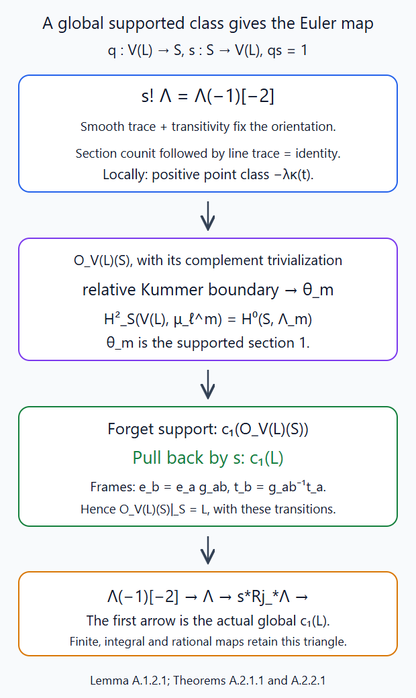
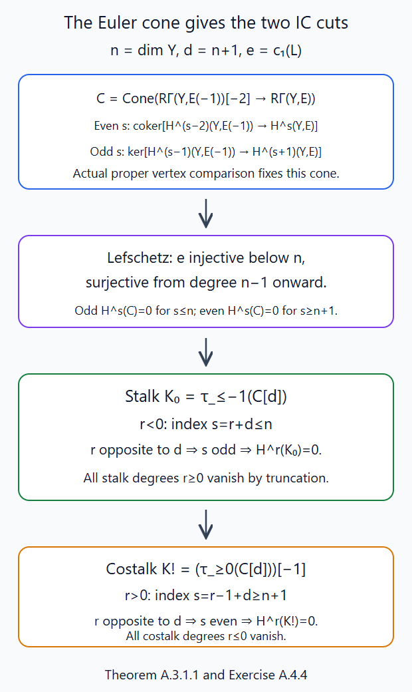
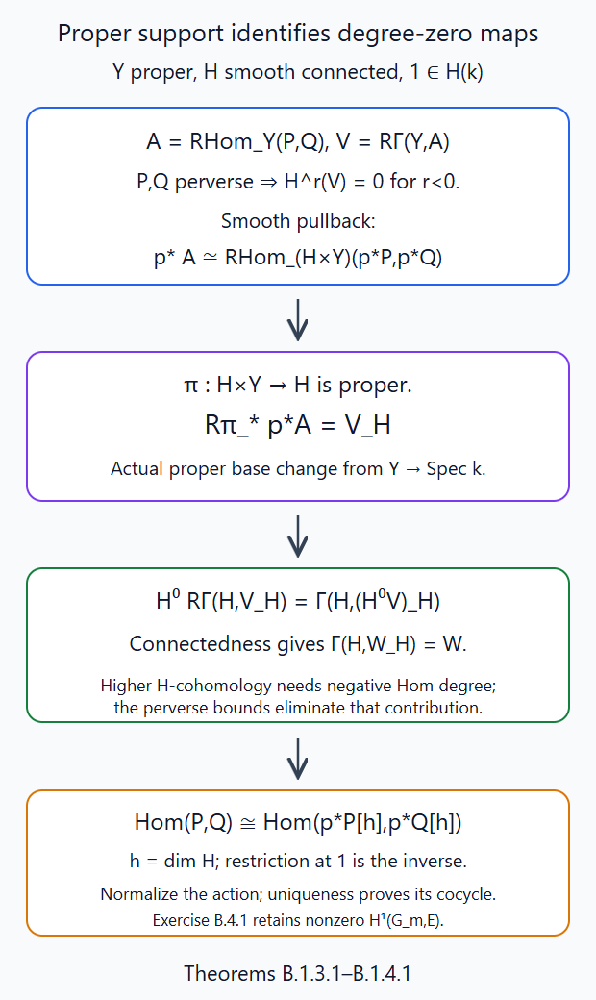
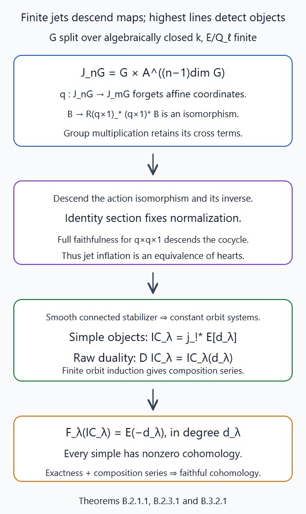

The Satake category
Written by GPT-6.1 Sol (OpenAI), October 2026. Public domain (CC0).
The objects of the Satake category are perverse sheaves on the affine Grassmannian whose equivariance records the integral loop-group action. Each object has support in finitely many Schubert varieties. This makes the definition a finite-dimensional question, despite the infinite-dimensional notation. We construct that category, prove independence of the jet level, classify its simple objects, and establish duality and the exact faithful cohomology functor. We also prove the precise implication from IC parity to semisimplicity, a finite-generator reduction of the parity question, ordinary Lefschetz and IC parity for homogeneous affine cones, and parity for every quasi-minuscule label. The root-coordinate resolution and bounded flag comparison hold over other algebraically closed ground fields. The rational-adic Euler calculation in §5.14 and Appendix A proves quasi-minuscule stalk and costalk parity over every algebraically closed ground field with ell invertible, for finite rational coefficient extensions, including the supported Kummer comparison and actual coefficient maps. Appendix B establishes the underlying genuine finite-jet rational Satake heart over every algebraically closed field with \(\ell\) invertible, for finite \(E/\mathbf Q_\ell\): jet independence, constant equivariant orbit systems, simple classification, raw duality twists and exact faithful cohomology. The automatic orbit-constructible equivariance theorem of §2.2 retains its classical complex scope. The general parity theorem is concluded in Lesson 11 after the classical tensor equivalence; this lesson proves its geometric inputs and conditional generator criterion.
Full classical characteristic-zero semisimplicity is proved later in Identifying the dual group, Theorem 8.3, using the convolution and reconstruction developed after this lesson and the vanishing of IC self-extensions. That proof also gives every standard-object equality. It is proved before general ordinary IC parity, which is then concluded in that lesson, Theorem 8.4. The later equivalence is not an input to the constructions in this lesson.
We work with a connected reductive group \(G/\mathbb C\), a maximal torus \(T\subset B\), and a coefficient field \(\Lambda\). The category and finite-jet arguments work over every coefficient field. Statements conditional on characteristic-zero IC parity are identified explicitly. Put \(O=\mathbb C[[t]]\), \(K=\mathbb C((t))\), \[ K^+=L^+G,\qquad O_\lambda=\operatorname{Gr}^{\lambda},\qquad Z_\lambda=\overline{O_\lambda},\qquad d_\lambda=\langle2\rho,\lambda\rangle. \] The closures are reduced. Their underlying complex analytic spaces determine the classical constructible sheaves used here; the nonreduced test-ring directions of the full Grassmannian do not change that space.
The geometric inputs are Loop groups and the affine Grassmannian, Theorem 7.1, and Orbits and Schubert varieties, §§2–5. The perverse heart, finite length, localization and intermediate extension are proved in The perverse t-structure, Theorems 2.1 and 5.2; Gluing t-structures, §3 and Appendix A.3; and Intermediate extensions and intersection complexes, §§1–2. We use the classical operations constructed in Constructible complexes on algebraic varieties, Appendices C–K, in the exact finite-stage scope explained in Semi-infinite orbits and weight functors, §11. The category arguments use those classical operations. Sections 5.12–5.14 separately prove the uniform root-coordinate resolution, bounded rational-adic flag Lefschetz, and quasi-minuscule IC parity in every ground characteristic.
1. A bounded support has a finite jet action
Choose a faithful closed representation \(G\hookrightarrow\operatorname{GL}(V)\). The full closed Grassmannian immersion is proved in the loop-group lesson, Theorem 7.1. On a bounded lattice stage there is an integer \(A\ge0\) such that, over every parameter algebra \(R\), \[ t^AV_R[[t]]\subset L\subset t^{-A}V_R[[t]]. \tag{1.1} \] Define \[ J_mG(R)=G(R[t]/t^m),\qquad K_m=\ker(K^+\to J_mG),\qquad m\ge1. \] If \(m\ge2A\) and \(h\in K_m(R)\), then \[ (h-1)L\subset t^{m-A}V_R[[t]]\subset t^AV_R[[t]]\subset L. \] The same holds for \(h^{-1}\), so \(hL=L\). This is an equality for arbitrary \(R\), including nilpotents. Since the Grassmannian immersion is a monomorphism, \(K_m\) also acts trivially on the corresponding \(G\)-stage. Thus the action on every finite closed union \(Y\) of Schubert varieties factors through \(J_mG\) for all sufficiently large \(m\). The bounds in the Schubert lesson place any finite collection of such supports in a common stage (1.1).
Lemma 1.1. The group \(J_mG\) is smooth, connected and affine. For \(n\ge m\), the kernel of \(J_nG\to J_mG\) has a finite normal filtration with additive vector-group quotients.
Proof. Affineness and finite presentation follow by inserting truncated polynomial coordinates in the affine equations for \(G\). The map \(J_{a+1}G\to J_aG\) is surjective by smooth lifting across the square-zero ideal \((t^a)/(t^{a+1})\). Its kernel consists of tangent vectors at the identity, with group law addition: \[ \ker(J_{a+1}G\to J_aG)=\operatorname{Lie}(G)\otimes t^a\mathbb C. \] The matrix multiplication calculation is \((1+t^aX)(1+t^aY)=1+t^a(X+Y)\) modulo \(t^{a+1}\). Smooth lifting also makes the morphism smooth: in étale coordinates the new coefficient is a freely chosen tangent vector. Starting from connected smooth \(G\), these successive torsors under connected affine spaces give smooth connected \(J_mG\). For the larger kernel use the successive congruence subgroups. The same coefficient calculation gives its vector quotients; conjugation preserves each congruence subgroup. \(\square\)
The projection \(q:J_nG\to J_mG\) is a torsor under this kernel. Its underlying morphism is a locally trivial affine-space bundle; in fact it has a section over the affine \(J_mG\). To justify this last fact, apply the additive torsor argument of the gluing lesson, §7.3, successively to the congruence filtration. Each vector-group torsor on an affine scheme has zero first cohomology by the explicitly contracted faithfully flat Amitsur complex. Remove one quotient at a time. The resulting kernel torsor is trivial. The same filtration makes the kernel variety an affine space. The chosen section is used only to prove the bundle statement; the comparison of categories below is canonical and does not depend on it.
2. Equivariant structures in the perverse heart
Let a smooth connected algebraic group \(H\) act on \(Y\). Write \(p,a:H\times Y\to Y\) for projection and action. An equivariant structure on \(P\in\operatorname{Perv}(Y,\Lambda)\) is an isomorphism \[ \alpha:p^*P\xrightarrow{\sim}a^*P \tag{2.1} \] whose restriction at \(1\in H\) is the identity and whose two transports on \(H\times H\times Y\) agree with transport by multiplication. Both maps are smooth: the change of coordinates \((h,y)\mapsto(h,hy)\) identifies the action map with projection. Their pullbacks shifted by \(\dim H\) are perverse.
The connected-group theorem in Equivariant perverse sheaves and perverse sheaves on stacks, Theorem 1.1, proves \[ \operatorname{Hom}(P,Q) \xrightarrow{\sim} \operatorname{Hom}(p^*P[\dim H],p^*Q[\dim H]). \tag{2.2} \] Restriction at the identity is its inverse. Here is how it supplies precisely the coherence we need. Any isomorphism in (2.1) can be normalized by composing with the inverse of its restriction at the identity. Two normalized isomorphisms differ by an automorphism of \(p^*P\) restricting to the identity; (2.2) makes it the identity. On \(H^2\times Y\) the two cocycle composites are normalized isomorphisms, so the same argument makes them equal. A morphism \(P\to Q\) is equivariant: after conjugation by the structures, its pullback again restricts to that morphism at the identity, and uniqueness gives compatibility.
Consequently forgetting equivariance is fully faithful on this heart and each object admits at most one structure. This assertion concerns morphisms and structures in the heart. It does not identify derived equivariant Hom groups with ordinary derived Hom groups.
Proposition 2.1. If the action on \(Y\) factors through \(J_mG\), inflation along \(J_nG\to J_mG\) is an equivalence \[ \operatorname{Perv}_{J_mG}(Y,\Lambda) \simeq\operatorname{Perv}_{J_nG}(Y,\Lambda),\qquad n\ge m. \tag{2.3} \]
Proof. The map \(q\times1_Y\) is a locally trivial bundle with contractible affine-space fibre. Lemma B.5 of the equivariant lesson proves, for arbitrary base sheaves and in every finite degree, that its adjunction unit \[ F\longrightarrow R(q\times1)_*(q\times1)^*F \] is an isomorphism. Its proof uses the cochain resolution and dimension shifting, so this does not follow merely from a calculation of fibres of an arbitrary nonproper map. Bounded complexes inherit the identity by ordinary truncations. Adjunction therefore makes the pullback fully faithful.
The two complexes \(p_n^*P\) and \(a_n^*P\) are the pullbacks of \(p_m^*P\) and \(a_m^*P\). Full faithfulness descends a \(J_nG\)-structure uniquely to an isomorphism between the latter. It descends its inverse as well. Normalization follows by restriction at the identity. The cocycle follows after the fully faithful pullback along \(q\times q\times1\). Thus the descended map is a \(J_mG\)-structure. Inflation reverses the construction on structures and morphisms. \(\square\)
2.2. Existence for orbit-constructible objects
Theorem 2.2. If \(\Lambda\) has characteristic zero, every orbit-constructible perverse sheaf on a finite closed union of Grassmannian orbits has unique equivariance for every sufficiently large jet group. Thus forgetting equivariance identifies the two perverse hearts.
Proof. We give the extra existence argument, since connected stabilizers alone only classify equivariant orbit systems.
First let \(B_0\) be a contractible analytic coordinate ball and let \(\mathcal S\) be a finite stratification of a space \(X\). Projection gives an equivalence \[ p^*:D^b_{\mathcal S}(X)\xrightarrow{\sim} D^b_{B_0\times\mathcal S}(B_0\times X). \tag{2.4} \] Its full faithfulness is the arbitrary-base-sheaf acyclicity of the equivariant lesson, Lemma B.5, followed by bounded truncations, as in (2.3). On a single stratum, a local system on the product descends by transport along the contractible ball: subdividing a path and an endpoint-fixed homotopy into coordinate rectangles proves path independence. The path and homotopy construction is given in the first sheaf lesson, Appendix A.4. Ordinary truncation triangles then descend each bounded complex with locally constant cohomology, since their attaching maps descend by full faithfulness.
For several strata use an open union of maximal strata \(j\) and its closed complement \(i\). The two outer objects of \[ j_!j^*F\longrightarrow F\longrightarrow i_*i^*F\xrightarrow{+1} \] descend by induction. Open extension by zero and closed pushforward commute with product pullback on stalks. The connecting map descends by full faithfulness, and its cone supplies a descended object isomorphic to \(F\). This is the finite assembly by triangles of the first sheaf lesson, Proposition 2.2 and Appendix B.2. It proves (2.4) without a nonproper direct-image constructibility assumption.
Suppose a connected complex algebraic group \(H\), with simply connected analytic space, preserves every stratum. The action family \(a^*P\) is constructible on the product strata: inverse image is exact and pulls back each stratum local system. By (2.4), on a coordinate ball in \(H\) it is pulled back from one fibre \(h^*P\), a perverse sheaf. These identifications give transport among its fibres. Morphisms between the locally pulled-back perverse sheaves are constant in a connected parameter ball, by smooth connected-fibre full faithfulness, equation (2.2). Transport around a rectangle inside such a ball is therefore the identity. Subdivide any endpoint-fixed homotopy square into those rectangles; the internal edge transports cancel. Simple connectedness gives path-independent transport from the identity fibre \(P\) to every other fibre. The resulting normalized local isomorphisms glue by the perverse open-descent proof in the perverse-t-structure lesson, Proposition 4.1. They produce \(p^*P\simeq a^*P\). Equation (2.2) supplies uniqueness and the cocycle.
We verify the topological hypothesis for a semisimple simply connected algebraic group \(D\). Choose its opposite big cell through \(1B_D\); it is a dense Bruhat cell \(\mathbb C^d\). Its algebraic complement can be decomposed into finitely many smooth locally closed pieces, by removing singular loci successively; each has real codimension at least two. Every loop in the smooth flag manifold can be moved into that cell. Here is the needed avoidance argument. Cover the loop by finitely many real coordinate balls, subdivide it, and replace its subarcs by straight coordinate segments with nearby vertices. For a smooth piece of codimension at least two, the evaluation of an interior segment point is a submersion in its endpoint parameters. The incidence set of segments meeting that piece has dimension at most the endpoint-parameter dimension minus one: the extra segment parameter contributes one dimension, while meeting the piece removes at least two. Also include the incidence sets in which a movable vertex lies in a complementary smooth piece; these have codimension at least two in the vertex-parameter space. Keep the fixed base vertex \(1B_D\) in the chosen big cell. Cover these incidence manifolds by countably many compact coordinate pieces. Each projected piece has empty interior: on a bounded coordinate piece the smooth parametrization is Lipschitz, so the image of a \(q\)-dimensional box in \(\mathbb R^n\), \(q<n\), is covered by at most \(O(\varepsilon^{-q})\) boxes of side \(O(\varepsilon)\); their total volume tends to zero and cannot cover a fixed positive-volume box. Each compact image is also closed. To avoid their countable union in any small parameter ball, choose successively nested closed balls disjoint from the first, second, and subsequent compact images, with radii tending to zero and each contained in the preceding ball's interior. Their centres converge to a point in every ball, which avoids every image. This proves simultaneous arbitrarily small choices of vertices avoiding all pieces and segments; fix the base vertex outside the complement. The original and perturbed loop are homotopic in their coordinate balls. The new loop contracts in \(\mathbb C^d\). Thus the flag manifold is simply connected.
The locally trivial \(B_D\)-bundle \(D\to D/B_D\) gives \[ \pi_2(D/B_D)\longrightarrow\pi_1(B_D) \longrightarrow\pi_1(D)\longrightarrow0. \tag{2.5} \] The segment follows directly by lifting paths and homotopy squares through local product charts: a nullhomotopy of a projected loop leaves a loop in the fibre, and a lifted sphere contributes its clutching loop. Root coordinates identify the unipotent part of \(B_D\) with a contractible affine space, so \(\pi_1(B_D)=X_*(T_D)\). For the torus calculation, retract each \(\mathbb C^*\) radially to its circle. A subdivided circle loop lifts its angle uniquely to \(\mathbb R\), with endpoint difference \(2\pi n\); homotopy rectangles preserve \(n\), and a lift with \(n=0\) contracts. This proves the lattice assertion.
Each rank-one \(\operatorname{SL}_2\) map gives a sphere in the flag manifold. Its two sections are \[ s_0(z)=\begin{pmatrix}1&0\\z&1\end{pmatrix},\qquad s_\infty(w)=\begin{pmatrix}w&-1\\1&0\end{pmatrix}. \] Their transition is \[ s_0(z)^{-1}s_\infty(1/z)= \begin{pmatrix}z^{-1}&-1\\0&z\end{pmatrix}. \] Its torus loop is the negative simple coroot. These coroots are a basis of \(X_*(T_D)\), by the simply connected root datum. The first map of (2.5) is therefore surjective, and \(\pi_1(D)=0\).
Evaluation and the constant section identify \(J_mD\) with \(D\times U_m\) as varieties. Every jet in \(U_m\) has identity constant term, so it lies in the big cell. Its root coordinates have zero constant coefficients and its torus coordinates have constant coefficient one; their remaining truncated coefficients are free. Thus \(U_m\) is an affine space. The analytic group \(J_mD\) is simply connected, and the preceding transport argument supplies equivariance on every orbit-constructible object for its action.
For the original reductive \(G\), the central root-datum construction in Pinnings and the classification of split reductive groups, Theorem 10.1, gives \[ G=(D\times C)/Z, \] where \(D\) is semisimple simply connected, \(C\) is a central torus and \(Z\) is finite central. Over \(\mathbb C\), this is a finite étale cover. Unique lifting over the nilpotent thickening of the constant term gives \[ J_m(D\times C)=(D\times C)\times_G J_mG. \] Hence \(J_mD\times J_mC\to J_mG\) is a finite étale \(Z\)-torsor. Positive central loops act trivially on the Grassmannian: they commute past any Laurent loop to become its integral right factor. Give \(J_mC\) the identity structure and combine it with the \(J_mD\)-structure.
We must check descent through \(Z\), including possible extension automorphisms. The covering-group stabilizer at \(t^\lambda\) is connected. In \(D\) its root coordinates satisfy exactly \[ z_\alpha\in t^{\max(0,\langle\alpha,\lambda\rangle)}O; \] its evaluation quotient is a connected parabolic, and its congruence kernel has the connected affine root and torus coordinates of the orbit lesson's §2. This argument only uses the integral root pairings of \(\lambda\); it does not require \(\lambda\) to lift to a cocharacter of \(D\). The central jet torus acts trivially, and the covering group is transitive on the same orbit. The check applies to every orbit in the finite support, after enlarging \(m\).
For \(z\in Z\), its induced automorphism \(b_z\) of \(P\) acts as the identity on all stalk cohomology groups. Indeed it fixes every point and lies in its connected covering-group stabilizer; transport on that stabilizer is locally constant and normalized at the identity. This does not alone exclude a nontrivial extension automorphism. If \(z\) has order \(r\), characteristic zero permits the idempotent \[ e=\frac1r\sum_{a=0}^{r-1}b_z^a. \] The complementary direct summand has zero stalk cohomology everywhere, hence is zero as a constructible complex. Thus \(e=1\), and \(b_ze=e\) forces \(b_z=1\). The covering equivariance is therefore invariant under the finite deck group. Effective finite étale descent of perverse morphisms descends the isomorphism, its inverse, normalization and cocycle to \(J_mG\). Proposition 2.1 removes the jet-level choice. Equation (2.2) supplies full faithfulness and uniqueness. \(\square\)
3. The finite-support category and its simple objects
Definition 3.1. The underlying Satake heart \(\operatorname{Sat}_G(\Lambda)\) consists of \(J_mG\)-equivariant perverse sheaves supported on finite closed unions of Schubert varieties, for any sufficiently large \(m\). The objects are identified by (2.3) and by closed extension to larger supports. Its morphisms are morphisms of the underlying perverse sheaves.
A closed extension is fully faithful and perverse t-exact. This follows directly from the stratum tests: the added strata have zero restrictions. Adjunction identifies its morphisms. Given two objects, take a common finite closed support and a common jet level. Their kernel and cokernel acquire structures by the exactness of smooth normalized pullback; the identity and cocycle are inherited. They remain supported in that common support. Hence this is an abelian category, and its inclusion into the ordinary perverse heart is exact and fully faithful. Every ascending or descending subobject chain stops, since forgetting it gives such a chain in a finite-length perverse sheaf. Each object has finite length. No infinite-support objects or infinite direct sums are included.
For the locally closed inclusion \(j_\lambda:O_\lambda\hookrightarrow Z_\lambda\), set \[ IC_\lambda=j_{\lambda!*}\underline\Lambda[d_\lambda]. \tag{3.1} \] Closed extension places it in any larger support. The constant system on the orbit has its tautological equivariance. Smooth pullback commutes with intermediate extension, by its characterization as the extension with neither boundary subobjects nor boundary quotients, proved in the intermediate-extension lesson. The two pulled-back ICs therefore extend the same open equivariance. Its identity and cocycle follow by uniqueness. Thus (3.1) is an equivariant object.
Theorem 3.2. The simple objects are exactly \(IC_\lambda\), for dominant coweights \(\lambda\), and \[ \operatorname{End}(IC_\lambda)=\Lambda,\qquad \operatorname{Hom}(IC_\lambda,IC_\mu)=0\quad(\lambda\ne\mu). \tag{3.2} \]
Proof. The stabilizer in a sufficiently large jet quotient is smooth connected by the orbit lesson, Theorem 2.3. An equivariant local system on a transitive orbit is determined by descent along the orbit torsor. Pulling it back to the acting group gives the constant system with fibre its value at the chosen point. Descent on the stabilizer is a locally constant representation of that stabilizer on the fibre. Connectedness makes this representation trivial. This is also the explicit orbit descent calculation in the equivariant lesson, §3, equation (3.1). Thus equivariant orbit systems are constant.
Take a simple equivariant perverse sheaf. Its support is a finite union of orbit closures. On a dense open orbit of a support component its restriction is a nonzero constant system shifted by that orbit's dimension. The image of the map from its perverse !-extension generated by a line in that constant fibre is a nonzero equivariant subobject. Simplicity makes this image the whole object. The no-boundary-subobject and no-boundary-quotient characterization then identifies it with the intermediate extension of that line. In particular the open fibre has rank one and the object is (3.1). Conversely the intermediate extension of a rank-one constant system is simple: a nonzero proper subobject or quotient either changes its rank-one open restriction or is supported on the boundary, and both possibilities are excluded by that characterization.
A morphism between simples is zero or an isomorphism. Distinct supports or distinct open orbit indices prevent the latter. An endomorphism restricts to a scalar on the rank-one open system. Its difference from that scalar has boundary image, which the IC forbids. This proves (3.2). \(\square\)
Finite length and (3.2) also show that all Hom spaces in this heart are finite dimensional. Apply left exactness of Hom to a composition-series step in either argument, and induct: its dimension is bounded by the sum of the dimensions for its simple factors. Neither this conclusion nor simple classification requires semisimplicity.
4. Duality and orbit cohomology
Classical field Verdier duality is perverse t-exact and exchanges !- and *-restriction. The complex orientation on a smooth orbit gives \[ D(\underline\Lambda[d_\lambda])= \underline\Lambda[d_\lambda]. \] Duality exchanges the two boundary conditions defining intermediate extension. Hence \[ DIC_\lambda=IC_\lambda. \tag{4.1} \] It preserves the whole Satake heart. Indeed dualizing (2.1) produces the structure on \(DP\), with the equal smooth orientation shifts on its two sides cancelled. Normalization and cocycle dualize too. This is an exact contravariant equivalence; it exchanges subobjects and quotients.
We shall also need the following ordinary-cohomology calculation: \[ H^{2r+1}(O_\mu,\Lambda)=0\qquad(r\in\mathbb Z). \tag{4.2} \] The evaluation projection \(O_\mu\to G/P_\mu^-\) is a locally trivial affine-space fibration by the orbit lesson, §2. The arbitrary-base-coefficient product argument of the equivariant lesson, Lemma B.5, proves that its ordinary constant-sheaf direct image is the constant sheaf, with no higher direct images. Thus its cohomology is the flag variety's cohomology.
The root-coordinate Bruhat cells in Automorphisms, forms and parabolic subgroups, Theorem 7.1, give a finite affine paving of that flag variety. To see that they form the needed closed filtration, the closure of any Borel orbit is stable and therefore is a union of the finitely many such orbits. Its boundary has smaller dimension. Ordering the cells by increasing dimension makes every initial union closed: it contains the closure of every cell in it. A successive complement is \(\mathbb C^e\), whose compact cohomology is \(\Lambda\) in degree \(2e\) and zero elsewhere, by the oriented one-point-compactification cochain calculation. Compact-support localization along this finite filtration kills every odd degree. The flag variety is proper, so ordinary and compact cohomology agree. This proves (4.2).
Every ordinary cohomology sheaf of an IC restricted to an orbit is constant. Its smooth equivariance restricts to equivariance of that local system, so the connected-stabilizer calculation in §3 applies. The same holds for costalk cohomology, by (4.1).
5. What IC parity would imply
Orbit dimensions have a common parity inside each connected component. The component theorem in the orbit lesson, §5, identifies a component with a coroot class, and \[ \langle2\rho,\alpha_i^\vee\rangle=2. \] Thus \(d_\lambda\equiv d_\mu\pmod2\) for two orbit indices in that component. Individual components can have odd orbit dimensions.
Here is the precise parity hypothesis: \[ \mathcal H^q(j_\mu^*IC_\lambda)=0 \quad\text{unless }q\equiv d_\lambda\pmod2, \qquad O_\mu\subset Z_\lambda. \tag{P} \] General (P) is not proved here. The next two propositions are implications with this explicit hypothesis, rather than uses of (P) as an available theorem.
Put \[ \Delta_\lambda={}^pH^0(j_{\lambda!}\underline\Lambda[d_\lambda]), \qquad \nabla_\lambda={}^pH^0(Rj_{\lambda*}\underline\Lambda[d_\lambda]). \]
Proposition 5.1. If (P) holds for \(IC_\lambda\), then the canonical maps are isomorphisms \[ \Delta_\lambda\xrightarrow{\sim}IC_\lambda \xrightarrow{\sim}\nabla_\lambda. \tag{5.1} \]
Proof. On a boundary orbit the strict IC bound is ordinary degree \(q\le-d_\mu-1\). The last possible degree has the wrong parity under (P), so \[ j_\mu^*IC_\lambda\in D^{\le-d_\mu-2},\qquad j_\mu^!IC_\lambda\in D^{\ge-d_\mu+2}. \tag{5.2} \] For the second bound dualize the first: duality on the smooth orbit sends a constant cohomology term in degree \(q\) to degree \(-q-2d_\mu\). If \(i\) is the boundary inclusion, the stratum tests make (5.2) say \(i^*IC_\lambda\in{}^pD^{\le-2}\). The localization triangle \[ j_{\lambda!}\underline\Lambda[d_\lambda]\longrightarrow IC_\lambda\longrightarrow i_*i^*IC_\lambda\xrightarrow{+1} \] then has zero boundary perverse cohomology in degrees \(-1\) and \(0\). Its heart long exact sequence gives the first isomorphism of (5.1), normalized to the identity on the open orbit. Duality gives the second. \(\square\)
Proposition 5.2. If (P) holds for all dominant coweights, then \(\operatorname{Sat}_G(\Lambda)\) is semisimple.
Proof. First consider one orbit \(O\), with the even cohomology (4.2). If complexes \(A,B\) have constant ordinary cohomology sheaves in degrees of the same parity, then \[ \operatorname{Hom}(A,B[n])=0\quad(n\text{ odd}). \tag{5.3} \] For single cohomology terms \(\underline U[-a]\) and \(\underline V[-b]\), this Hom is \[ H^{n+a-b}(O,\underline{\operatorname{Hom}_\Lambda(U,V)}), \] which is zero since \(a-b\) is even. Negative cohomology is zero as well. Finite ordinary truncation triangles build each complex from its cohomology terms. Their Hom long exact sequences inductively give (5.3); no splitting of those truncations is assumed.
On a finite union of orbits, suppose the stalk cohomology of \(A\) and the costalk cohomology of \(B\) are constant in the same parity. Choose an open union of maximal orbits \(j:U\hookrightarrow Y\), with closed complement \(i:Z\hookrightarrow Y\). Localization bounds \(\operatorname{Hom}_Y(A,B[n])\) between \[ \operatorname{Hom}_Z(i^*A,i^!B[n]),\qquad \operatorname{Hom}_U(j^*A,j^*B[n]). \] The second vanishes by (5.3); the first vanishes by induction on the number of strata, since its iterated stalks and costalks are the original ones. This proves odd Hom vanishing on \(Y\).
Apply this with \(A=IC_\lambda\) and \(B=IC_\mu\) in the same component. Hypothesis (P), (4.1), and the component parity give the required common parity for stalks and costalks. Thus \[ \operatorname{Hom}(IC_\lambda,IC_\mu[1])=0. \tag{5.4} \] For different components all Hom groups are zero by their disjoint open-and-closed supports.
A short exact sequence \(0\to IC_\mu\to E\to IC_\lambda\to0\) in the heart gives a triangle; this is the categorical proof in the gluing lesson, Appendix A.3. Its connecting morphism is zero by (5.4). Applying Hom from \(IC_\lambda\) lifts its identity to a section of the quotient map. That section is a heart morphism, and is equivariant by (2.2). The sequence splits. The same argument applies to a finite direct sum as its subobject. Induction on the finite composition length established in §3 splits every object into a finite sum of ICs. \(\square\)
5.3. Even fibres of rootwise resolutions
The rootwise projective-line constructions give more geometry without assuming (P). We prove that every Schubert variety has a smooth projective birational source whose reduced fibres have affine pavings. This alone will not identify its IC summand.
Let \(I\subset K^+\) be the Iwahori subgroup, the inverse image of a Borel under evaluation. For an affine simple reflection \(s\), let \(P_s\) be the corresponding rank-one parahoric. The loop-group lesson, Lemmas 7.8–7.9, constructs \(P_s/I\simeq\mathbb P^1\) and the smooth projective contracted products \[ Z_{\mathbf s}=P_{s_1}\times^I\cdots\times^I P_{s_r}/I. \] Their local torsor charts, ordered affine root coordinates and endpoint maps are part of those constructions. The Iwahori normal form in the first lesson, Theorem 2.C, decomposes a Schubert variety into finitely many Iwahori cells. Choose the dense cell of \(Z_\lambda\), indexed by the minimal right finite-Weyl representative \(w_\lambda\). Its length is \(d_\lambda\): its affine root coordinates are the dense cell coordinates of the \(d_\lambda\)-dimensional spherical orbit.
Write \(w_\lambda=\omega s_1\cdots s_r\), where the word is reduced and \(\omega\) has length zero. The normalizer representative \(\omega\) preserves \(I\). Start the contracted product with the right torsor \(E_0=n_\omega I\), with actual left multiplication by \(I\). In the displayed ordinary \(Z_{\mathbf s}\) coordinates this action is \(i\star z=(n_\omega^{-1}in_\omega)\cdot z\), and the endpoint is \(n_\omega m(z)\). This makes the translated endpoint \(I\)-equivariant in every component. Its endpoint map is \[ f_\lambda:Z_{\mathbf s}\longrightarrow Z_\lambda, \qquad r=d_\lambda. \tag{5.5} \] The open root-coordinate chart maps isomorphically onto the dense cell, by uniqueness of the affine normal form. Minimality of the right coset representative means that its image of every positive finite root is a positive affine root; thus the flag-cell coordinates introduce no further quotient direction in passing to the Grassmannian. The complement of this chart is \(I\)-stable and has dimension less than \(d_\lambda\). Its proper image cannot meet the dense \(I\)-orbit: an invariant set meeting that orbit contains the whole orbit of dimension \(d_\lambda\). Therefore (5.5) is an isomorphism over that cell. Its source is smooth projective of dimension \(d_\lambda\); its image is closed and contains the dense cell, so is \(Z_\lambda\).
We first compute endpoint fibres in the auxiliary affine flag space. No infinite-dimensional representability is required: over a bounded Grassmannian stage, reduce its universal formal-disc torsor modulo \(t\) and form its Borel-reduction scheme. The smooth projective Borel scheme of the corresponding inner form is constructed in Automorphisms, forms and parabolic subgroups, Theorem 2.1. On local torsor charts this flag space is \(LG/I\), with flag fibre \(G/B\). All endpoint maps below land in this finite-stage flag scheme.
For a partial word of length \(a\), write \(F_a(y)\) for its flag endpoint fibre at \(yI\). Forgetting the last factor identifies it with the inverse image of the wall line \(yP_{s_a}/I\) under the preceding endpoint map. Once the preceding endpoint is specified on that line, the final coset is uniquely fixed by the target \(yI\); this gives the identification on each local torsor chart and its inverse.
By \(I\)-equivariance take \(y\) to be a normalizer representative. Let \(v\) be the shorter of \(y\) and \(ys_a\). The wall line has closed point \(vI\) and open affine chart \[ c\longmapsto x_{v(a_{s_a})}(c)\,vs_aI. \] The root \(v(a_{s_a})\) is positive because the reflected element is longer, so this root group lies in \(I\). Its left action explicitly trivializes the inverse image of the open chart. Hence \(F_a(y)\) has closed part \(F_{a-1}(v)\) and open part \[ \mathbb A^1\times F_{a-1}(vs_a). \tag{5.6} \] At length zero the fibre is a point or empty, with the initial point \(\omega I\). Inductively pave the two smaller fibres; the product cells in (5.6) are affine spaces. To combine the filtrations, first use the closed-part filtration, then add its whole closed part to each initial closed subset of the open-part filtration. Those unions are closed in the whole fibre, since their complements are open in its open part. Thus this is a closed affine paving of every reduced flag fibre.
Now fix a Grassmannian endpoint. The affine normal form makes it \(I\)-conjugate to \(t^\nu K^+\). Its flag fibre is \(G/B\). Choose the positive root system \[ \Phi_\nu^+=\{\alpha:\langle\alpha,\nu\rangle>0\} \cup\{\alpha>0:\langle\alpha,\nu\rangle=0\}. \] It is the system defined by \(\nu+\varepsilon\gamma\), where \(\gamma\) is strictly dominant and \(\varepsilon>0\) is sufficiently small. Let \(B_\nu\) be its Borel. For its selected roots, \[ \langle\alpha,\nu\rangle\ge r_I(\alpha),\qquad r_I(\alpha)=0\ (\alpha>0),\quad r_I(\alpha)=1\ (\alpha<0). \] Indeed a selected negative root has strictly positive integral pairing, and a zero-pairing selected root is positive. Rootwise conjugation consequently gives \(t^\nu B_\nu t^{-\nu}\subset I\).
The finite flag cells relative to \(B_\nu\) have explicit sections \[ c\longmapsto\sigma_v(c)n_vB,\qquad c\in\mathbb A^{e_v},\quad\sigma_v(c)\in B_\nu, \] by the root coordinates of the parabolic lesson, Theorem 7.1. To apply that theorem with its original Borel, choose a normalizer representative \(n_u\) with \(B_\nu=n_uBn_u^{-1}\), conjugate the root coordinates, and identify the two flag quotients by right multiplication with \(n_u\). This gives exactly the displayed sections for \(G/B\). The group element \[ i_v(c)=t^\nu\sigma_v(c)t^{-\nu}\in I \] preserves the spherical endpoint. Its left action trivializes the resolution fibre over this flag cell as \[ \mathbb A^{e_v}\times F_r(t^\nu n_vI), \tag{5.7} \] with inverse given by \(i_v(c)^{-1}\). Pull back the flag's finite closed cell filtration and insert the product pavings of (5.7). The same closed-union argument used for (5.6) produces an affine paving of every reduced Grassmannian fibre of (5.5). Compact-support localization along the paving gives only even cohomology. Fibres are proper, so we have proved \[ H^{2q+1}(f_\lambda^{-1}(x),\Lambda)=0 \quad\text{for all }x\in Z_\lambda. \tag{5.8} \] This holds for every classical coefficient field. It asserts parity of the resolution pushforward, not of IC itself.
The geometric issue that remains is the IC inclusion and retraction. To deduce (P) from (5.8), one needs proved maps \[ IC_\lambda\xrightarrow{u}Rf_*\underline\Lambda[d_\lambda] \xrightarrow{v}IC_\lambda,\qquad vu=1. \tag{5.9} \] The obstruction can be specified precisely. Put \(K_\lambda=Rf_{\lambda*}\underline\Lambda[d_\lambda]\), let \(j\) be the dense cell on which (5.5) is an isomorphism, and let \(i\) be its complement. The canonical identity extension \(\eta:IC_\lambda\to Rj_*\underline\Lambda[d_\lambda]\) has a lift to \(K_\lambda\) exactly when its composite with the connecting map in \[ i_*i^!K_\lambda\longrightarrow K_\lambda \longrightarrow Rj_*\underline\Lambda[d_\lambda] \xrightarrow{\partial}i_*i^!K_\lambda[1] \] vanishes. Thus the remaining assertion is \(\partial\eta=0\). If it is proved, a lift \(u\) restricts to the identity on that dense open. Proper smooth-source duality makes \(K_\lambda\) self-dual; dualizing \(u\) gives \(v\) with identity open restriction. Equation (3.2) then forces \(vu=1\). Proper base change and (5.8) make the stalks of IC a direct summand in the correct parity, establishing (P). The vanishing of \(\partial\eta\) is obtained in Lesson 11, §8.7, after general parity; the sufficient criterion just proved does not assume that later result.
5.4. A criterion using standard objects
There is a second sufficient condition for semisimplicity, weaker than proving every stalk parity first. The weight functors are exact by Semi-infinite orbits and weight functors, §17; their faithful sum is proved independently in §6 below.
Proposition 5.3. Suppose that the canonical map \(\Delta_\lambda\to IC_\lambda\) is an isomorphism for every label. Then the Satake heart is semisimple. It suffices to prove, for every \(\lambda,\nu\), equality of the finite dimensions
\[ \dim F_\nu(\Delta_\lambda)=\dim F_\nu(IC_\lambda). \tag{5.10} \]
Proof. The defining map \(\Delta_\lambda\to IC_\lambda\) is surjective. Every exact weight functor sends it to a surjection. Under (5.10) these are isomorphisms; their faithful sum annihilates its kernel, proving the first hypothesis.
We prove that hypothesis implies splitting of extensions without assuming (P). Take two distinct labels \(\lambda,\mu\). After interchanging them if necessary, choose \(\lambda\) so that its orbit is not contained in \(Z_\mu\); distinct closure labels cannot both be contained in one another. On \(Y=Z_\lambda\cup Z_\mu\), the orbit \(O_\lambda\) is open: its complement is the closed union \((Z_\lambda\setminus O_\lambda)\cup Z_\mu\). Put \(j:O_\lambda\hookrightarrow Y\), \(A=j_!\Lambda[d_\lambda]\), and \(C={}^p\tau_{\le-1}A\). The right t-exactness of \(j_!\) and truncation give
\[ C\longrightarrow A\longrightarrow\Delta_\lambda \longrightarrow C[1]. \]
For perverse \(Q\), the Hom exact sequence injects \(\operatorname{Hom}(\Delta_\lambda,Q[1])\) into \(\operatorname{Hom}(A,Q[1])\): the preceding group is \(\operatorname{Hom}(C[1],Q[1])=\operatorname{Hom}(C,Q)=0\) by perverse orthogonality. For \(Q=IC_\mu\), open adjunction makes the latter Hom zero because \(j^*Q=0\). Verdier self-duality reverses the two arguments, so the degree-one group in the other direction is also zero. This covers incomparable closures as well as strict containment.
For equal labels, take \(Y=Z_\lambda\). The same injection and adjunction bound its self-Hom group in degree one by \(H^1(O_\lambda,\Lambda)=0\), as proved in §4. Different components are already separated by disjoint supports. Thus every extension between simples splits. As in Proposition 5.2, the zero connecting map lifts the identity of the quotient to a heart section, full faithfulness makes the section equivariant, and finite-length induction splits every object. \(\square\)
The numerical equality (5.10) is a sufficient premise, not an assertion supplied by exactness alone. In general the map of weight spaces is known to be surjective; the missing part would be injectivity. The criterion does not assume a reductive reconstructed group or identify simple characters before those results are proved.
The obstruction has an exact description. Put \(B_\lambda=\ker(\Delta_\lambda\twoheadrightarrow IC_\lambda)\), supported on the boundary \(i:\partial Z_\lambda\hookrightarrow Z_\lambda\). For every strict boundary label \(\mu<\lambda\),
\[ \operatorname{Ext}^1_{\mathrm{Sat}}(IC_\lambda,IC_\mu) \simeq\operatorname{Hom}(B_\lambda,IC_\mu), \qquad B_\lambda\simeq{}^pH^{-1}(i^*IC_\lambda), \tag{5.11} \]
where the second equality identifies the boundary object with its closed extension. To prove the first, open adjunction gives \(\operatorname{Hom}(\Delta_\lambda,IC_\mu)=0\), and the preceding truncation injection gives \(\operatorname{Ext}^1(\Delta_\lambda,IC_\mu)=0\). Pushout of \(0\to B_\lambda\to\Delta_\lambda\to IC_\lambda\to0\) along a map \(B_\lambda\to IC_\mu\) defines the asserted extension. Conversely pull any such extension back to \(\Delta_\lambda\). The pullback splits by that Ext vanishing; its section restricted to \(B_\lambda\) lands in \(IC_\mu\), providing the inverse map. Sections differ by \(\operatorname{Hom}(\Delta_\lambda,IC_\mu)=0\), so the inverse is unique. A split pushout makes its boundary map extend to \(\Delta_\lambda\), hence makes it zero. Pushout along sums agrees with the diagonal-and-addition definition of the Baer sum, proving the vector-space identification.
The Ext vanishing just used follows from derived Hom vanishing as follows. Gluing t-structures, Appendix A.3 proves that heart exact sequences are precisely triangles with three heart terms. Their connecting map is in degree-one derived Hom. If it is zero, the triangle's Hom exact sequence lifts the identity of its quotient to a section. Conversely, for any degree-one map \(A\to B[1]\), its rotated cone \(B\to E\to A\) has \(E\) in the heart by its degree bounds and cohomology sequence, hence is an extension. This constructs the two directions needed here; full faithfulness of §2 preserves their equivariance.
For the second, the standard-object truncation gives \(i^*\Delta_\lambda\in{}^pD^{\le-2}\), as proved in Semi-infinite orbits and weight functors, equation (20.2). Apply \(i^*\) to the kernel triangle. Since \(i^*B_\lambda\) is the same perverse boundary object, the degree-\(-1,0\) sequence identifies \({}^pH^{-1}i^*IC_\lambda\) with \(B_\lambda\). If that kernel is nonzero, finite length supplies a simple boundary quotient; the first identification then supplies a nonzero extension. Thus vanishing of all \(B_\lambda\) is also necessary for semisimplicity. This proves an equivalent criterion, and locates its obstruction in one boundary perverse degree. The general vanishing is supplied later by Lesson 11; it is not assumed in this criterion's proof.
5.5. What the resolution's intersection map must prove
We can also separate the two geometric requirements for obtaining the IC summand from a projective resolution.
Lemma 5.4. Let \(P\) be a perverse sheaf on a finite stratified support \(Y\), and let \(i:S\hookrightarrow Y\) be a closed stratum, with open complement \(j\). Put
\[ A={}^pH^0(i^!P),\qquad B={}^pH^0(i^*P). \]
The adjunction maps \(i_*A\to P\to i_*B\) induce a map \(h:A\to B\). If \(h\) is an isomorphism, then
\[ P\simeq i_*A\oplus j_{!*}(j^*P). \tag{5.12} \]
Proof. The first adjunction uses \(i^!P\in{}^pD^{\ge0}\), and the second uses \(i^*P\in{}^pD^{\le0}\), so both degree-zero maps exist with the displayed direction. Write them as \(u,v\). Since \(vu=i_*h\), the map \(r=(i_*h)^{-1}v\) satisfies \(ru=1\). In the abelian heart this gives \(P=i_*A\oplus P'\), with \(P'=\ker r\). Taking degree-zero perverse cohomology after \(i^!\), the map induced by \(u\) is the identity of \(A\), by its defining truncation and adjunction. Thus \({}^pH^0(i^!P')=0\). After \(i^*\), the map induced by \(v\) is the identity of \(B\); the first summand maps isomorphically onto \(B\) through \(h\), so \({}^pH^0(i^*P')=0\) as well. These are exactly the absence of a subobject or quotient supported on \(S\). The checked intermediate-extension characterization therefore gives \(P'=j_{!*}j^*P\), proving (5.12). \(\square\)
Apply this lemma successively to closed strata in the remaining open support. If the corresponding maps \(h\) are all isomorphisms, iteration decomposes \(P\) into ICs of its stratum local systems. Intermediate extension preserves finite direct sums, by its image definition, so each step carries the previously obtained terms to their closures. In the spherical heart the local systems are constant by §3, and finite-dimensional vector spaces split into rank-one lines.
Now let \(K_\lambda\) be the resolution complex of §5.3. A relative ample class satisfying the actual perverse Lefschetz isomorphisms would give
\[ K_\lambda\simeq\bigoplus_a{}^pH^a(K_\lambda)[-a]. \tag{5.13} \]
The implication from those isomorphisms to (5.13) is proved in The decomposition theorem, §2. It does not itself establish the geometric Lefschetz hypothesis or semisimplicity of the terms. If, in addition, the maps in Lemma 5.4 are invertible at the successive strata for \(P={}^pH^0(K_\lambda)\), the lemma decomposes that term into ICs. On the dense cell the resolution is an isomorphism and \(K_\lambda\) restricts to a single \(\Lambda[d_\lambda]\). Hence the full-support IC occurs once in \(P\). Its inclusion and projection, composed with the degree-zero inclusion and projection in (5.13), give exactly the two maps in (5.9). This is a proved conditional reduction. Actual relative Lefschetz and the invertibility of those geometric intersection maps remain necessary premises; neither is inferred from the even fibre groups in (5.8).
5.6. The boundary consequence of standard–IC equality
The following deduction records precisely how much local parity follows from the standard-object equality proved later in Lesson 11. It is not an input to that proof.
Proposition 5.5. Suppose \(\Delta_\lambda=IC_\lambda\). For the boundary inclusion \(i:\partial Z_\lambda\hookrightarrow Z_\lambda\), \[ i^*IC_\lambda\in{}^pD^{\le-2},\qquad i^!IC_\lambda\in{}^pD^{\ge2}. \tag{5.14} \] If a boundary orbit \(O_\mu\) has codimension two, the restriction of \(IC_\lambda\) to it is concentrated in ordinary degree \(-d_\lambda\), and its exceptional restriction in degree \(d_\lambda-2d_\mu\). Both degrees have parity \(d_\lambda\).
Proof. The first bound is (20.2) of Lesson 5 applied to the standard object, which now equals the IC. Alternatively (5.11) removes perverse degree \(-1\) from the strict IC bound. Verdier self-duality gives the second. On an orbit of dimension \(d_\mu\), these bounds give ordinary stalk degrees at most \(-d_\mu-2\) and costalk degrees at least \(-d_\mu+2\).
There are no ordinary IC degrees below \(-d_\lambda\). To verify this rather than assume it, use Intermediate extensions, §1, (1.5)–(1.7). Starting with \(\Lambda[d_\lambda]\), that construction applies successive \(Rj_*\) and upper ordinary truncations \(\tau^{\le-s-1}\). A right-derived left-exact functor preserves the lower bound \(D^{\ge-d_\lambda}\), and those upper cutoffs are at least \(-d_\lambda\), so they introduce no lower degrees. Thus the entire IC lies in \(D^{\ge-d_\lambda}\). If \(d_\lambda-d_\mu=2\), the lower bound and the stalk upper bound coincide. Duality on the smooth \(d_\mu\)-dimensional orbit sends a local system in degree \(-d_\lambda\) to its dual in degree \(d_\lambda-2d_\mu\), proving the costalk assertion. \(\square\)
For higher codimension, this proof leaves a specific local question. In that ordinary-truncation construction, let \(j_s:V_{s+1}\hookrightarrow V_s\) adjoin the strata of dimension \(s\), and for such an orbit put \[ B_\mu=i_\mu^*Rj_{s*}(IC_\lambda|_{V_{s+1}}). \] The proved construction gives \(i_\mu^*IC_\lambda=\tau^{\le-s-1}B_\mu\). Since \(s\equiv d_\lambda\pmod2\) in the component, (5.14) removes the last wrong-parity degree \(-s-1\). General parity would follow if \[ \mathcal H^q(B_\mu)=0 \quad\text{for }q\le-s-3, \quad q\not\equiv d_\lambda\pmod2. \tag{5.15} \] This retained lower-degree vanishing has not been proved for general higher-codimension slices. Upper truncation cannot remove a surviving degree below its cutoff. Likewise, semisimplicity of spherical perverse objects does not split the derived rootwise resolution of §5.3: that resolution is Iwahori-equivariant and need not be spherical, and semisimple perverse cohomology alone does not supply its derived inclusions. Either (5.15) or the explicit identity-extension lift in (5.9) would supply the remaining geometric step.
5.7. A finite family that detects general parity
The following lemma separates an unconditional lattice fact from a conditional tensor-generation statement. The latter will be applied only after the classical equivalence has been proved in Lesson 11; that equivalence is not a proof input here. Put \[ L=X_*(T),\qquad Q^\vee=\mathbb Z\Phi^\vee,\qquad \Gamma=L/Q^\vee. \]
Lemma 5.6. Every class in \(\Gamma\) has a dominant minuscule representative. Choose such representatives \(\mu_1,\ldots,\mu_a\) for a finite set of generators of \(\Gamma\). In each irreducible coroot component choose its dominant short coroot \(\nu_i\). Let \(R/\Lambda\) be the split reductive group with dual root datum. If the Satake category admits a rigid tensor structure with product convolution and an exact tensor equivalence to \(\operatorname{Rep}_\Lambda(R)\) carrying \(IC_\xi\) to the highest-weight module \(V_\xi\), then every \(IC_\lambda\) is a direct summand of a finite direct sum of convolution words in \[ IC_{\mu_1},\ldots,IC_{\mu_a},IC_{\nu_1},\ldots,IC_{\nu_b} \quad\text{and their tensor duals}. \tag{5.16} \]
Proof of the lattice assertion. Let \(E=\mathbb RQ^\vee\). The reflection calculation in Root data, Weyl chambers and the Bruhat decomposition, §1, applied to the dual datum, gives \(L_{\mathbb R}=E\oplus E^W\). Give \(E\) a Weyl-invariant positive definite inner product and take this sum orthogonally. A coset \(\eta+Q^\vee\) has fixed central projection and semisimple projections forming the discrete lattice translate \(\eta_E+Q^\vee\). Only finitely many points of that translate lie in any bounded ball, so its norm attains a minimum. Reflections preserve the coset, since \(s_\alpha\eta-\eta=-\langle\alpha,\eta\rangle\alpha^\vee\). Move a minimizing representative \(\mu\) into the dominant chamber. For every positive root \(\beta\), comparison with \(\mu-\beta^\vee\) gives \[ 2(\mu_E,\beta^\vee)\le\|\beta^\vee\|^2, \qquad \langle\beta,\mu\rangle =\frac{2(\mu_E,\beta^\vee)}{\|\beta^\vee\|^2}\le1. \] Dominance and integrality make every positive-root pairing zero or one. This is precisely the minuscule condition. The argument allows an infinite component group, nonprimitive coroots and arbitrary central torus directions.
Here is also the root fact needed to choose \(\nu_i\), without a list of types. In an irreducible root system choose a positive short root of maximum height. If its pairing with a simple coroot were negative, reflection would add a positive multiple of that simple root, preserving length and increasing height. Thus it is dominant. Its simple-root support is the whole connected diagram: a missing node adjacent to the support would have negative pairing. Two distinct dominant short roots would have positive inner product, because one has full support and the other has nonnegative simple-root pairings, at least one strictly positive. For roots of equal length this positive inner product is strictly smaller than their common squared length, and their difference is a root, by the reflection argument proved in Lie proofs for the characteristic-zero group construction, §5. If the difference is positive, its pairing with the second root is negative; if negative, its negative has negative pairing with the first root. Both contradict dominance. Hence the dominant short root is unique. Apply this argument to each coroot component. Each \(\nu_i\) belongs to \(Q^\vee\subset L\).
Proof of the conditional generation assertion. The root-datum construction in Pinnings and the classification of split reductive groups, §§6–10 supplies \(R\) and its highest-weight modules. Its character lattice is \(L\). The schematic centralizer theorem in Regular elements and centralizers, Theorem 2.2 places its centre inside its torus. There it consists exactly of elements killed by every root character: this condition commutes with each root group on every parameter algebra, and the torus and root groups generate fppf locally by the pinned-group lesson, Lemma 4.1. Since the roots of \(R\) span \(Q^\vee\), this proves \[ Z(R)=D(\Gamma). \] All weights of \(V_\xi\) differ from \(\xi\) by the root lattice of \(R\), so its central character is the class of \(\xi\) in \(\Gamma\). Form \[ V=\bigoplus_j V_{\mu_j}\oplus\bigoplus_i V_{\nu_i}. \] The first family has central characters generating \(\Gamma\). On every coefficient algebra \(A\), an element of \(D(\Gamma)(A)=\operatorname{Hom}(\Gamma,A^\times)\) acting trivially on this family is one on every generator, hence is the identity. Thus the representation kernel has trivial intersection with the entire centre, including its finite part.
Let \(\mathfrak k\) be the differential kernel. The derived Lie algebra is a sum of simple ideals, and every ideal is a sum of these factors, as proved in the Lie-construction lesson, Proposition 3.2. The module \(V_{\nu_i}\) is nontrivial on its indicated simple factor: its highest weight has a nonzero simple-coroot pairing there. Thus \(\mathfrak k\cap[\mathfrak r,\mathfrak r]=0\). Moreover \[ [\mathfrak r,\mathfrak k] \subset\mathfrak k\cap[\mathfrak r,\mathfrak r]=0, \] so \(\mathfrak k\) is central. The centre calculation already kills its central part; therefore \(\mathfrak k=0\).
The schematic kernel \(K\) is affine of finite type. The characteristic-zero smoothness theorem proved in Supporting proofs for the consumed group-scheme foundations, Theorem G.3.4 makes \(K\) smooth. Its zero Lie algebra makes it zero-dimensional and finite étale. After algebraic closure, connected \(R\) acts trivially by conjugation on this finite discrete group. Equivalently, the morphism to its finite automorphism group is constant and is the identity at the unit. Hence \(K\) is central; faithful flat descent gives the same assertion over the coefficient field. The previously trivial central intersection forces \(K=1\). The closed-image theorem in Group schemes over a field, Proposition 5.8 now makes \(R\to GL(V)\) a closed immersion.
For completeness, this closed immersion yields the actual tensor-generation argument. The algebra \(\Lambda[R]\) is generated by matrix coefficients of \(V\) and the inverse determinant. The latter is a coefficient of \(\bigwedge^{\dim V}V^\vee\), which is a summand of a tensor power in characteristic zero: average the signed permutations to obtain its alternating projector. Thus finite products of coefficients of \(V,V^\vee\) span \(\Lambda[R]\). The coefficients of words of bounded total length form finite-dimensional subcomodules, each a quotient of a finite sum of those tensor words. Any finite-dimensional rational module \(M\) embeds by its coaction \[ M\longrightarrow M_{\mathrm{triv}}\otimes\Lambda[R] \] into finitely many copies of one such coefficient space; injectivity follows by applying the counit. Consequently \(M\) is a subquotient of a finite sum of words in \(V,V^\vee\). Complete reducibility, proved in Group schemes, actions and Hopf algebras, Theorem 5.22, splits this subquotient and makes it a direct summand. Expand the direct sums defining \(V\), and transport the splitting through the tensor equivalence assumed in the lemma. This proves the conditional assertion (5.16). \(\square\)
Every minuscule object in this family already satisfies (P). Indeed the stabilizer computation in Orbits and Schubert varieties, §2 identifies its orbit with \(G/P_\mu^-\): all positive root pairings are zero or one, so every first congruence coefficient lies in the stabilizer. This flag variety is smooth and projective, hence its orbit is closed in the separated Grassmannian. Its IC is \(\Lambda[d_\mu]\), with the same ordinary stalk and costalk parity. A central minuscule label gives a point.
Under the lemma's tensor-equivalence hypothesis, the dual of \(IC_\xi\) has label \(-w_0\xi\): the dual irreducible module has that highest weight. The ordinary highest-weight construction above proves this by negating its weights and its one-dimensional extremal lines. A minuscule label stays minuscule under \(-w_0\), and \(-w_0\nu_i=\nu_i\), by uniqueness of the dominant short coroot. Thus the finite family and its duals all have the same two geometric forms. Sums and direct summands preserve parity degree by degree, and component parity is additive, since \(d_{\lambda+\eta}=d_\lambda+d_\eta\). The geometric inputs still to establish are parity of \(IC_{\nu_i}\) and preservation of parity under convolution; they do not follow merely from the conditional tensor-generation statement.
5.8. Ordinary Lefschetz for a flag variety
We prove the cohomological fact needed to compute IC at a cone vertex. The proof uses a finite complex of invariant differential forms.
Theorem 5.7. Let \(B_0=G/P\) have complex dimension \(n\), and let \(\mathcal L\) be an ample line bundle. For every characteristic-zero field \(\Lambda\) and \(0\le q\le n\), cup product gives an isomorphism \[ c_1(\mathcal L)^{n-q}:H^q(B_0,\Lambda) \xrightarrow{\sim}H^{2n-q}(B_0,\Lambda). \tag{5.17} \]
A compact transitive group. The pinned-group theorem in Pinnings and the classification of split reductive groups, Theorem 5.1 constructs an automorphism \(\theta\) by mapping the character datum to its negative and the positive simple root frames \(e_i\) to the opposite frames \(-f_i\). It sends the linked negative frames to \(-e_i\) and the torus to its inverse. Its square fixes the pinning and datum, so uniqueness gives \(\theta^2=1\). This construction is defined on the integral split model. Consequently it commutes with split complex conjugation, and \(\sigma=\theta\circ\text{conjugation}\) is an antiholomorphic involution.
Let \(K_0=G(\mathbb C)^{\sigma,0}\). The exponential and local inversion used here are proved in Local tools for bundles and transport, §§1–2. ODE uniqueness identifies the invariant-flow exponential with the convergent matrix exponential and gives \(\sigma(\exp X)=\exp(d\sigma X)\). Choose a small exponential domain stable under \(d\sigma\). Injectivity of that chart identifies its fixed locus with the fixed real vector space; translates supply real Lie-group charts everywhere. Its semisimple Lie algebra has the rootwise form \[ i\mathfrak h_{\mathbb R}\oplus \bigoplus_{\alpha>0} \bigl(\mathbb R(e_\alpha-f_\alpha) \oplus\mathbb R\,i(e_\alpha+f_\alpha)\bigr). \] The explicit Killing-form computation in Compact forms and the unitary trick, Theorem 2.1 makes its Killing form negative definite. That lesson, §3, proves that its derivations are inner and that its automorphism group is a closed subgroup of the corresponding orthogonal group. The latter is compact; the embedded subgroup and Lie-algebra identification are proved in Invariant connections on homogeneous bundles, Theorem A.1. The adjoint map from \(K_0\) to the identity component of this automorphism group has surjective differential. Local sections follow by exponentiating a complement to the kernel Lie algebra and applying the inverse-function theorem, or directly from the local-tools lesson, Corollary 1.3. Its image is therefore an open subgroup of a connected group, hence is the whole target.
The kernel is \(Z(G)^\sigma\cap K_0\). On the diagonalizable centre \(\sigma(z)=\bar z^{-1}\), so its fixed points consist of a compact torus and finitely many components; the kernel is closed there and is compact. A local section \(s\) gives the product coordinates \((y,c)\mapsto s(y)c\), with inverse \(x\mapsto(p(x),s(p(x))^{-1}x)\). Cover the compact target by finitely many smaller neighborhoods whose compact closures lie in these section domains. The inverse images of those closures are compact by the product coordinates and compact kernel, and cover \(K_0\). Thus \(K_0\) is compact.
Take first \(P\) containing the positive Borel. In each negative root plane surviving in \(\mathfrak g/\mathfrak p\), the real vectors above project to \(-f_\alpha\) and \(if_\alpha\). They span that complex plane over \(\mathbb R\). Hence the \(K_0\)-orbit through the base point is open. It is closed by compactness. Root coordinates make \(G/P\) connected, so this orbit is all of \(B_0\). Conjugating handles every parabolic. For a torus, \(B_0\) is a point and the same assertions have their immediate interpretation.
Invariant forms compute cohomology. Put \[ C^\bullet=\Omega^\bullet(B_0;\mathbb C)^{K_0},\qquad \mathcal A\alpha=\int_{K_0}k^*\alpha\,dk. \] Normalized Haar integration is constructed directly from invariant densities in the compact-form lesson, §5. Invariance makes evaluation at one point injective on \(C^q\), so \(C^q\) is finite dimensional. The operator \(\mathcal A\) projects onto \(C^\bullet\) and commutes with \(d\).
There is an actual cochain homotopy from \(\mathcal A\) to the identity. Cover \(K_0\) by finitely many exponential neighborhoods \(V_i\). For \(k\in V_i\), choose a path from the identity to the center of \(V_i\), followed by the short exponential path to \(k\). Each piece depends smoothly on \(k\); add its two homotopy operators. The differential-form homotopy formula proved in Connections, curvature and characteristic forms, Part A.2 gives \(k^*-1=dT_i(k)+T_i(k)d\). Choose a subordinate smooth partition \(\chi_i\) and set \[ T=\sum_i\int_{K_0}\chi_i(k)T_i(k)\,dk. \] The compact parameter integrals can be differentiated coefficientwise, and their weights sum to one. Therefore \[ \mathcal A-1=dT+Td. \tag{5.18} \] Inclusion of \(C^\bullet\) and averaging are thus inverse on cohomology. The multiplicative de Rham comparison, proved in the same characteristic-forms lesson, Part A.3, identifies it with singular cohomology.
A finite harmonic space. Embed \(B_0\) by a sufficiently high power \(\mathcal L^m\). The restricted normalized Fubini–Study form is positive, closed and of type \((1,1)\), and represents \(m c_1(\mathcal L)\). Explicitly its local potential is \((i/2\pi)\partial\bar\partial\log\sum|z_j|^2\); the line-bundle curvature normalization is proved in the characteristic-forms lesson, Theorem D.1. Average this form over \(K_0\). Holomorphic pullback and positive averaging preserve the three properties, and (5.18) preserves its cohomology class. Call the resulting Kähler form \(\omega\).
Its metric, Hodge star, formal adjoint \(d^*\), and the operators \(L=\omega\wedge-\), \(\Lambda_0=L^*\), preserve \(C^\bullet\). Stokes' formula, proved in Part A.1 of the characteristic-forms lesson, gives the adjoint identity on this finite complex. For \(\Delta=dd^*+d^*d\), positivity gives \(\ker\Delta=\ker d\cap\ker d^*\). The images of \(d\) and \(d^*\) are orthogonal because \(d^2=0\); their common orthogonal complement is this kernel. Thus \[ C^q=\operatorname{im}d\oplus\ker\Delta\oplus\operatorname{im}d^*. \] A closed vector has no \(\operatorname{im}d^*\) component, by taking its inner product with that component. Every cohomology class consequently has a unique harmonic invariant representative. All these spaces are finite dimensional.
The local operator calculation. Write \(d=\partial+\bar\partial\). At each point choose normal holomorphic coordinates with \(dz_j\) unitary and \(\omega=i\sum_jdz_j\wedge d\bar z_j\) there. Here is why the first derivatives can be removed. In coordinates with Hermitian matrix \(g_{a\bar b}(0)=\delta_{ab}\), closedness of \(\omega\) says \(\partial_cg_{a\bar b}=\partial_ag_{c\bar b}\). In the change \[ z_b=w_b+\tfrac12\sum_{a,c}C^b_{ac}w_aw_c, \qquad C^b_{ac}=-\partial_cg_{a\bar b}(0), \] the symmetric coefficients make every holomorphic first derivative of the transformed matrix zero. Conjugation removes the antiholomorphic first derivatives as well.
The underlying real metric at that point is \(g=2\sum_j(dx_j^2+dy_j^2)\); thus \(dz_j,d\bar z_j\) have unit Hermitian cotangent norm. Let \(a_j,b_j\) be wedge multiplication by these forms, and let \(A_j=\iota_{\partial/\partial z_j}\), \(B_j=\iota_{\partial/\partial\bar z_j}\) be their adjoint contractions. At this point the coordinate formulas are \[ \begin{aligned} L&=i\sum_j a_jb_j,&\Lambda_0&=-i\sum_jB_jA_j,\\ \partial&=\sum_j a_j\partial_{z_j},& \partial^*&=-\sum_jA_j\partial_{\bar z_j},\\ \bar\partial&=\sum_j b_j\partial_{\bar z_j},& \bar\partial^*&=-\sum_jB_j\partial_{z_j}. \end{aligned} \tag{5.19} \] The adjoint derivative formulas follow by integration by parts; the first derivatives of the metric and volume density vanish here. Wedge and contraction anticommute, except \(A_ja_l+a_lA_j=B_jb_l+b_lB_j=\delta_{jl}\). Expanding these relations gives \[ [B_jA_j,a_l]=\delta_{jl}B_j, \qquad [B_jA_j,b_l]=-\delta_{jl}A_j. \] Substitute in (5.19): \[ [\Lambda_0,\partial]=i\bar\partial^*,\qquad [\Lambda_0,\bar\partial]=-i\partial^*. \] These first-order identities involve only the metric and its first derivatives, so the pointwise normal-coordinate calculation proves them globally. Taking adjoints yields \[ [L,d^*]=d^c, \qquad d^c=i(\bar\partial-\partial). \] Since \(d\omega=0\), \([L,d]=0\). The identities \(\partial^2=\bar\partial^2=0\) and \(\partial\bar\partial+\bar\partial\partial=0\), obtained by separating types in \(d^2=0\), give \[ [L,\Delta]=d\,d^c+d^cd=0. \] Adjunction also gives \([\Lambda_0,\Delta]=0\). Hence both operators preserve the harmonic space.
Finite strings and coefficient fields. The same wedge-contraction relations, checked on each of the four basis vectors \(1,dz_j,d\bar z_j,dz_j\wedge d\bar z_j\) and added over \(j\), give \[ [L,\Lambda_0]=h,\qquad h|_{C^q}=q-n,\qquad [h,L]=2L,\qquad[h,\Lambda_0]=-2\Lambda_0. \] The finite harmonic space is therefore an \(\mathfrak{sl}_2\)-module. It is completely reducible: \(L^*=\Lambda_0\) and \(h^*=h\), so the orthogonal complement of every invariant subspace is invariant under all three operators. Induction decomposes it into simple modules. On each summand the string theorem proved in Representations of \(\mathfrak{sl}_2\), Theorem 2.1 says that raising a weight \(q-n\le0\) by \(L^{n-q}\) maps it isomorphically to the opposite weight. It follows that \(L^{n-q}\) is an isomorphism on cohomology. By the multiplicative comparison this is cup product by \((m c_1(\mathcal L))^{n-q}\); divide by \(m^{n-q}\).
Finally choose a finite good cover of the compact manifold \(B_0\), using the construction in the characteristic-forms lesson, Part A.2, and compactness. Its singular-cochain comparison in Part A.3 works over every field: the prism, subdivision and small-cochain contractions use only integer sums and signs, and each contractible intersection has just the constants as cohomology. Thus the finite constant Čech complex over \(\mathbb Q\), with the displayed Čech product, computes the rational cohomology ring. Tensoring it with any characteristic-zero field computes the cohomology ring over that field and preserves the coefficient image of the integral \(c_1(\mathcal L)\). Tensoring finite complexes of vector spaces preserves their cohomology, by choosing complements to cycles and boundaries. The rational Lefschetz map becomes an isomorphism over \(\mathbb C\), so its finite rational matrix is already invertible over \(\mathbb Q\), and remains so over \(\Lambda\). This proves (5.17). \(\square\)
5.9. Parity at a homogeneous cone vertex
Corollary 5.8. Let \(B_0=G/P\subset\mathbb P(W)\) be a projective embedding, and let \(C\subset W\) be its reduced affine cone. Its intersection complex, for the two strata \(C\setminus\{0\}\) and \(\{0\}\), has ordinary stalk and costalk cohomology only in degrees of parity \(d=\dim_{\mathbb C}C\), over every characteristic-zero field.
Proof. The punctured cone is the nonzero-vector bundle of the tautological line \(\mathcal L^{-1}=\mathcal O_{B_0}(-1)\). Indeed a nonzero vector determines its line, and this identifies it with the corresponding pair in the tautological bundle. It is smooth of dimension \(d=n+1\), where \(n=\dim B_0\). Scalar radial coordinates identify a sufficiently small punctured neighborhood of the vertex with the unit circle bundle times a contractible interval. The same circle bundle is a deformation retract of the whole punctured cone. The sheaf–singular comparison is proved in Constructible complexes on algebraic varieties, Appendix C.2, equation (C.6); it identifies these cohomology groups with the vertex stalk of \(Rj_*\Lambda\).
The Gysin sequence proved in The Gysin sequence and projective splitting, Theorem 1.1 uses the Euler class \(c_1(\mathcal L^{-1})=-c_1(\mathcal L)\). Since the base has only even cohomology, it identifies, for odd \(k\), \[ H^k(C\setminus\{0\},\Lambda) =\ker\bigl(c_1(\mathcal L):H^{k-1}(B_0,\Lambda) \longrightarrow H^{k+1}(B_0,\Lambda)\bigr). \] For \(k\le n\) this kernel is zero. If a class in degree \(k-1<n\) is killed by \(c_1\), it is killed by \(c_1^{n-k+1}\), an isomorphism by Theorem 5.7, and must vanish. Negative cohomology degrees are zero as well.
The ordinary-truncation construction of IC, proved in Intermediate extensions and intersection complexes, §1, gives at the zero-dimensional vertex \[ i^*IC_C=\tau^{\le-1}i^*Rj_*\Lambda[d]. \] Its retained degree \(q\le-1\) is \(H^{q+d}(C\setminus\{0\},\Lambda)\), with \(q+d\le n\). If \(q\not\equiv d\pmod2\), then \(q+d\) is odd, so that group vanishes by the calculation above. Self-duality of IC gives the same parity for its vertex costalk. On the smooth open stratum both restrictions are \(\Lambda[d]\). This proves the assertion. \(\square\)
5.10. The quasi-minuscule neighborhood is that cone
Proposition 5.9. Let \(\nu\) be the dominant short coroot in one irreducible factor. The Schubert variety \(Z_\nu\) has precisely the spherical strata \(O_\nu\) and the unit point. A neighborhood of that point is the affine cone over the projective highest-root orbit in the selected simple Lie ideal. Consequently \(IC_\nu\) satisfies (P), over every characteristic-zero coefficient field and for every central or isogeny lattice of \(G\).
The root line and its projective orbit. Choose the corresponding root \(\theta\), so \(\theta^\vee=\nu\), and compatible root vectors \(e_\theta,f_\theta\). Since \(\nu\) is short, \(\theta\) is a longest root. The signs of its simple-coroot pairings equal those of the simple-root pairings with \(\nu\), so \(\theta\) is dominant. For a positive root \(\beta\), \(\|\theta+\beta\|^2>\|\theta\|^2\), because \((\theta,\beta)\ge0\). Thus \(\theta+\beta\) is not a root and the positive root groups fix \(e_\theta\).
The \(\nu\)-grading has degrees \(-2,-1,0,1,2\), with its degree-two and degree-minus-two spaces the single lines \(\mathbb C e_\theta,\mathbb C f_\theta\). Indeed Cauchy–Schwarz and the integral root pairing give \[ |\langle\beta,\nu\rangle|\le1\quad(\beta\ne\pm\theta), \qquad\langle\theta,\nu\rangle=2. \] The selected factor is the only one with nonzero grading. Put \(N=\#\{\beta>0:\langle\beta,\nu\rangle=1\}\). The rank-one strings of its adjoint module identify the degree-minus-one and degree-one spaces by raising with \(e_\theta\). Raising on degree minus two has the coroot line as image, and raising from degree zero onto degree two has rank one. Therefore \[ \dim Ge_\theta=N+2=\langle2\rho,\nu\rangle=:d. \tag{5.20} \] The orbit dimension here is the rank of the orbit differential: its stabilizer is a smooth characteristic-zero group, by Cartier, and the schematic orbit theorem in Group schemes over a field, §7 identifies the orbit with the stabilizer quotient.
The line stabilizer is exactly \(P=P_G(\nu)\). Its root groups of nonnegative degree preserve the line: raising by a root of degree zero cannot produce another degree-two root, and raising by positive degree cannot produce degree three or higher. The torus scales the line. This gives a schematic inclusion \(P\subset H=\operatorname{Stab}(\mathbb C e_\theta)\).
To exclude additional components, write a complex point of \(H\) as \(b_1n_wb_2\), using Root data, Weyl chambers and the Bruhat decomposition, Theorem 6.2. The factor \(b_2\) preserves the line. The \(b_1\)-action on \(e_{w\theta}\) has a nonzero coefficient at its original weight \(w\theta\), and its other weights are obtained by adding positive roots. Preservation of the line therefore forces \(w\theta=\theta\). For a reduced word \(w=s_{i_1}\cdots s_{i_m}\), \[ \theta-w\theta= \sum_{j=1}^m\langle\theta,\alpha_{i_j}^\vee\rangle s_{i_1}\cdots s_{i_{j-1}}\alpha_{i_j}. \] All the displayed roots are positive by the reduced-word rule, Proposition 3.1 of that lesson; their coefficients are nonnegative. A strictly dominant functional shows that a zero sum forces each coefficient to vanish. Thus \(w\) belongs to the subgroup generated by the simple roots perpendicular to \(\theta\), whose representatives lie in \(P\). Hence \(H\) and \(P\) have the same complex points. Both are reduced closed subgroups by smoothness and Cartier, so they are equal. The projective quotient theorem in Automorphisms, forms and parabolic subgroups, Theorem 1.1 now gives the smooth projective orbit \[ Y=G/P\hookrightarrow\mathbb P(\mathfrak g),\qquad \dim Y=N+1=d-1. \] The immersion is the schematic orbit immersion, and projectivity makes it closed.
Let \(L_0=\mathcal O_Y(-1)\) be its actual tautological line. The incidence morphism \[ \pi:L_0=G\times^P\mathbb C e_\theta\longrightarrow\mathfrak g \] is proper, since its total space is closed in \(Y\times\mathfrak g\). Its reduced image is the affine cone \(C\). The character \(\theta:T\to\mathbb G_m\) is surjective over \(\mathbb C\), even when it is nonprimitive, so the torus supplies every nonzero scalar. Thus \[ C=Ge_\theta\sqcup\{0\},\qquad L_0^\times\simeq C\setminus\{0\}. \] The second isomorphism sends a nonzero vector to its line and that vector. Every element of the nonzero orbit is nilpotent, being conjugate to a root vector. These assertions establish the two-stratum cone directly.
Its map to the Grassmannian. Choose a faithful closed matrix representation of \(G\). The operator \(e_\theta\) raises torus weights by \(\theta\), so the finite weight set makes it nilpotent: \(e_\theta^{b+1}=0\) for some integer \(b\). The same matrix identity holds on the reduced cone, by density of its nonzero orbit. Hence \[ \Phi:C\longrightarrow\operatorname{Gr}_G, \qquad X\longmapsto\exp(t^{-1}X)G(O), \qquad \exp(t^{-1}X)=\sum_{j=0}^b\frac{t^{-j}X^j}{j!}. \tag{5.21} \] The group equations hold on the dense orbit, where this polynomial is a conjugate of \(u_\theta(a/t)\); they therefore hold on all of \(C\). Uniform finite pole bounds place (5.21) in a finite scheme stage, using Loop groups and the affine Grassmannian, Lemma 7.3. It is a monomorphism on every parameter algebra \(A\). Indeed equality of its two cosets makes \[ \exp(-t^{-1}X_2)\exp(t^{-1}X_1) \] integral, first fpqc locally and then over \(A\) by coefficient descent. Its matrix entries also lie in \(A[t^{-1}]\) and its constant term is the identity. Since \(A[t^{-1}]\cap A[[t]]=A\) inside \(A((t))\), that product is the identity. Its \(t^{-1}\) coefficient is \(X_1-X_2\), so \(X_1=X_2\), including for nonreduced \(A\).
A proper compactification. Form the projective bundle of lines \[ \widetilde Z=\mathbb P_Y(\mathcal O\oplus L_0). \] On its affine \(L_0\)-chart define \([g,a]\mapsto g u_\theta(a/t)G(O)\), which equals \(\Phi\pi\). The \(P\)-action on \(e_\theta\) through its line character makes this formula independent of its local frame. On the infinity chart set \(c=a^{-1}\). The actual rank-one homomorphism \(SL_2\to G\), constructed in Roots and reductive groups of rank one, Theorem 7.1, gives \[ u_\theta(a/t)G(O)=u_{-\theta}(ct)t^{-\nu}G(O),\qquad ac=1. \tag{5.22} \] To check it, multiply the first \(SL_2\) matrix on the right by \(\begin{pmatrix}0&-a\\c&t\end{pmatrix}\in SL_2(A[[t]])\). The result is \(\begin{pmatrix}t^{-1}&0\\c&t\end{pmatrix}\), exactly the second expression. Thus the infinity formula extends regularly to \(c=0\), where it is \(g t^{-\nu}\). On overlaps the formulas agree on the dense locus where \(a\) is invertible. Reducedness of the bundle charts and separatedness of the target extend equality over each whole overlap. They therefore glue to an algebraic morphism with a uniform finite pole bound.
The three constant-\(G\) pieces of this smooth projective bundle have images \[ Y_{0}\mapsto t^0,\qquad L_0^\times\mapsto\Phi(Ge_\theta),\qquad Y_{\infty}\mapsto Gt^{-\nu}. \tag{5.23} \] Equation (5.22) shows that the last two pieces lie in \(O_\nu\); the chosen root reflection gives \(s_\theta(\nu)=\nu-\langle\theta,\nu\rangle\theta^\vee=-\nu\), so these two labels are Weyl conjugate. The first lies at the unit, which belongs to \(Z_\nu\) by the closure theorem of Lesson 04. Reducedness makes the morphism factor schematically through \(Z_\nu\). Its middle image has dimension \(d\), by the monomorphism and (5.20), equal to \(\dim Z_\nu\). Properness and irreducibility therefore make \(f:\widetilde Z\to Z_\nu\) surjective. Since all its points have the two indicated relative positions, there are no other spherical strata.
The infinity image is a closed embedded \(Y_\infty\simeq G/P\): the root stabilizer calculation of Lesson 04, §2, gives the constant stabilizer of \(t^{-\nu}\) as \(P_G(\nu)\). It has dimension \(d-1\), whereas the middle image is one constant-\(G\) orbit of dimension \(d\). These orbits are disjoint, since intersecting orbits coincide. Neither contains the unit. Consequently for \(U=Z_\nu\setminus Y_\infty\), the open inverse image is exactly \(L_0\), and \(f|_{L_0}=\Phi\pi\).
The map \(\Phi:C\to U\) is proper. After any base change, the image of a closed subset of \(C\) is the image under the proper \(f|_{L_0}\) of its closed inverse image under \(\pi\); the latter is universally surjective because it is proper and surjective. Thus \(\Phi\) is universally closed, as well as separated and of finite type. A finite-type monomorphism is quasi-finite by Unramified morphisms, Proposition 6.1. A proper quasi-finite morphism is finite, and a finite monomorphism is a closed immersion, by the written proofs in Affine descent, Zariski Main and recognition of spaces, Corollary D7.3 and Lemma E4.1. Since \(\Phi\) is surjective on points and \(U\) is reduced, its defining ideal is zero. We have proved \[ U\simeq C,\qquad X\longmapsto\exp(t^{-1}X)G(O). \tag{5.24} \]
The punctured cone has the negative tautological line, with Euler class \(-c_1(\mathcal O_Y(1))\). Corollary 5.8 proves the required parity at its vertex. On the other spherical stratum IC is already \(\Lambda[d]\). Restriction of intermediate extension to the open neighborhood (5.24) is its cone IC, by the local construction, so both stalk and costalk assertions in (P) follow.
All formulas use the actual root line and the actual coroot in \(Q^\vee\), without replacing \(G\) by a simply connected form. The other simple ideals and the centre act trivially on this cone and lie in \(P\). Hence the argument applies to every reductive lattice in Lemma 5.6. For \(SL_2\), \(Y\) is the adjoint conic in projective space and \(L_0=\mathcal O_{\mathbb P^1}(-2)\); this recovers the sign and the local surface calculation in §7. \(\square\)
5.11. Convolution preserves the required parity
For this calculation call a complex pure parity \(\epsilon\) if both its point stalks and its Verdier dual's point stalks vanish outside degrees congruent to \(\epsilon\). For an orbit-constructible complex this is equivalent to its ordinary orbit stalk and costalk parity: stratum duality contributes the even shift \(2\dim_{\mathbb C}O\). This definition also applies to Iwahori-constructible complexes.
We first specify the bounded derived correspondence used here. Take finite closed spherical supports \(X_1,X_2\) and choose \(n\) so deep that \(K_n\) fixes \(X_2\). The universal formal-disc torsor and its étale frame charts are constructed in Loop groups and the affine Grassmannian, §§4,7. Its frames modulo \(t^n\) form \(E_n\to X_1\): on those charts this is \(U\times J_nG\), and the frame changes glue these products as an actual finite-type \(J_nG\)-torsor. Formal frames lift on affine charts by successive smooth square-zero lifting; two lifts of a truncated frame differ by \(K_n\). Form \[ Y=E_n\times^{J_nG}X_2,\qquad m:Y\longrightarrow\operatorname{Gr}, \quad[g,z]\longmapsto gz. \] Choose the frames deeply enough for the displayed endpoint map: changing a frame by \(K_n\) fixes its relative endpoint. If the two lattice bounds are \(N_1,N_2\), the last lattice lies between \(t^{N_2}L_1\) and \(t^{-N_2}L_1\), hence has bound \(M=N_1+N_2\). This also proves representability and properness directly. On an étale formal-frame chart \(U\to X_1\), with frame \(g_U\), impose \(g_U^{-1}z\in X_2\) in \(U\times X_M\). The inverse frame puts this endpoint in bound \(M+N_1\), so this is the inverse image of a closed immersion in a finite stage. An integral change of frame preserves \(X_2\); the closed ideals therefore agree on overlaps. Faithfully flat ideal descent, proved in the gluing lesson, gives a closed scheme \(Y\subset X_1\times X_M\). Choosing and forgetting the first frame are inverse maps between this endpoint scheme and the displayed associated functor, on every parameter algebra. Thus \(Y\) is projective and \(m\) is proper.
For complexes \(A,Q\), with \(Q\) spherical equivariant, its twisted external product is the descended complex on \(Y\) whose pullback to \(E_n\times X_2\) is the unshifted pullback of \(A\boxtimes Q\). The finite classical equivariant construction is proved in Equivariant perverse sheaves and perverse sheaves on stacks, Lemma B.7, Proposition B.8 and Theorem B.9. In each finite cohomological interval it uses a sufficiently acyclic free frame. Torsor descent in this model can be checked on a chart \(E=H\times U\): adding a free frame \(V\) makes \((V\times E)/H=V\times U\), and restriction to \(h=1\) identifies the quotient complex as a pullback from \(U\). To construct the global object, put \(\pi:(V\times E)/H\to Y\). For its quotient complex \(B\), with upper bound \(b\), take \(B_Y=\tau^{\le b}R\pi_*B\). On each torsor chart the pullback description and Lemmas B.5–B.7 make the counit \(\pi^*B_Y\to B\) an isomorphism. It is therefore an isomorphism globally; those charts also prove constructibility of the displayed truncation. B.7's full faithfulness descends morphisms and the required cones. This supplies actual global derived descent, including its behavior on retractions.
Define \(A*Q=Rm_*(A\widetilde\boxtimes Q)\). Its local formula has no frame-dimension shift. Increasing jet levels compares the models by the contractible congruence kernels of Lemma 1.1 and the arbitrary-base-sheaf product proof in the equivariant lesson, Lemma B.5. Increasing free-frame acyclicity compares each prescribed finite interval by B.7–B.8. Thus this is a well-defined bounded derived correspondence, also when \(A\) is only Iwahori equivariant. The same finite frame recipe will be used for perverse convolution in Lesson 07.
Lemma 5.10. If \(IC_\lambda\) satisfies (P) and \(Q\) is a spherical pure-parity complex of parity \(\eta\), then \[ IC_\lambda*Q\text{ has pure parity }d_\lambda+\eta. \tag{5.25} \]
Equivariant odd Hom on Iwahori cells. All following actions and maps are taken at sufficiently deep finite jet levels, on finite support bounds. Choose free-frame acyclicity separately large enough for the complexes, their cones and the Hom degrees used in each finite diagram. No single finite model is claimed to calculate all degrees.
For an Iwahori cell represented by \(t^\xi K^+\), its stabilizer has full constant torus \(T\) and root levels \[ \max\{r_I(\alpha),\langle\alpha,\xi\rangle\},\qquad r_I(\alpha)=0\ (\alpha>0),\quad r_I(\alpha)=1\ (\alpha<0). \] This is the same ordered-coordinate intersection calculation as the Iwahori normal form in Lesson 01, Theorem 2.C, replacing the second Iwahori threshold by the integral-loop threshold. Torus arcs occur without restriction. At a finite jet level the projection to the constant torus has its constant section, and the remaining affine-root and congruence-torus coordinates form a connected unipotent group \(U\). Thus the stabilizer is \(H=T\ltimes U\), with \(U\) an affine space as a variety. Equivariant orbit local systems are constant: a connected stabilizer has no nontrivial action on a locally constant fibre, as proved in §3.
Here is the requisite equivariant cohomology calculation. Choose a sufficiently acyclic free \(I_m\)-frame \(V\), where \(I_m=I/K_m\) is the finite jet group acting on the cell, and regard it also as a free \(H\)-frame. The map \(V/T\to V/H\) has contractible fibre \(H/T\simeq U\), with local torsor product charts. Lemma B.5 makes its constant-sheaf adjunction unit an isomorphism. Compare \(V/T\) with \((\mathbb P^{M-1})^{\operatorname{rk}T}\) through \[ \bigl(V\times(\mathbb C^M\setminus0)^{\operatorname{rk}T}\bigr)/T. \] Both projections have sufficiently acyclic fibres in any prescribed finite range when the frame and \(M\) are large: punctured affine space retracts to its sphere, whose cochains give that range, and the other fibre is \(V\). The bounded comparisons of B.7 identify cohomology in that range. The projective-space product has only even cohomology, by its affine-cell calculation. Consequently \[ H^{\mathrm{odd}}(BH,\Lambda)=0 \tag{5.26} \] in every finite degree range, and these groups are finite dimensional in each degree. For the orbit, the identity \((V\times I_m/H)/I_m=V/H\) identifies its equivariant constant-sheaf Hom groups with this calculation.
An equivariant complex on this cell with constant cohomology in a single parity splits into its cohomology shifts. The Postnikov attaching map between two such shifts has odd equivariant Hom degree and vanishes by (5.26); ordinary truncations commute with the exact pullbacks in the frame model. It follows that matching stalk-parity and costalk-parity complexes have zero odd Hom on a cell. Localization and adjunction, by the same finite-stratum induction as Proposition 5.2, give this vanishing on a finite union of cells. In particular, for its open union \(j\) of maximal cells and closed complement \(i\), \[ \operatorname{Hom}(E,F)\longrightarrow \operatorname{Hom}(j^*E,j^*F)\quad\text{is surjective} \tag{5.27} \] when \(E\) is stalk-parity \(\epsilon\) and \(F\) is costalk-parity \(\epsilon\). The obstruction is \(\operatorname{Hom}(i^*E,i^!F[1])=0\). This is vanishing in the equivariant derived category, rather than forgetting an equivariance condition on a derived map.
An actual derived IC retraction. Let \(f_\lambda\) be the ordinary Bott–Samelson resolution (5.5) and \(B_\lambda=Rf_{\lambda*}\Lambda[d_\lambda]\). Its affine-paved fibres in §5.3 prove stalk parity. Its proper smooth-source duality makes it self-dual, so it has costalk parity too. Its restriction to the dense Iwahori cell of \(Z_\lambda\) is \(\Lambda[d_\lambda]\). The assumed IC parity makes the same statements for \(IC_\lambda\). Refinement to Iwahori cells preserves point-stalk and dual-point-stalk parity.
Apply (5.27) in both directions. The dense-cell identity lifts to equivariant derived maps \[ IC_\lambda\xrightarrow{u}B_\lambda\xrightarrow{v}IC_\lambda. \] Their composite restricts to the identity. Both its source and target are perverse, and the equivariant derived heart is the ordinary equivariant heart by Theorem B.9. Equation (3.2) therefore gives \(vu=1\). This is a genuine derived retraction. It uses the parity assumption on this IC and the proved odd Hom vanishing, rather than a splitting of perverse cohomology or an IC decomposition theorem.
One wall preserves parity. For an affine simple reflection \(s\), form \[ a_s:P_s\times^I\operatorname{Gr}\longrightarrow\operatorname{Gr}, \qquad[p,z]\longmapsto pz, \qquad\Theta_s(E)=Ra_{s*}E_s, \] where \(E_s\) is the unshifted associated complex. The actual \(P_s/I=\mathbb P^1\) quotient and its two root sections were proved in Lesson 02, §§7.4–7.5. On bounded supports their pole bounds permit a finite congruence quotient of the final \(I\)-torsor, and a deeper left jet acts because conjugation loses only a fixed finite number of powers of \(t\). Gluing the two chart products constructs the finite associated source and its complex. Its projection to \(\mathbb P^1\) is proper, with the given proper support as fibre, so the endpoint map is proper.
At a normalizer endpoint \(x=n_wK^+\), the full endpoint fibre is \(P_s/I\); extend the associated complex by zero from its chosen bounded support to this full fibre. Let \(a\) be the simple affine root, and use the two root sections \[ p_0(z)=x_{-a}(z),\qquad p_\infty(c)=x_a(c)n_s. \] The relative endpoint in either chart is \(p^{-1}x\). If \(w^{-1}a>0\), then \(n_w^{-1}x_a(c)n_w\in I\), and throughout the infinity chart this endpoint is the constant point \(n_s^{-1}n_wK^+\). Its complementary point has endpoint \(n_wK^+\). If \(w^{-1}a<0\), the zero chart has constant endpoint \(n_wK^+\), since \(w^{-1}(-a)>0\), and its complementary point has endpoint \(n_s^{-1}n_wK^+\). Hence the fibre has one closed point and an open \(\mathbb A^1\), on both of which the associated complex has constant cohomology in the input parity. The two endpoints may coincide as Grassmannian cosets; the calculation remains valid.
Compact cohomology of a point and of \(\mathbb A^1\) occurs in even degrees. Ordinary truncation on each piece and the compact-support localization triangle show that \(\Theta_s(E)\) has the input stalk parity. Proper base change identifies this computation with its endpoint stalk, and Iwahori equivariance transports it over that entire cell. Locally the associated source is a complex one-dimensional smooth chart times the support of \(E\). Smooth product duality and proper duality therefore give \[ D\Theta_s(E)=\Theta_s(DE)[2]. \tag{5.28} \] Complex orientations make these chart identifications agree on overlaps. Applying the stalk calculation to \(DE\) proves costalk parity. Thus the unshifted wall functor preserves pure parity.
Concatenation is convolution. Write the reduced word in (5.5) as \(w_\lambda=\omega s_1\cdots s_r\), with \(r=d_\lambda\). Its final principal \(I\)-torsor \(\mathcal E\) extends to the pullback of the endpoint's principal \(K^+\)-torsor: \(\mathcal E\times^I K^+\). After a deep truncation, the associated second support is exactly \((\mathcal E/I_n)\times^{I/I_n}X_2\). This identifies the base change of the bounded convolution correspondence with the successive wall correspondence, on its actual root charts and on every parameter ring. Products of the finitely many wall representatives have a fixed pole bound, so the identification stays in finite stages.
Proper base change and the projection formula now give \[ B_\lambda*Q= (n_\omega\cdot)_*\Theta_{s_1}\cdots\Theta_{s_r}(Q)[r]. \tag{5.29} \] To check the sheaf identity, pull both sides to a common finite frame. There the first endpoint pushforward commutes with pullback to its associated second support by proper base change, and the external \(Q\) factor moves through that pushforward by the projection formula. Iterating the wall torsor charts gives precisely the right side. The bounded fully faithful frame comparisons descend this identity and its compatibility with maps. These two classical operations, including constructibility and proper duality on separated finite stages, are proved in Constructible complexes on algebraic varieties, Appendices H and J. The rightmost wall acts first; the sole shift \([r]\) comes from the definition of \(B_\lambda\), since the associated complexes were unshifted. The length-zero representative normalizes \(I\) and transports its cells.
Equations (5.28)–(5.29) make \(B_\lambda*Q\) pure of parity \(d_\lambda+\eta\). Apply the actual derived convolution functor to \(u,v\); their composite remains the identity. Thus \(IC_\lambda*Q\) is a derived retract of this pure-parity complex and has the same parity. This proves (5.25). \(\square\)
Corollary 5.11 (generator criterion). Under the tensor-equivalence hypothesis in Lemma 5.6, every Grassmannian \(IC_\lambda\) satisfies (P).
Proof. The minuscule members of (5.16) have parity by their smooth closed supports, and the dominant-short-coroot members have parity by Proposition 5.9. Their dual labels have those same forms, as proved after Lemma 5.6. Starting with the rightmost factor of any convolution word, apply Lemma 5.10 successively to its left IC factors. The word has pure parity equal to the sum of their component parities. If \(IC_\lambda\) is a summand, exact restriction to Grassmannian components removes words outside its component. Additivity of component parity makes each remaining word pure of parity \(d_\lambda\). Stalk and dual-stalk cohomology of the summand inherit that parity. Lemma 5.6 supplies these summands under exactly the stated hypothesis, proving the conditional assertion. \(\square\)
The hypothesis of this corollary will be established in Lesson 11 before it is applied there. The geometric and derived proofs in §§5.8–5.11 use no general Satake equivalence or general IC parity assertion as an input.
5.12. A root-coordinate resolution in every characteristic
For this section let \(k\) be any field and \(G/k\) split connected reductive with a pinning. All quotient coordinates below commute with extension to a \(k\)-algebra, including a nonreduced algebra. Let \(\xi\) be the dominant short coroot in one irreducible factor, and choose the dominant long root \(\theta\) with \(\theta^\vee=\xi\). Put \[ P=P_G(\xi),\qquad Y=G/P,\qquad L_\theta=G\times^P\mathbf A^1_\theta, \quad (gp,z)\sim(g,\theta(p)z). \tag{5.30} \] The root groups in \(P\) have nonnegative pairing with \(\xi\). The character \(\theta\) is trivial on its unipotent and Levi root groups, so (5.30) defines a line bundle. Its complex fibre is precisely the negative tautological line in §5.10; that fixes the line convention.
Proposition 5.12. The smooth projective bundle \[ \widetilde Z=\mathbf P_Y(\mathcal O_Y\oplus L_\theta) \] has a \(G\)-equivariant proper map to the reduced \(Z_\xi\), contracting its zero section to the unit and inducing an isomorphism from its complement onto \(O_\xi\). It has exactly the two spherical strata \(O_\xi\) and the unit, in every ground characteristic. Over a split finite field, the reduced inverse image of \(S_0\) admits a closed affine paving, including compatible pavings of each cell closure and boundary.
Proof. The root-length bound gives \(\langle\alpha,\xi\rangle\in\{-2,-1,0,1,2\}\), with \(\pm\theta\) the unique roots of degree \(\pm2\), just as in §5.10. This is a statement about the root datum, with no restriction on \(k\).
Let \(K_r\) be the \(r\)-th congruence subgroup of \(G(k[[t]])\), interpreted as its group functor on parameter rings, and let \(H\) stabilize \(t^{-\xi}\). The rootwise stabilizer formula of Orbits and Schubert varieties, §2 gives \(K_2\subset H\) and constant stabilizer \(P\). The square-zero jet construction of Loop groups and the affine Grassmannian, §2 identifies \(K_1/K_2\) with the additive first-order Lie module. In \(H\) it retains every torus and root direction except the order-one \(-\theta\) coefficient. Therefore its quotient is the affine line represented by \[ c\longmapsto x_{-\theta}(ct)t^{-\xi}K^+. \tag{5.31} \] Conjugation by \(P\) on this quotient has character \(-\theta\). A torus element has that character. A degree-zero root group cannot add a distinct degree-minus-two root, because \(-\theta\) is unique; a positive-degree root group adds only higher-degree terms. Thus the root groups act trivially on the quotient. This calculation divides by no structure constant. The ordered root charts and their local congruence-torsor sections, proved in Lessons 02 and 04, give actual inverse quotient coordinates on every parameter ring. We obtain \[ O_\xi=K^+t^{-\xi} \simeq G\times^P\mathbf A^1_{-\theta}=L_\theta^{-1}. \tag{5.32} \] In particular this is a scheme identification, including its first-order directions.
On the finite \(L_\theta\)-chart of \(\widetilde Z\), define \[ f[g,a]=g x_\theta(a/t)K^+. \] The root groups of \(P\) commute with \(U_\theta\): a putative additional root would have degree at least two and uniqueness of the degree-two root excludes it. Its torus scales the coordinate by \(\theta\). These facts prove descent of the formula. On the infinity chart, with \(c\in L_\theta^{-1}\), set \[ f[g,c]=g x_{-\theta}(ct)t^{-\xi}K^+. \tag{5.33} \] Its descent is the quotient calculation (5.31). On the overlap \(ac=1\), the linked integral homomorphism \(SL_2\to G\) of Roots and reductive groups of rank one, Theorem 7.1 identifies the two cosets. In its matrix coordinates, \[ \begin{pmatrix}1&a/t\\0&1\end{pmatrix}^{-1} \begin{pmatrix}1&0\\ct&1\end{pmatrix} \begin{pmatrix}t^{-1}&0\\0&t\end{pmatrix} =\begin{pmatrix}(1-ac)/t&-a\\c&t\end{pmatrix} \in SL_2(R[[t]]). \tag{5.34} \] The equality is integral on the overlap for every ring \(R\), including in bad characteristic. Root maps are polynomial in any fixed faithful matrix representation, so the pole bounds are uniform. Lesson 02's finite-stage construction places the map in a separated Grassmannian stage.
The zero section maps to the unit. Its complement is the entire infinity affine chart, and (5.32) makes its map an isomorphism onto \(O_\xi\). The source is smooth projective, so \(f\) is proper. Its image is closed, contains \(O_\xi\), and every geometric point maps either there or to the unit. Its dense complement therefore has reduced image \(Z_\xi\). Reducedness of the source makes its map factor scheme-theoretically through that closure. This proves both the resolution and the two-stratum assertion. The closed infinity section maps isomorphically to \(Gt^{-\xi}\subset O_\xi\); removing that image gives the proper map \[ f_L:L_\theta\longrightarrow U=Z_\xi\setminus Gt^{-\xi}, \qquad L_\theta^\times\simeq U\setminus\{t^0\}. \tag{5.35} \] The inverse-image open is the finite line chart by (5.33).
Choose a strictly dominant cocharacter \(\delta\) avoiding the root-weight hyperplanes. On a positive Bruhat cell \(C_w\simeq\mathbf A^{e_w}\) of \(Y\), the root-coordinate section trivializes the line. Every base coordinate has positive \(\delta\)-weight, while its fibre has the nonzero weight \(\langle w\theta,\delta\rangle\). Hence the zero-section attracting cell has dimension \(e_w+\epsilon_w\), where \(\epsilon_w=1\) for positive fibre weight and zero for negative weight. Its chart is respectively the whole affine line over \(C_w\), or the zero section over it. The infinity fixed point maps to \(t^{-w\xi}\ne t^0\), whereas the zero fixed points map to \(t^0\).
The reduced finite-stage attracting description of the semi-infinite loci in Semi-infinite orbits and weight functors, §5 therefore gives \[ X=\bigl(f^{-1}(S_0\cap Z_\xi)\bigr)_{\mathrm{red}}, \qquad X|_{C_w}\simeq\mathbf A^{e_w+\epsilon_w}. \tag{5.36} \] Only the reduced locus is asserted here; étale cohomology is invariant under nilpotent thickening. Pull back the finite closed Bruhat filtration of \(Y\). Its successive differences are exactly these affine cells, proving a closed paving. For a large cell, \(\epsilon_w=1\), its ambient closure is the whole projective-line bundle over \(\overline C_w\); its closure in \(X\) is \(X\) over that closure. Boundary cells have dimensions \(e_v+\epsilon_v\le e_w<e_w+1\). For a small cell, its closure is the global zero section over \(\overline C_w\); its boundary has cells of dimensions \(e_v<e_w\). Thus all closures and boundaries inherit closed affine pavings as well. All these coordinates and filtrations are defined over the split field. \(\square\)
5.13. Rational-adic Lefschetz for every homogeneous flag
Theorem 5.13. Let \(k\) be algebraically closed, \(G/k\) connected reductive, \(P\) parabolic, \(X=G/P\) of dimension \(n\), and \(\mathcal L\) ample. If \(\ell\ne\operatorname{char}k\) and \(E/\mathbf Q_\ell\) is finite, then \[ c_1(\mathcal L)^{n-q}:H^q_{\mathrm{\acute et}}(X,E) \xrightarrow{\sim} H^{2n-q}_{\mathrm{\acute et}}(X,E(n-q)), \qquad 0\le q\le n. \tag{5.37} \] The class is the compatible Kummer class. In this bounded calculation integral cohomology is the cohomology of \[ R\varprojlim_m R\Gamma(X,\mathbf Z/\ell^m), \tag{5.38} \] and rational cohomology is its tensor with \(E\). This finite-coefficient-system convention also gives the \(\overline{\mathbf Q}_\ell\) version by the filtered union over finite extensions. We prove the actual specialization and complex comparison for flags, retaining the class and target twist.
Proof.
(a) The integral flag and its line
Choose a pinning over \(k\), conjugating \(P\) to \(P_J\). Pinnings and the classification of split reductive groups, Theorem 10.1 constructs \(\mathscr G/\mathbf Z\) for the full datum, and Automorphisms, forms and parabolic subgroups, Theorem 2.1 constructs \[ \mathscr X=\mathscr G/\mathscr P_J\longrightarrow\operatorname{Spec}\mathbf Z \tag{5.39} \] smooth projective of relative dimension \[ n=|\Phi^+\setminus\Phi_J^+|. \] Its \(k\)-fibre is the original pinned flag variety. This uses the full root datum, not a naive classical matrix stabilizer that might cease to be smooth in a bad characteristic.
First suppose the line is specified by a \(\mathscr P_J\)-character \(\chi\in X^*(T)\), with \(\langle\chi,\alpha_j^\vee\rangle=0\) for \(j\in J\). Use the convention \[ \mathscr L_\chi=(\mathscr G\times\mathbf A^1)/\mathscr P_J,\qquad (g,z)\sim(gp,\chi(p)^{-1}z). \tag{5.40} \] Thus the action on the fibre over the identity coset is \(\chi\). The character extends over \(\mathbf Z\): kill the unipotent radical and the Levi root groups, and use \(\chi\) on the torus. The root-group relations respect this prescription; the rank-one Gauss relation in the Levi requires exactly \(\chi(\alpha_j^\vee(u))=1\). Consequently (5.40) is an associated line over (5.39), not a line chosen separately on two fibres.
For \(i\notin J\), the rank-one Schubert curve is \(\mathbf P^1\). The integral rank-one quotient and its two root charts give \[ \deg(\mathscr L_\chi|_{\mathbf P^1_i}) =-\langle\chi,\alpha_i^\vee\rangle. \tag{5.41} \] This fixes the sign: a positive dominant weight \(\lambda\) is the highest-line character, and \(\mathscr L_{-\lambda}\) is the restriction of \(\mathcal O(1)\).
If \(\mathcal L_\chi\) is ample on the given fibre, the integers \(d_i=-\langle\chi,\alpha_i^\vee\rangle\), \(i\notin J\), are positive. Its complex fibre is therefore ample. Here is a bounded justification rather than an appeal to a fibrewise-ampleness slogan. Pass to the simply connected central cover of Theorem 10.1; its flag quotient is the same scheme, as proved in (5.55) below. Use the rational fundamental modules \(V_i\) that are used in the group construction in AG-RG-05 part (d). Their finite presentations are proved in Lie proofs for the characteristic-zero group construction, §7 and Weights, Verma modules and the theorem of the highest weight, §§4–4.5; they are representations of that group by its explicit construction inside \(\prod_i\operatorname{GL}(V_i)\). Thus no unproved integration theorem for an arbitrary Lie module is needed.
For \(i\notin J\), take the highest line of \(V_i\). The joint stabilizer of these lines is exactly \(P_J\). Positive root groups and the Levi root groups fix every such line. A negative root outside the Levi has positive pairing with at least one omitted fundamental weight, and therefore acts nontrivially on the corresponding highest vector by the rank-one string formula. The infinitesimal joint stabilizer is consequently \(\mathfrak p_J\). In characteristic zero the stabilizer is smooth by Supporting proofs for the consumed group-scheme foundations, Theorem G.3.4; its identity component is \(P_J\), and any additional component would normalize \(P_J\), contrary to \(N_G(P_J)=P_J\). The orbit map is an immersion \[ G_{\mathrm{sc}}/P_{\mathrm{sc},J} \longrightarrow\prod_{i\notin J}\mathbf P(V_i), \tag{5.42} \] and properness makes it a closed immersion. Pullback of the \(i\)-th \(\mathcal O(1)\) is \(\mathcal L_{-\omega_i}\). The pullback of \(\mathcal L_\chi\) to this identical flag has character \(-\sum_{i\notin J}d_i\omega_i\); a central torus character contributes only a constant line. Hence it is the pullback of the external product \(\boxtimes_i\mathcal O(d_i)\). The Segre and Veronese embeddings make this external product ample when every \(d_i>0\), proving the assertion. If \(P=G\), the flag is a point and the assertion is immediate.
Part (f) removes the character hypothesis and proves the statement for every ample line bundle, without assuming an unproved integral Picard lifting theorem.
(b) A characteristic-zero trait
Suppose \(\operatorname{char}k=p>0\). Put \[ R=(\mathbf Z_{(p)})^{\mathrm{sh}}, \qquad \kappa(R)=\overline{\mathbf F}_p, \qquad K=\operatorname{Frac}(R). \tag{5.43} \] Use the strict henselization with this chosen residue closure. It is strictly henselian, local, and faithfully flat over \(\mathbf Z_{(p)}\), by the construction in Henselian local rings and henselization, Theorem 5.1.
For completeness it is a DVR. A localized pointed étale neighborhood \(A\) of \(\mathbf Z_{(p)}\) is Noetherian and flat, has maximal ideal \(pA\), and has field residue ring. The uniformizer is regular. Krull intersection gives \(\bigcap_r p^rA=0\); hence each nonzero element has a unique expression \(p^r u\) with \(u\) a unit. Local transition maps preserve \(p\) and units, and are injective by this expression. Their colimit has the same expression for every nonzero element. Every nonzero ideal of the colimit has an element of least valuation and is generated by that element. Thus \(R\) itself is a Noetherian DVR with uniformizer \(p\). Its fraction field has characteristic zero.
Each neighborhood's generic étale algebra is a finite product of finite separable extensions of \(\mathbf Q\); the selected local domain has a fraction field algebraic over \(\mathbf Q\). Therefore \(K/\mathbf Q\) is algebraic. Choose an algebraic closure \(\overline K\) and an embedding \(\overline K\hookrightarrow\mathbf C\). The closed field \(\overline{\mathbf F}_p\) embeds in \(k\). No Cohen ring, Witt-vector existence, lifting of the original \(k\), or embedding of \(k\) in \(\mathbf C\) has been asserted.
Base change (5.39) and (5.40) to \(R\). Since \(\ell\ne p\), every \(\ell^m\) is invertible on \(R\). The family is smooth projective and the finite coefficient sheaves \(\mathbf Z/\ell^m(a)\) are locally constant. These are exactly the proper smooth finite-coefficient hypotheses.
(c) Finite specialization for the flag family
Write \(\Lambda_m=\mathbf Z/\ell^m\). For a chosen geometric generic point \(\bar\eta=\operatorname{Spec}\overline K\) and closed point \(\bar s=\operatorname{Spec}\overline{\mathbf F}_p\), the usual proper smooth specialization map is \[ \operatorname{sp}_{m,a}: H^j(\mathscr X_{\bar s},\Lambda_m(a)) \longrightarrow H^j(\mathscr X_{\bar\eta},\Lambda_m(a)). \tag{5.44} \] The proper base change theorem, Proposition 11.2 and Corollary 11.4 identifies the first group with \(H^j(\mathscr X_R,\Lambda_m(a))\), because sections on a strictly henselian local base are the closed geometric stalk and form an exact functor. Under that identification, (5.44) is the generic restriction map. This description fixes the specialization map; it preserves restrictions, cup products and Kummer boundaries.
The closed affine paving proves that this generic restriction is an isomorphism.
A relative closed affine paving
The relative cells \(C_w\simeq\mathbf A_R^{\ell(w)}\) are proved in Automorphisms, forms and parabolic subgroups, Theorem 7.1. One also needs a closed filtration; a locally closed stratification by itself is insufficient. Here is that step.
For a reduced word \(w=s_{i_1}\cdots s_{i_d}\), form the successive contracted products of the integral minimal parabolics over \(\mathscr B\), then quotient by the final \(\mathscr B\), and map by multiplication to \(\mathscr X_R\). Each minimal-parabolic quotient is the integral rank-one \(\mathbf P^1\), so this is an iterated \(\mathbf P^1\)-bundle, proper over \(R\). The open rank-one cells multiply isomorphically to \(C_w\): their conjugated roots are the distinct inversion roots, and the arbitrary-base root-coordinate product is an isomorphism. These are precisely the constructions used in the body of AG-RG-06 Theorem 1.1, now on their integral models.
On each geometric fibre, the image is \(\overline{C_w}\). Its other cells have smaller dimension. Indeed the complement of the product of open rank-one cells is a union of the rank-one boundary faces, each of dimension at most \(d-1\), and the image is Borel-stable; any other orbit is contained in the image of those faces. Properness makes the image closed, also over \(R\).
For every \(d\), the union of these proper images over all \(\ell(w)\le d\) is closed and has underlying set exactly the union of those cells. Within one length, add the proper images one at a time: all their boundary cells have already been added. Give the stages their reduced closed structures. The successive difference is exactly \(C_w=\mathbf A_R^{\ell(w)}\), since it is reduced and is the unique reduced locally closed subscheme with that underlying subset. This constructs a finite closed affine paving of \(\mathscr X_R\). On a geometric fibre the same closed subsets and affine cells occur. A closed stage's fibre can acquire nilpotents; removing them does not change its étale topos. No flatness assertion about individual Schubert closures is needed.
The relative affine-space calculation
For any of the bases in question and \(p:\mathbf P^1_T\to T\), the unit and \(h=c_1(\mathcal O(1))\) give a map \[ \Lambda_{m,T}\oplus\Lambda_{m,T}(-1)[-2] \longrightarrow Rp_*\Lambda_{m,\mathbf P^1_T}. \tag{5.45} \] On every geometric stalk, proper base change identifies it with the projective-line calculation of The multiplicative group on a curve, §6: constants generate degree zero, \(h\) generates the twisted degree two, and all other groups vanish. Thus (5.45) is a quasi-isomorphism. It commutes with base change and coefficient reduction because its two maps are the unit and the Kummer class.
For the infinity section, restriction is \((1,0)\) under (5.45). The second component is zero as a derived map, because \(\mathcal O(1)\) restricts to a trivial line on that section. The localization triangle therefore gives, for \(a:\mathbf A^1_T\to T\), \[ Ra_!\Lambda_m=\Lambda_m(-1)[-2]. \tag{5.46} \] Iterating the affine-line projections and their explicit projective-line compactifications gives \[ R(\mathbf A_T^d\to T)_!\Lambda_m(a) =\Lambda_{m,T}(a-d)[-2d], \tag{5.47} \] compatibly with every base change used here. Alternatively, the finite boundary Čech resolution of extension by zero in \((\mathbf P^1_T)^d\) gives the same formula: each factor is the fibre of the restriction in (5.45). This uses only explicit projective compactifications, so neither general Nagata compactification nor an unbounded six-operation theorem is required.
Taking sections of (5.47) over strictly henselian \(R\), or over either algebraically closed fibre field, gives a single free rank-one group in degree \(2d\). Generic restriction is an isomorphism. Twists remain \(\Lambda_m(a-d)\). Choosing a compatible basis of the root-of-unity tower trivializes them for checking matrices; that choice is not part of the twist-free statement.
Induction through the closed filtration
For a paving stage \(Y_i\), previous stage \(Y_{i-1}\), and open cell \(C_i\), excision gives \[ R\Gamma_c(C_i/R,\Lambda_m(a)) \longrightarrow R\Gamma(Y_i,\Lambda_m(a)) \longrightarrow R\Gamma(Y_{i-1},\Lambda_m(a)). \tag{5.48} \] Each stage is proper over \(R\). The compact-support object of \(C_i\) in this triangle agrees with the explicit compactification used for (5.47). To see independence here directly, close the graph of the common open cell in the product of the two projective compactifications. Both projections are proper and isomorphisms over the cell. Proper base change applied to its extension-by-zero coefficient makes its proper pushforward the corresponding extension by zero: the fibres outside the cell have zero coefficients. The units identify the two complexes and their restriction maps.
Generic restriction compares (5.48) with its generic-fibre triangle. It is an isomorphism on the first term by (5.47), and on the third term by induction. Hence it is an isomorphism on the middle term. Beginning with the empty stage and ending with \(\mathscr X_R\) proves (5.44) in every degree.
Thus generic restriction is an isomorphism in every degree for this flag family.
The line class and its twists
Special and generic restriction preserve cup products, and send the Kummer class of \(\mathscr L_\chi\) to the Kummer class of its fibre, by naturality of the Kummer sequence. Therefore (5.44) commutes with all powers of that class. It also commutes with reduction \(m+1\to m\). The sheaves \(\mu_{\ell^m}\) are finite étale on \(R\), and their compatible pullbacks are the stated twists. This proves compatibility before making any root-of-unity choice.
(d) The complex comparison and Chern class
For a proper finite-type scheme over an algebraically closed field \(F\), proper base change along \(F\subset F'\), with both fields algebraically closed, gives \[ H^j(Y_F,\Lambda_m(a))\xrightarrow{\;\sim\;} H^j(Y_{F'},\Lambda_m(a)). \tag{5.49} \] Indeed étale sheaves over the two fields are just modules, and their global-section functors are exact. This is a direct application of proper base change; no nonproper field-invariance theorem is necessary. It is the canonical pullback and preserves products and Chern classes.
Apply (5.49) to \(\overline K\hookrightarrow\mathbf C\). Proper singular/étale comparison identifies the result with \[ H^j(\mathscr X_{\mathbf C}^{\mathrm{an}},\Lambda_m), \tag{5.50} \] after trivializing twists by the compatible positive complex roots \(\zeta_m=\exp(2\pi i/\ell^m)\).
The following closed-paving computation proves this comparison for flags. The proved finite projective-line calculation compares \(\mathbf P^1_{\mathbf C}\) with the sphere \(\mathbf{CP}^1\): both have just the degree-zero unit and the degree-two class of \(\mathcal O(1)\). The Čech-logarithm calculation in the next paragraph identifies those degree-two classes, so this particular comparison requires neither general Riemann existence nor general curve GAGA. The analytification comparison and its cup compatibility are constructed in Comparison with singular cohomology, Lemma 3.1 and Theorem 5.1. Repeated application of (5.45) gives the basis of monomials \(\prod h_i^{\epsilon_i}\), \(\epsilon_i\in\{0,1\}\), on products of projective lines; the classical product computation gives the same basis, with the same maps. Thus these product compactifications and every boundary intersection compare. The finite boundary Čech resolution compares compactly supported cohomology of each affine cell \(\mathbf A^d_{\mathbf C}\) with that of \(\mathbf C^d\). Compactification independence for these explicit compactifications follows by the graph argument in part (c) on both sides. Induction through the closed Schubert paving, using algebraic and classical localization, proves (5.50) for the flag variety. All comparison maps are the usual analytification maps, because the units, restriction maps, and localization boundaries commute in Lemma 3.1.
For any algebraic line, the finite comparison sends its Kummer class to the reduction of its integral classical first Chern class under the positive-root convention. This can also be checked on a good cover: choose transition functions \(g_{ij}\), logarithms \(u_{ij}\) with \(g_{ij}=\exp(2\pi i u_{ij})\), and form the integral Čech Chern cocycle \(u_{ij}+u_{jk}-u_{ik}\). The roots \(\exp(2\pi i u_{ij}/\ell^m)\) have exactly its reduction modulo \(\ell^m\) as their Kummer boundary, expressed in \(\zeta_m\). Analytification pulls back the same transition functions. Thus the line character and Chern class, including their sign, survive comparison.
Combining (5.44), (5.49), and (5.50) gives coefficient-compatible, multiplicative identifications between the special flag's finite étale groups and the complex flag's finite singular groups, carrying \(c_1(\mathcal L_\chi)\) to the same classical Chern class. These identifications are relative to the chosen geometric specialization and complex embedding; the final isomorphism assertion does not require their choice-independence.
(e) Compatible bases and rational Lefschetz
Excision through an affine paving proves, for every algebraically closed fibre \(F\), \[ H^{2r+1}(\mathscr X_F,\Lambda_m)=0,\qquad H^{2r}(\mathscr X_F,\Lambda_m) \simeq\Lambda_m(-r)^{b_{2r}}, \tag{5.51} \] where \(b_{2r}\) is the number of cells of dimension \(r\). More explicitly, adding a cell of dimension \(r\) gives \[ 0\longrightarrow\Lambda_m(-r) \longrightarrow H_c^{2r}(Y_i,\Lambda_m) \longrightarrow H_c^{2r}(Y_{i-1},\Lambda_m) \longrightarrow0, \tag{5.52} \] and in the other even degrees gives the previous group. Odd groups vanish by the same long exact sequence. The quotient in (5.52) is free, so the sequence splits.
These bases can be chosen compatibly in \(m\). Reduction is surjective on the cell summand and, inductively, on the previous-stage group; (5.52) then makes it surjective on the middle group. Given compatible previous-stage bases and the compatible cell generator, lift them successively. At stage \(m+1\), first lift a required quotient basis vector; its reduction differs from the already chosen stage-\(m\) lift by an element of the cell summand, which lifts and can be subtracted. The resulting compatible lifts and cell generator form a basis by the split exact sequence. This proves the compatibility rather than assuming canonical integral cell classes.
Hence the cohomology towers are surjective and have vanishing \(\varprojlim^1\). The Milnor sequence for (5.38) gives finite free \(\mathbf Z_\ell\)-modules in even degrees and zero odd groups. The finite comparison maps of part (d) pass to their inverse limits and identify the same Chern-class cup maps.
On the classical side the identical closed affine paving, now with \(\mathbf Z\) coefficients, gives finite free even integral cohomology and zero odd groups. Use the finite integral cochain complex in Comparison with singular cohomology, §14. Its coefficient universal-coefficient sequence has last term \(\operatorname{Tor}_1^{\mathbf Z}(H^{j+1}(X^{\mathrm{an}},\mathbf Z),\Lambda_m)=0\), because this integral cohomology is free. Therefore the reduction map \[ H^j(\mathscr X_{\mathbf C}^{\mathrm{an}},\mathbf Z)\otimes\Lambda_m \xrightarrow{\;\sim\;} H^j(\mathscr X_{\mathbf C}^{\mathrm{an}},\Lambda_m) \tag{5.53} \] is an isomorphism, compatible with cup products and Chern classes. Thus the inverse-limit cup matrix is the integral classical cup matrix tensored with \(\mathbf Z_\ell\).
Theorem 5.7 above proves that, for the ample complex fibre, \[ c_1(\mathcal L_\chi)^{n-q}: H^q(\mathscr X_{\mathbf C}^{\mathrm{an}},\mathbf Q) \xrightarrow{\;\sim\;} H^{2n-q}(\mathscr X_{\mathbf C}^{\mathrm{an}},\mathbf Q). \tag{5.54} \] In integral bases, the matrix therefore has a nonzero integer determinant. Its tensor with \(\mathbf Q_\ell\), and then with \(E\), is invertible. Equations (5.44), (5.49), and (5.50) transport that exact matrix to the special fibre, retaining the target twist \(n-q\), and prove (5.37) for \(\mathcal L_\chi\).
There is no requirement that this determinant be prime to \(\ell\). If \(\ell\) divides it, some finite-coefficient maps may fail to be isomorphisms, but their compatible inverse-limit matrix is still invertible after rationalization. For example, on \(\mathbf P^1\), the ample bundle \(\mathcal O(\ell)\) gives multiplication by \(\ell\) from \(H^0\) to \(H^2(1)\); modulo \(\ell\) it is zero, whereas over \(\mathbf Q_\ell\) it is an isomorphism.
For finite \(E/\mathbf Q_\ell\), its integer ring is finite free over \(\mathbf Z_\ell\). Use the cofinal quotients \(O/\ell^mO\). Constant finite-free scalar extension commutes with the finite computations and inverse limit, and localization is flat. This verifies the coefficient extension without asserting a direct torsion comparison for a nontorsion sheaf.
(f) Arbitrary ground fields and ample lines
For characteristic \(p>0\), (5.49) for \(\overline{\mathbf F}_p\subset k\) transports the result to the given \(k\). For characteristic zero, choose an algebraic closure of \(\mathbf Q\) inside \(k\), embed that closure in \(\mathbf C\), and use (5.49) on the two proper flag fibres. The field \(k\) itself need not embed in \(\mathbf C\).
To cover a line bundle with no given \(G\)-linearization, first replace the group by the simply connected semisimple group of the same roots. This does not change the flag variety: the integral presentation \[ G=(G_{\mathrm{sc}}\times D(L))/H \] in the integral classification theorem cited in part (a) has central \(H\) contained in the standard parabolic \(P_{\mathrm{sc},J}\times D(L)\). Taking the two fppf quotients gives \[ (G_{\mathrm{sc}}\times D(L))/(P_{\mathrm{sc},J}\times D(L)) \simeq G/P_J. \tag{5.55} \] Thus this is a scheme isomorphism, also in bad characteristic and with a nonreduced central kernel.
For each omitted simple root \(i\notin J\), let \(\omega_i\) be its fundamental weight, and let \(\mathscr M_i=\mathscr L_{-\omega_i}\) on the simply connected integral flag. Its degree on the rank-one Schubert curve \(C_j\simeq\mathbf P^1\) is \(\delta_{ij}\), by (5.41). The paving has precisely \(|\Delta\setminus J|\) one-dimensional cells. Therefore \(H^2(X_F,\Lambda_m(1))\) is free of this rank, and restriction \[ H^2(X_F,\Lambda_m(1)) \longrightarrow\bigoplus_{j\notin J}H^2(C_j,\Lambda_m(1)) \tag{5.56} \] is an isomorphism: the classes \(c_1(\mathscr M_i)\) give a right inverse whose matrix is the identity, and source and target are finite free modules of the same rank. A split surjection of such modules over the local ring \(\Lambda_m\) is an isomorphism, by Nakayama. This argument works for every \(m\) and every algebraically closed fibre and retains the restriction maps.
Let \(d_j=\deg(\mathcal L|_{C_j})\). Ampleness gives \(d_j>0\). The Kummer curve calculation identifies restriction of \(c_1(\mathcal L)\) with \(d_j\) times the positive degree-one class. Consequently (5.56) proves \[ c_1(\mathcal L) =c_1\!\left(\bigotimes_{j\notin J}\mathscr M_j^{d_j}\Big|_k\right) \quad\text{in }H^2(X,\Lambda_m(1)), \tag{5.57} \] for every \(m\), and hence in integral and rational adic cohomology. The comparison line on the right is specified by the integral character \(\chi=-\sum_{j\notin J}d_j\omega_j\). Its complex fibre is ample by the product of fundamental highest-line embeddings proved in part (a). The already proved Lefschetz theorem for this character line and equality (5.57) therefore prove (5.37) for the original \(\mathcal L\). No assertion that \(\mathcal L\) itself lifts to \(R\), or that every line is linearized for the original isogeny type, is required. \(\square\)
5.14. The isolated IC calculation in rational-adic coefficients
Theorem 5.14 (rational isolated-stratum parity). Let \(k\) be algebraically closed, \(\ell\) invertible, \(E/\mathbf Q_\ell\) finite, and \(\xi\) a dominant short coroot. Use the proper line resolution (5.35), and put \(d=\langle2\rho,\xi\rangle\), \(n=\dim Y=d-1\), and \(L=L_\theta\). In the actual rational constructible theory of Semi-infinite orbits and weight functors, Appendices M–Q, the raw quasi-minuscule IC has stalk and costalk parity \(d\) at every geometric closed point.
The finite supported comparison is the actual distinguished triangle \[ \Lambda_{m,Y}(-1)[-2] \xrightarrow{\,c_1(L)\,}\Lambda_{m,Y} \longrightarrow i_Y^*Rj_{L,*}\Lambda_m\longrightarrow, \qquad \Lambda_m=\mathbf Z/\ell^m, \tag{P06} \] with the positive Kummer orientation and forget-support map. Appendix A proves this triangle and its integral and rational realizations, including ordinary closed restriction and the actual open image.
Proof. Lemma A.1.1.1 constructs the zero-section purity map by smooth trace and transitivity. Lemma A.1.2.1 identifies its global forget-support map by the relative Kummer class of the divisor line, whose zero-section restriction is \(L\). Theorems A.2.1.1–A.2.2.1 give (P06) and its actual coefficient realizations. Proper composition and base change in Lemma A.2.3.1 then identify the vertex stalk with the Euler cone \[ C=\operatorname{Cone}\left( R\Gamma(Y,E(-1))[-2]\xrightarrow{\,c_1(L)\,}R\Gamma(Y,E)\right). \tag{5.59} \] Theorem 5.13 gives even flag cohomology and the Lefschetz injectivity and surjectivity of this actual Chern matrix. Theorem A.3.1.1 writes out the cone exact sequence and both perverse cuts: the stalk is \(\tau_{\leq-1}(C[d])\), and the costalk is \((\tau_{\geq0}(C[d]))[-1]\). Its lower odd and upper even vanishings give parity \(d\) for both cuts. Corollary A.3.2.1 supplies the actual smooth point orientation, giving stalk degree \(-d\) and costalk degree \(d\) on the smooth orbit. This proves the assertion on both strata. \(\square\)
6. Exact and faithful total cohomology
In this section \(\Lambda\) has characteristic zero, as in the classical weight-functor theorem of the preceding lesson.
The weight-functor lesson, Theorem 17.1 and §18, proves for every Satake-heart object \[ H^*(\operatorname{Gr}_G,P)=\bigoplus_{\nu}F_\nu(P),\qquad F_\nu(P)=H_c^{\langle2\rho,\nu\rangle}(S_\nu,P), \tag{6.1} \] with canonical maps and only finitely many nonzero summands. Each \(F_\nu\) is exact, so total cohomology is exact. This conclusion does not use (P).
It is also faithful. We supply the detection argument. Fix \(\lambda\), and put \(\nu=w_0\lambda\). The dimension theorem in that lesson, §10, gives \[ \dim(S_\nu\cap Z_\lambda)=\langle\rho,\lambda+w_0\lambda\rangle=0. \] The intersection contains \(t^\nu\), a point of the open orbit \(O_\lambda\). Its reduced finite set has no other point: the regular dominant cocharacter contracts \(S_\nu\) to \(t^\nu\) and preserves \(Z_\lambda\). Its connected \(\mathbb G_m\)-orbit on a finite set is constant, so every point is fixed and equals its indicated limit. Thus the underlying intersection is the single point \(t^\nu\). Its IC restriction is \(\Lambda[d_\lambda]\), and \[ F_{w_0\lambda}(IC_\lambda)=\Lambda, \qquad\langle2\rho,w_0\lambda\rangle=-d_\lambda. \tag{6.2} \]
Every nonzero object has a simple subobject by finite length. Exactness and (6.2) inject a nonzero cohomology space into its total cohomology. For a nonzero morphism, its image is a nonzero object and exactness identifies that object's cohomology with the image of the induced cohomology map. The map cannot be zero. This proves faithfulness, without assuming semisimplicity or a general IC cycle-basis theorem. Each cohomology space is finite dimensional by the finite-stage constructible finiteness proved in the first sheaf lesson.
Convolution and its compatibility with (6.1) are further constructions. At this point we have an exact faithful linear functor from the abelian Satake heart to finite-dimensional vector spaces; no tensor compatibility is being inferred from exactness alone.
7. The torus and the first rank-one examples
For a split torus, the reduced Grassmannian is the discrete set \(X_*(T)\). The positive loop action is trivial. A bounded-support perverse sheaf is a finitely supported family of vector spaces, each in ordinary degree zero. The acting jet group is connected, so its unique equivariance is the trivial one. Therefore the category is \[ \{(V_\nu)_{\nu\in X_*(T)}:\ V_\nu\text{ finite dimensional, with finite support}\}. \] It is semisimple over every field. Its simples are the point sheaves, duality is fibrewise linear duality, and (6.1) is the direct sum of those vector spaces. The infinitesimal loop directions discussed in the loop-group lesson do not create extra points or local systems on this analytic space.
For \(G=\operatorname{GL}_2\) and \(\lambda=(1,0)\), the orbit is the closed \(\mathbb P^1\) constructed by lattice lines. It is smooth of dimension one, and \[ IC_{(1,0)}=\underline\Lambda_{\mathbb P^1}[1],\qquad H^q(\mathbb P^1,IC_{(1,0)})= \begin{cases}\Lambda,&q=-1,1,\\0,&\text{otherwise.}\end{cases} \tag{7.1} \] The two-cell cochain complex of \(\mathbb P^1=S^2\) proves this calculation. The IC stalk is \(\Lambda\) in degree \(-1\), not degree zero. This is an odd-dimensional component example of (P).
For the quasi-minuscule \(\operatorname{SL}_2\) Schubert surface, the orbit lesson, §4, constructs the quadratic-cone chart \[ XZ=Y^2 \] at its unique closed point and its resolution \(\mathbb F_2\to Z_{\alpha^\vee}\). The weight-functor lesson, §19, identifies its link with \(\mathbb{RP}^3\): the map \((u,v)\mapsto(u^2,uv,v^2)\) has exactly the sign pair as its fibres off zero. The hemisphere cellular calculation gives integral boundary maps \(0,2,0\). When \(2\) is invertible in \(\Lambda\), the link is a \(\Lambda\)-homology three-sphere. The intermediate-extension truncation on a complex surface therefore has only its degree \(-2\) constant stalk at the vertex, just as on the open orbit. The same link calculation gives the corresponding local orientation costalk. Thus \[ IC_{\alpha^\vee}=\underline\Lambda_{Z_{\alpha^\vee}}[2] \quad(2\in\Lambda^\times). \tag{7.2} \] This is the rational smoothness assertion, with its coefficient hypothesis. Its stalks satisfy (P) by this direct calculation, rather than by general decomposition.
For \(\operatorname{PGL}_2\), choose the positive primitive coweight \(\omega^\vee\). Its coroot is \(2\omega^\vee\), so the component invariant is the coweight modulo two. The smallest even orbit is the unit point; the smallest odd orbit is the minuscule closed \(\mathbb P^1\). Their ICs are the point sheaf and \(\Lambda[1]\), with the stalk and duality calculations just given. The component theorem separates their supports, so extensions between them are zero. This computes the first object in each component. It does not establish parity for every larger rank-one Schubert variety.
For these next calculations let \(X_n\) be the reduced \(\operatorname{PGL}_2\) Schubert closure of dominant type \(n\), where \(\dim X_n=n\). Its orbit types are \(n,n-2,\ldots\). The \(\operatorname{SL}_2\) type \(r\alpha^\vee\) has \(n=2r\). We now prove characteristic-zero parity through type three, including the first boundary in the odd component.
7.3. Cyclic normal charts along the immediate boundary
Proposition. Put \(m=n-2\ge0\). A graph-chart neighbourhood of \(t^{(m,0)}\) in the \(GL_2\) closure of type \((m+1,-1)\), with its reduced structure, is \[ \mathbb A^m\times Y_{m+2},\qquad Y_d=\{(x,y,z)\in\mathbb A^3:xy=z^d\}. \tag{7.3} \] The type-\((m,0)\) orbit is \(\mathbb A^m\times\{0\}\). Translating lattices by the central type \((1,1)\) gives the immediate-boundary chart for \(X_n\).
Here is a direct proof. Use the bounded quotient \[ V=t^{-1}O^2/t^{m+1}O^2,\quad W_0=\langle t^me_1,e_2,te_2,\ldots,t^me_2\rangle, \] with complement spanned by \(t^{-1}e_1,e_1,\ldots,t^{m-1}e_1,t^{-1}e_2\). In the graph chart of the ordinary Grassmannian, a lattice \(L\) has its uniquely normalized vectors \[ v_1=(t^m+a(t),\,c/t),\qquad v_2=(b(t),\,1+d/t), \] where both Laurent polynomials \(a,b\) have levels \(-1,\ldots,m-1\). Its determinant index is \(m\). The determinant of these two vectors has highest term \(t^m\), with coefficient one. Since \(Ov_1+Ov_2\subset L\), its determinant belongs to \(t^mO\). All its lower coefficients must consequently vanish: \[ \det(v_1,v_2)=t^m. \tag{7.4} \] This also proves that the two vectors generate \(L\). Indeed their entries have poles at most one, and \[ t^{m+1}(v_1,v_2)^{-1}=t\,\operatorname{adj}(v_1,v_2) \] is integral. Thus their lattice contains the lower bound \(t^{m+1}O^2\). Modulo that bound the projections of \(v_1,v_2,tv_2,\ldots,t^mv_2\) to \(W_0\) have determinant one: the second-coordinate block is triangular with diagonal one. They span the same graph as \(L\).
Now multiply on the left by the upper-root matrix \(u(p(t))\), where \(p\) has levels \(0,\ldots,m-1\). There is a unique such polynomial which makes the nonnegative part of \[ b(t)+p(t)(1+d/t) \] zero. Solve its coefficients downwards: \(p_{m-1}=-b_{m-1}\) and \(p_i+d p_{i+1}=-b_i\). This is a polynomial operation in the graph coordinates and gives the \(\mathbb A^m\) factor.
After this operation write \(b(t)=b/t\). Equation (7.4) recursively forces the first coordinate of \(v_1\) to be \[ A_m(t)=\sum_{j=0}^{m+1}(-d)^jt^{m-j}. \] Its remaining determinant equation is \[ bc=(-1)^{m+1}d^{m+2}. \tag{7.5} \] Conversely these vectors, for every solution of (7.5), have determinant \(t^m\), meet both lattice bounds by the inverse calculation, and have the required graph projection. Applying \(u(-p)\) recovers the original coordinates. These polynomial inverse constructions identify the reduced graph chart, not just its set of points. With \(x=b,\ y=(-1)^{m+1}c,\ z=d\), (7.5) is (7.3).
If \(b=c=d=0\), the lattice has type \((m,0)\). Otherwise at least one displayed vector has a \(t^{-1}\) coefficient, so its smaller Smith exponent is \(-1\); its type is \((m+1,-1)\). Smaller orbit types cannot occur in this chart. Translating it by the loop-group action covers the whole immediate-boundary orbit.
We transfer this chart to the classical \(\operatorname{PGL}_2\) Schubert variety without assuming lifts over singular parameter spaces. Projecting the étale-local vector-lattice frames and their integral transition matrices constructs the forward Grassmannian map from \(\operatorname{GL}_2\) to \(\operatorname{PGL}_2\). The source closure of type \((m+1,-1)\) is projective by the orbit lesson. Its frame entries have valuation at least \(-1\), and inverse entries at least \(-(m+1)\). Pull back the finitely many matrix coordinates of a faithful projective-group representation: they are polynomials in those frame and inverse entries. Thus the map lands in a finite separated target stage.
On complex points the map is a bijection onto \(X_n\). A projective matrix over \(\mathbb C((t))\), or over \(\mathbb C[[t]]\), lifts to an invertible matrix: the central \(\mathbb G_m\)-torsor is an invertible module over a field or local ring, hence free. Two vector lattices with the same projective point differ by a scalar \(t^a u\), with \(u\in O^\times\). This changes determinant index by \(2a\), while the unit fixes the lattice. Each projective class in this component consequently has exactly one representative of index \(m\). Its Smith types are \((m+1-j,-1+j)\), exactly the source orbit types corresponding to projective types \(n-2j\). This proves the bijection, preserving every orbit stratum.
It is a homeomorphism of analytic spaces. The projective source is compact: a projective embedding makes it a closed subset of complex projective space, itself the quotient of a compact unit sphere. The finite separated target stage is Hausdorff; its closed diagonal gives disjoint product neighbourhoods for distinct points. A continuous bijection from compact to Hausdorff has continuous inverse, since images of closed subsets are compact and hence closed. Therefore the polynomial graph chart just proved supplies the required analytic chart of \(X_n\), with boundary \(\mathbb A^{n-2}\times\{0\}\). This topological identification, preserving the known complex stratum dimensions, is precisely what the classical IC and costalk calculations require. For the \(\operatorname{SL}_2\) even types, determinant-zero representatives admit determinant-one frames by multiplying one basis vector by its determinant unit, giving the same homothety identification after central translation.
7.4. ICs through type three
There is an explicit quotient presentation \[ Y_d=\mathbb C^2/\mu_d,\qquad (s,u)\longmapsto(s^d,u^d,su), \quad \zeta(s,u)=(\zeta s,\zeta^{-1}u). \tag{7.6} \] An invariant monomial has exponent difference divisible by \(d\). Removing equal powers expresses it in \(s^d,u^d,su\). The relation is \(xy=z^d\); after reducing mixed powers of \(x,y\), the remaining monomials are distinct upstairs, proving that there is no further relation.
The action is free away from the origin. The quotient of the unit sphere is a link \[ M_d=S^3/\mu_d. \] Radial normalization upstairs identifies the punctured quotient with \(M_d\times\mathbb R_{>0}\), with weighted scalar action of weights \(d,d,2\) on \(x,y,z\). Hence it computes the punctured-neighbourhood cochains.
For characteristic-zero \(\Lambda\), the finite-cover calculation has its own short proof. A singular simplex downstairs lifts to the sphere, with exactly \(d\) translates; pullback identifies its cochains with invariant cochains upstairs. Averaging \(d^{-1}\sum_{\zeta\in\mu_d}\zeta\) makes taking invariants exact, so the link cohomology is the invariant part of \(H^*(S^3,\Lambda)\). Each deck transformation is complex linear and preserves real orientation. The two sphere groups in degrees \(0,3\) therefore survive, and there are no others. Relative cone/puncture cohomology is reduced link cohomology shifted up by one, so the only vertex relative group is in degree \(4\). Thus \[ IC(Y_d,\Lambda)=\Lambda_{Y_d}[2]. \tag{7.7} \] Indeed its vertex stalk is in degree \(-2\), its costalk in degree \(2\), and these strict boundary bounds identify the intermediate extension.
The local pair for a product with a complex \(m\)-disc has its degree shifted by \(2m\). Excision identifies the quotient pair with the smash product of its cone pair and the sphere \(S^{2m}\). The reduced cohomology of a suspension shifts by one: cover the suspension by its two contractible cones and apply the relative Mayer–Vietoris sequence. Iterating this argument \(2m\) times proves the asserted shift. Therefore (7.3) is a \(\Lambda\)-cohomology manifold of real dimension \(2m+4=2n\). Its shifted constant complex has point stalk degree \(-n\), point costalk degree \(n\), and restriction to the immediate-boundary orbit has extraordinary degree \(4-n\). All have parity \(n\).
For \(n=2\), the boundary is just its vertex, so this proves globally \[ IC(X_2,\Lambda)=\Lambda_{X_2}[2]. \] This is exactly the quasi-minuscule \(SL_2\) surface of Lesson 04: the projective cone over the Veronese conic. Its three slices are \(\mathbb A^2,\mathbb A^1,\mathrm{pt}\); their shifted compact degrees are \(2,0,-2\).
For \(n=3\), the only boundary orbit has type one. Its chart is \(\mathbb A^1\times Y_3\). The open orbit is smooth and every boundary point is a translate of this chart. The strict intermediate-extension bounds consequently give \[ IC(X_3,\Lambda)=\Lambda_{X_3}[3]. \tag{7.8} \] This proves type-three parity without a decomposition theorem. For \(n\ge4\), (7.3) treats the immediate boundary but does not treat the deeper ordinary IC stalks. Full characteristic-zero rank-one semisimplicity and \(\Delta_\lambda=IC_\lambda\) are proved subsequently in Identifying the dual group, §3.3, using the convolution and reconstruction developed after this lesson. That later result is not an input to the constructions here, and it does not by itself establish every ordinary stalk parity.
7.5. Semisimplicity on the two smallest nontrivial closures
With characteristic-zero coefficients, every Satake-heart object supported on \(X_2\) or on \(X_3\) is semisimple. The simple objects on \(X_2\) are \(\delta\) and \(I_2=\Lambda_{X_2}[2]\); on \(X_3\) they are \(I_1=i_*\Lambda_{X_1}[1]\) and \(I_3=\Lambda_{X_3}[3]\), where \(i:X_1\hookrightarrow X_3\) is the boundary inclusion. This follows from §3 and the computed ICs.
We calculate every possible degree-one derived Hom. Formula (19.1) of the weight-functor lesson gives the affine semi-infinite slices of dimensions \(n,n-1,\ldots,0\), and its §18 supplies the closed filtration by increasing heights. Each cell has compact cohomology only in its even degree \(2d\), by the one-point compactification sphere. Localization along that closed filtration therefore gives zero odd compact cohomology. The closures are projective, so \[ H^1(X_n,\Lambda)=0\qquad(n=1,2,3). \tag{7.9} \] Hom out of the constant sheaf is global sections; applying an injective resolution gives \(\operatorname{Hom}(I_n,I_n[1])=H^1(X_n,\Lambda)=0\). Closed pushforward is fully faithful, and the point sheaf has zero self-extension as well.
At the vertex of \(X_2\), the link calculation gives \(i^*I_2=\Lambda[2]\) and \(i^!I_2=\Lambda[-2]\). Adjunction yields \[ \operatorname{Hom}(I_2,\delta[1])=\operatorname{Hom}(\Lambda[2],\Lambda[1])=0, \qquad \operatorname{Hom}(\delta,I_2[1])=\operatorname{Hom}(\Lambda,\Lambda[-1])=0. \] On \(X_3\) the transverse charts give \(i^*I_3=\Lambda_{X_1}[3]\) and \(i^!I_3=\Lambda_{X_1}[-1]\). The latter system is constant because its transverse classes are complex orientation classes; equivalently its equivariance and the connected boundary stabilizer give the constant system by §3. In this rank-one case the finite-jet stabilizer is analytically connected: its constant quotient is a triangular connected group, and its successive congruence coordinates are affine spaces. Transport on that stabilizer is locally constant and equals the identity at its identity, so descent leaves the trivial rank-one system. Thus \[ \operatorname{Hom}(I_3,I_1[1]) =\operatorname{Hom}(\Lambda_{X_1}[3],\Lambda_{X_1}[2])=0, \qquad \operatorname{Hom}(I_1,I_3[1]) =\operatorname{Hom}(\Lambda_{X_1}[1],\Lambda_{X_1}[0])=0. \] Both are negative-degree ordinary Hom groups. A heart extension gives a distinguished triangle. When its connecting map is zero, the exact Hom sequence lifts the quotient's identity to a section. The displayed vanishings split extensions between the simples and between their finite direct sums. Finite-length induction now splits every object: choose a simple quotient, split its kernel by induction, and then split the extension. Equation (2.2) makes the resulting section equivariant. This proves the bounded assertion without a general decomposition theorem. Deeper boundaries in \(X_n\), \(n\ge4\), remain untreated.
8. A characteristic-two failure of semisimplicity
The general classical constructible operations used above have characteristic-zero scope. The following examples over \(\mathbb F_2\) use the explicit two-stratum finite-cochain model instead. Its boundary complex is the finite cellular cochain complex of \(\mathbb{RP}^3\). Restriction and localization come from the kernel of restriction on an injective resolution; the point-stratum truncations and the open–closed perverse-gluing proof are linear over every field. On the open stratum the objects below are constant, and at the vertex their displayed complexes are finite. The required support tests and intermediate extensions are therefore constructed by those same finite truncations. The particular resolution cochains and local disc-bundle pairings are computed explicitly below.
8.1. The resolution pushforward
Keep the geometric group \(\operatorname{SL}_2/\mathbb C\), and now take coefficients in a field \(\Lambda\) of characteristic two. Let \[ \pi:\mathbb F_2\longrightarrow Z_{\alpha^\vee},\qquad Q=R\pi_*\underline\Lambda[2],\qquad \delta=i_*\Lambda, \] where \(i\) is the closed vertex. For clarity, its global incidence model consists of a cone point \([x:y:z:w]\) and a direction \([u:v]\) with \(xv=yu\) and \(yv=zu\). Over that direction its points are \([b u^2:buv:bv^2:w]\), a projective line. The two direction charts make this a smooth projective-line bundle over \(\mathbb P^1\). Off the vertex the conic direction is unique, so projection is an isomorphism. On the affine cone chart, the direction \([1:a:a^2]\) gives \((X,Y,Z)=(z,az,a^2z)\); on the other chart use the reciprocal direction. These are the blowup charts of the vertex ideal: substitution in the domain Rees algebra gives \(Z/X=(Y/X)^2\) on the \(X\)-chart, with the analogous \(Z\)-chart, and those charts cover its conic directions. Thus this is the blowup resolution. Its exceptional parameter is \(z=0\), and on the other direction chart it becomes \(z'=a^2z\). The exceptional curve \(E\) therefore has normal line \(\mathcal O_{\mathbb P^1}(-2)\). This incidence surface is the compactification \(\mathbb F_2\) in §7.
We verify both perversity and equivariance by the particular finite cochains. Write \(L=\mathcal O_{\mathbb P^1}(-2)\). The displayed blowup charts identify the resolution of the affine cone with the total space of \(L\), its zero section being \(E\). The inverse images of small cone-norm neighbourhoods are disc bundles: in \((X,Y,Z)=(z,az,a^2z)\), the cone norm is a positive direction-dependent multiple of \(|z|\). Shrinking these neighbourhoods gives a cofinal system at the vertex.
By the cochain-resolution definitions of direct image and cohomology with support, \[ i^*Q\simeq C^*(D(L),\Lambda)[2],\qquad i^!Q\simeq C^*(D(L),D(L)\setminus E;\Lambda)[2]. \] For the second identity take the fibre of restriction from neighbourhood cochains to deleted-neighbourhood cochains. Filtered colimits of vector spaces are exact, so passage to these stalk limits preserves that fibre. The disc bundle retracts onto \(E=S^2\), with cellular generators in degrees \(0,2\). The relative disc/sphere complex has relative cells in degrees \(2,4\): each base cell gains the oriented fibre-disc dimension two, and the complex transition preserves that orientation. There are no adjacent-dimensional cells, so all differentials vanish over every field. After shifting, the vertex stalk has degrees \(-2,0\) and its costalk has degrees \(0,2\). On the open orbit \(Q=\Lambda[2]\). These are exactly the perverse support and cosupport tests.
The invariant vertex ideal makes its blowup functorial for the finite jet group \(H\). To construct the pushforward action, set \(\Pi=1_H\times\pi\). The canonical product comparison \[ \operatorname{pr}_X^*R\pi_*\underline\Lambda \longrightarrow R\Pi_*\underline\Lambda \] is an isomorphism. On product neighbourhoods \(W\times B_\varepsilon\), where \(W\) is a contractible parameter ball, it is the cochain pullback from the disc bundle to its product with \(W\). Contraction of \(W\) and the prism homotopy give inverse cochain homotopy equivalences. The same argument on ordinary coordinate discs applies off the vertex, so the comparison is an isomorphism on every stalk. The two homeomorphisms \((h,x)\mapsto(h,hx)\) on the cone and \((h,y)\mapsto(h,hy)\) on its blowup commute with \(\Pi\). They transport this comparison to the action isomorphism on \(Q\). Composition of the lifted actions proves its normalization and cocycle. The fibre Thom class and the orientation functional on \(H^2(E)\) are preserved by this complex action, so the two maps below are equivariant as well. This constructs the particular Satake-heart object without a general modular proper-base-change or duality theorem.
The two adjunction groups are one dimensional: \[ \operatorname{Hom}(\delta,Q)=H^0(i^!Q)=\Lambda, \qquad \operatorname{Hom}(Q,\delta)=\operatorname{Hom}(H^0(i^*Q),\Lambda)=\Lambda. \tag{8.1} \] For chosen orientation generators their composite is multiplication by the normal Euler number: \[ \delta\xrightarrow{u}Q\xrightarrow{v}\delta, \qquad vu=-2. \tag{8.2} \] Here is a direct topological calculation of this scalar. A small tubular neighbourhood of \(E\) is its complex normal disc bundle. The degree-two cohomology with support on the zero section is generated by the oriented fibre-disc relative class; local product pairs and Mayer–Vietoris identify it with \(H^0(E,\Lambda)\). Its image in \(H^2(E,\Lambda)\) counts the winding of the normal line's clutching function. Cover \(\mathbb P^1\) by its two coordinate discs. The coordinate change \(z'=a^2z\) makes its frames satisfy \(e_\infty=a^{-2}e_0\). On their equator the transition of \(\mathcal O(-2)\) is \(e^{-2i\theta}\); the obstruction to extending a nonzero fibre vector over the second disc is its winding \(-2\). Equivalently, the boundary of the two oriented fibre-disc trivializations evaluates \(-2\) times on the oriented base two-cell. This computes the restriction of the relative class as \(-2\) times the base class. The natural costalk-to-stalk map is precisely this restriction, by the definition of cohomology with support. Adjunction identifies its induced degree-zero pairing with the composite in (8.2).
In characteristic two (8.2) is zero for every choice of the nonzero maps. If \(Q\) were semisimple, its only possible simple constituents would be \(IC_{\alpha^\vee}\) and \(\delta\), by §3. Formula (8.1), and the absence of maps between distinct simples, would make \(\delta\) occur exactly once. The nonzero maps from and to that single direct summand would then have nonzero composite. This contradicts (8.2). Thus the coefficient-characteristic-two Satake heart is not semisimple. No decomposition theorem was used to obtain this counterexample.
8.2. The standard object has a point subobject
Let \(X=X_2\), let \(i:\{p\}\hookrightarrow X\) be its vertex, and let \(j:U=X-\{p\}\hookrightarrow X\). Set \(\kappa=\mathbb F_2\), \(P=\kappa_X[2]\), and \(\delta=i_*\kappa\).
The isolated-point intermediate extension is the finite boundary cut \[ i^*IC=\tau^{\le-1}i^*Rj_*\kappa_U[2],\qquad i^!IC=(\tau^{\ge0}i^*Rj_*\kappa_U[2])[-1]. \tag{8.3} \] This is the isolated-point construction of Intermediate extensions and intersection complexes, §1. To see the formulas, remove the nonnegative point cohomology from \(Rj_*\kappa_U[2]\). The resulting object has the same open restriction, strictly negative point stalk, and strictly positive point costalk by localization, since \(i^!Rj_*=0\). These are exactly the no-point-subobject and no-point-quotient conditions of intermediate extension. They identify the object uniquely by the gluing proof. Here \(M_2=\mathbb{RP}^3\). Its integral cellular chain complex has one cell in each degree \(0,1,2,3\), with \(d_3=0,d_2=2,d_1=0\). The attaching boundary of a \(q\)-cell has the two hemisphere degrees \(1\) and \((-1)^q\), which proves this formula without transfer. Over \(\kappa\), all three differentials vanish. Thus the link has one copy of \(\kappa\) in every degree \(0,1,2,3\).
The entire calculation, including its degree cuts, is \[ \begin{array}{c|rrrr} \text{link degree}&0&1&2&3\\ \hline \text{cellular boundary over }\mathbb Z& &0&2&0\\ \text{degree in }i^*Rj_*\kappa[2]&-2&-1&0&1\\ \text{retained in }i^*IC&\kappa&\kappa&0&0\\ \text{retained then shifted in }i^!IC&0&0&\kappa\text{ in }1&\kappa\text{ in }2 \end{array} \tag{8.4} \] The last line is the truncation/shift in (8.3), rather than an assumed parity theorem.
Local cone/puncture cohomology gives the following complete table. Every listed group is one-dimensional and unlisted groups vanish. \[ \begin{array}{c|c|c} \text{object}&q\text{ with }H^q(i^*(-))\ne0& q\text{ with }H^q(i^!(-))\ne0\\ \hline P=\kappa_X[2]&-2&0,1,2\\ IC=j_{!*}\kappa_U[2]&-2,-1&1,2\\ \nabla={}^pH^0Rj_*\kappa_U[2]&-2,-1,0&2 \end{array} \tag{8.5} \] In particular \(IC\) has odd stalk and costalk groups, although both orbit dimensions are even.
The constant \(P\) is perverse: its open restriction is \(\kappa_U[2]\), its point stalk satisfies the upper test, and its point costalk has no negative degree. The localization triangle \[ j_!\kappa_U[2]\longrightarrow P\longrightarrow\delta[2]\longrightarrow \] has \({}^pH^{-1}(\delta[2])={}^pH^0(\delta[2])=0\). Taking perverse cohomology shows \[ \Delta={}^pH^0j_!\kappa_U[2]=P. \tag{8.6} \]
The constant restriction map \(P\to Rj_*\kappa_U[2]\) factors canonically through \(IC=\tau^{\le-1}Rj_*\kappa_U[2]\). At the vertex it is the identity in degree \(-2\). Its cone is supported at \(p\) and has just \(\kappa\) in degree \(-1\), so that cone is \(\delta[1]\). The resulting perverse exact sequence is \[ 0\longrightarrow\delta\xrightarrow{u}\Delta \xrightarrow{v}IC\longrightarrow0. \tag{8.7} \] These maps are explicit. By adjunction \(u\) corresponds to the generator \[ H^0(i^!\Delta) =\widetilde H^1(\mathbb{RP}^3,\kappa). \] It is represented by value one on the one-cell. The stalk connecting map of (8.7) is the isomorphism \[ H^{-1}(i^*IC)\xrightarrow{\sim}H^0(i^*\delta)=\kappa. \tag{8.8} \] It cannot be zero. The extension cannot split, since a split \(\Delta=IC\oplus\delta\) would have nonzero degree-zero vertex stalk, whereas \(\Delta\) has only degree \(-2\).
For completeness the costandard object is obtained by cutting off the degree-one point group from \(Rj_*\kappa_U[2]\). Thus \(\nabla=\tau^{\le0}Rj_*\kappa_U[2]\); localization gives \(i^!\nabla=\kappa[-2]\), proving (8.5). It contains \(IC\), with point quotient \(\delta\). Its exact sequence \[ 0\longrightarrow IC\longrightarrow\nabla\longrightarrow\delta \longrightarrow0 \tag{8.9} \] also fails to split, by its costalk table. The canonical standard-to-costandard map therefore has \[ 0\longrightarrow\delta\longrightarrow\Delta\longrightarrow\nabla \longrightarrow\delta\longrightarrow0,\qquad \operatorname{im}(\Delta\to\nabla)=IC. \tag{8.10} \]
The constant complex, its natural equivariance, the truncations and every displayed map are preserved by the loop-group action; the vertex is fixed. Hence (8.7) is an equivariant extension. The open constant rank-one system is irreducible, so \(IC\) is simple by the checked intermediate-extension proof; \(\delta\) is simple as a point object. This is an actual nonsemisimplicity example for the equivariant perverse category with characteristic-two coefficients.
8.3. The central slice connecting map
Lesson 05, §19, identifies the middle closed semi-infinite slice with a ruling \[ S_0\cap X=\mathbb A^1,\qquad S_0\cap U=\mathbb C^*. \] In the affine cone chart it is \(y=z=0\) in (7.6). Its circle link is \(\mathbb{RP}^1\subset\mathbb{RP}^3\), the standard one-skeleton, since upstairs it is the unit circle in the first complex coordinate.
The restriction \[ H^1(\mathbb{RP}^3,\kappa)\longrightarrow H^1(\mathbb{RP}^1,\kappa) \] is the identity on the one-cell generator. Naturality of the relative cone/puncture restriction therefore makes \(u\) on this ruling the nonzero local orientation class \[ \delta\longrightarrow\kappa_{\mathbb A^1}[2]. \] Its map on compact cohomology in degree zero is an isomorphism: the local disc relative class extends to the generator of \(H_c^2(\mathbb A^1,\kappa)\), as is seen on its oriented one-point compactification \(S^2\). Applying compact cohomology to (8.7) restricted to the ruling consequently gives \[ R\Gamma_c(S_0\cap X,IC)=0. \tag{8.11} \]
Equivalently, for the open ruling \(\mathbb C^*\) and its boundary point the localization connecting map is \[ H_c^{-1}(\{p\},IC)=\kappa \xrightarrow{\sim} H_c^0(\mathbb C^*,\kappa[2])=H_c^2(\mathbb C^*,\kappa)=\kappa. \tag{8.12} \] The open top cycle space is one-dimensional, and the connecting map removes it completely. This supplies the actual obstruction discussed in Lesson 05, §20, with its map, rather than just a dimension comparison.
The other two slices lie in the smooth orbit: \(\mathbb A^2\) has shifted compact group \(\kappa\) in degree \(2\), and the point slice has \(\kappa\) in degree \(-2\). No modular extension of the general weight-functor theorem is needed for these direct computations.
9. Exercises with solutions
Exercise 9.1 (easy). Compute the stalks, total cohomology, and Verdier dual of the minuscule \(\operatorname{GL}_2\) IC.
Solution. Its support is the smooth closed \(\mathbb P^1\), so intermediate extension from that whole support is \(\Lambda[1]\). Every stalk has its single group \(\Lambda\) in degree \(-1\). The two cells of \(S^2\) put ordinary constant cohomology in degrees \(0,2\); shifting by one gives degrees \(-1,1\). Its real orientation dimension is two, so duality sends \(\Lambda\) to \(\Lambda[2]\) and sends \(\Lambda[1]\) back to itself. This proves all three assertions over every field. \(\square\)
Exercise 9.2 (easy). Prove that an extension between ICs in distinct Grassmannian components splits, without using parity.
Solution. In a common finite support its intersection with each component is open and closed. The two complementary restrictions and their closed extensions decompose any perverse sheaf as their direct sum, by localization with an empty overlap. In an extension of the two indicated ICs, its restriction to one component is the corresponding IC and to the other is the other IC. The direct-sum decomposition therefore gives a section and splits the extension. Connected-group full faithfulness makes the section equivariant. \(\square\)
Exercise 9.3 (medium). Prove characteristic-zero semisimplicity on the type-three \(\operatorname{PGL}_2\) closure by computing all degree-one Hom groups.
Solution. Its boundary chart is \(\mathbb A^1\times\{xy=z^3\}\). The finite cyclic-cover calculation of §7.4 makes this a rational cohomology manifold, giving \(I_3=\Lambda_{X_3}[3]\) and boundary IC \(I_1=i_*\Lambda_{\mathbb P^1}[1]\). The affine-cell filtration gives \(H^1(X_3,\Lambda)=H^1(\mathbb P^1,\Lambda)=0\), so both self-Hom groups in degree one vanish. At the boundary \(i^*I_3=\Lambda[3]\) and \(i^!I_3=\Lambda[-1]\). Adjunction makes the two cross groups \(\operatorname{Hom}(\Lambda[3],\Lambda[2])\) and \(\operatorname{Hom}(\Lambda[1],\Lambda[0])\), both zero by negative-degree orthogonality. A short exact heart sequence has its connecting map in such a degree-one group; vanishing gives a section. Finite-length induction splits every object, and connected-group full faithfulness makes each section equivariant. \(\square\)
Exercise 9.4 (medium). Compute the quasi-minuscule \(\operatorname{SL}_2\) IC when \(2\) is invertible, and identify the obstruction when coefficients have characteristic two.
Solution. Its vertex chart is the sign quotient of \(\mathbb C^2\). The link is \(\mathbb{RP}^3\), with one cell in each degree \(0,1,2,3\) and boundaries \(0,2,0\). When two is invertible its positive reduced cohomology below degree three vanishes. The surface intermediate-extension truncation retains only the constant degree \(-2\) stalk at the vertex; the relative cone/puncture calculation puts its orientation costalk in degree two. Thus (7.2) holds. In characteristic two all cellular differentials vanish, so link cohomology occurs also in degrees one and two. In particular the intermediate-extension truncation retains an additional vertex group in degree \(-1\), coming from link degree one. The constant shifted sheaf cannot be this IC, and the stronger parity bound used in Proposition 5.1 fails here. \(\square\)
Exercise 9.5 (hard). Prove directly that the quasi-minuscule resolution pushforward is not semisimple with characteristic-two coefficients.
Solution. Near the vertex the resolution is the disc bundle of \(\mathcal O_{\mathbb P^1}(-2)\). Its ordinary cochains retract onto \(S^2\), with degrees \(0,2\), and its relative cochains with support on the zero section have degrees \(2,4\). After shifting by two, the stalk degrees are \(-2,0\) and the costalk degrees are \(0,2\). Thus the pushforward is perverse; the product cochain comparison and lifted action of §8.1 give equivariance. Adjunction makes the Hom groups from and to the vertex sheaf one dimensional. The forget-support map sends the fibre Thom class to the normal Euler class. Its clutching function has winding \(-2\), so the composite of the two maps is multiplication by \(-2=0\) over characteristic-two coefficients. A semisimple object with these one-dimensional Hom groups would have exactly one vertex summand, whose inclusion followed by projection has nonzero composite. This is a contradiction. Every operation used here is the displayed finite disc-bundle or relative cochain calculation. \(\square\)
10. Remaining general assertions
The category, jet-level independence, characteristic-zero constructible-equivariant equivalence, simple classification, duality, orbit even cohomology, affine pavings of resolution fibres, exact faithful total cohomology, and the bounded examples and modular counterexamples are proved above. Proposition 5.3 gives the standard-object criterion and Lemma 5.4 the intersection-map splitting step. Lemma 5.6 proves the minimum-norm lattice assertion and a conditional faithful tensor-generator statement. Theorems 5.7–5.10 prove ordinary homogeneous Lefschetz, cone IC parity, every quasi-minuscule IC's parity, and parity under convolution with a parity IC. Corollary 5.11 combines those inputs under its explicit tensor-equivalence hypothesis. Sections 5.12–5.13 prove the uniform root-jet resolution and rational-adic flag Lefschetz with its actual line and twists. Theorem 5.14 and Appendix A prove the actual supported Euler triangle (P06), its coefficient comparisons, and unconditional rational-adic quasi-minuscule stalk and costalk parity.
General characteristic-zero semisimplicity, standard–IC equality and the full classical equivalence are proved subsequently in Identifying the dual group, §§8.4–8.5. Its Theorem 8.4 then applies the conditional generator criterion and concludes general ordinary IC stalk and costalk parity. It also resolves the rootwise identity-lift criterion (5.9). This order does not use general parity in reconstruction. The relative-Lefschetz and intersection-form premises in §5.5 remain alternative sufficient conditions, and are not needed for the proved classical theorem. Perversity, tensor duals and the commutativity constraint have their separate proofs in Lessons 7–8. Proposition 5.12 and Theorem 5.13 prove the uniform quasi-minuscule resolution and rational-adic homogeneous flag Lefschetz over every algebraically closed ground field with ell invertible. Appendix A proves the supported comparison (P06), its actual finite/integral/rational maps and the smooth point orientations, concluding quasi-minuscule IC parity for finite E over every allowed algebraically closed ground field. Lesson 5, Appendix Q, proves rational hyperbolic localization and the exact weight functors. Appendix B proves the underlying genuine finite-E rational category over every allowed algebraically closed ground field, including jet independence, simple classification, raw duality and exact faithful cohomology. Rational convolution and fusion, general rational parity and complete Satake deductions, and algebraic coefficient descent remain separate obligations.
Appendix A. The global supported Euler triangle and rational IC parity
The zero-section purity shift does not by itself identify the global Euler map. This appendix constructs the relative Kummer class of the divisor with its complement trivialization, compares it with the trace-normalized supported orientation, and then forgets support. This gives \(c_1(L)\) with its actual gluing and coefficient maps. The proper line resolution converts that triangle into the actual vertex Euler cone; the two perverse truncations prove the rational isolated IC parity calculation.
The finite trace, Kummer and support inputs are the earlier programme proofs in Constructible complexes on algebraic varieties, AD.3–AD.4, AI.2, BI.2 and BJ.5–BJ.6. Actual integral/rational operations, duality and hyperbolic comparison are proved in Lesson 5, Appendices M–Q. These proof locators carry the used results; external source references do not replace them.
A.1. The global zero-section class
Let \(S\) be separated of finite type over a field in which \(\ell\) is invertible. Let \(L\) be a line bundle on \(S\), let \(q:\mathbb V(L)\to S\) be its total space in the convention that points are vectors in \(L\), and write \(s:S\hookrightarrow\mathbb V(L)\) for its zero section and \(j:L^\times\hookrightarrow\mathbb V(L)\) for the complement. Put \(T=\mathbb V(L)\). The section is an effective Cartier divisor: on a line frame its ideal is generated by its polynomial fiber coordinate, a nonzerodivisor over any base ring.
A.1.1. The supported identification is specified by transitivity
Lemma A.1.1.1. For finite coefficients \(\Lambda_m=\mathbf Z/\ell^m\), the actual supported right adjoint has a trace-normalized isomorphism \[ s_m^!\Lambda_{m,T}=\Lambda_{m,S}(-1)[-2]. \tag{A.1.1.1} \] The same holds for the actual integral and finite-\(E\) rational constant sheaves. Its section counit is normalized by the identity composite for \(qs=1\), and its local orientation is the positive point class.
Proof. The line projection is smooth of pure relative dimension one. Finite smooth adjunction and trace GL-PERV BJ.5–BJ.6 give \(q_m^!\Lambda_{m,S}=q^*\Lambda_{m,S}(1)[2]\). The adjunction for the composite \(qs=1\) gives \[ s_m^!q_m^!\Lambda_{m,S}=\Lambda_{m,S}. \] Cancel the pulled-back invertible line and shift using the counit-defined invertible-twist comparison GL-PERV BH.7, equation(BH.21). This gives (A.1.1.1) with its actual counit. On a trivial line chart, BJ.6, equation(BJ.15), identifies it with the parameter-section orientation \(-\lambda\kappa(t)\), whose affine-line trace is \(+1\). Transitivity specifies the map globally, so no choice of a chartwise scalar is used to glue the orientation.
The same argument uses actual integral smooth normalization P.2.4.1, transitivity and P.3.4.1's invertible-twist comparison, and then their actual rationalization. These maps retain all finite reductions by P.2.2.1. The counit for \(qs=1\) is the \(s\)-counit followed by the \(q\)-counit, and is the identity; hence every stated version has that normalization.
We also specify the base compatibility needed to test the class. For a change of \(S\), the line projection and its section pull back to the corresponding line and section. The smooth \(q^!\)-comparison is the trace mate of proper-support base change; GL-PERV BJ.6, equation(BJ.14), identifies it with the ordinary pullback formula. Pasting it with the section counit and \(qs=1\) gives the section comparison on the input pulled back from \(S\). Under (A.1.1.1) it is the identity of the pulled-back inverse Tate line. This proves this particular section comparison, including its counit. It does not assert base change for an arbitrary exceptional inverse image. □
A.1.2. A relative Kummer class keeps the global gluing
Lemma A.1.2.1. With the normalization of Lemma A.1.1.1, the image of the section counit under ordinary restriction to \(S\) is the first Chern class: \[ \Lambda_{m,S}(-1)[-2] \xrightarrow{\,c_1^{(m)}(L)\,}\Lambda_{m,S}. \tag{A.1.2.1} \] Here the source is identified with \(s^*s_*\Lambda_{m,S}(-1)[-2]\), the target with \(s^*\Lambda_{m,T}\), and \(c_1^{(m)}\) is the connecting class of the exact étale Kummer sequence. The map retains its signs and coefficient transitions.
Proof. We give a global class argument, since equality of these degree-two maps cannot be inferred from equality on trivial line charts alone.
For an abelian étale sheaf \(A\), use the relative complex \[ R\Gamma_{S}(T,A) =\operatorname{Fib}\bigl(R\Gamma(T,A)\to R\Gamma(L^\times,A)\bigr). \tag{A.1.2.2} \] For \(A=\mathbf G_m\), its degree-one classes are line bundles on \(T\) with a specified trivialization on \(L^\times\), modulo isomorphism of those pairs. To check this description, choose trivializing étale charts and their frame transitions. A degree-one cocycle consists of those transitions together with units on the punctured charts whose ratios are the restricted transitions. A coboundary is a change of frames and of the resulting trivialization. This is exactly line-bundle descent and its isomorphisms, proved in GL-PERV AD.3. The cone differential of (A.1.2.2) imposes that same ratio relation. Passing to a common étale hypercover gives all cocycles and their identifications, by the hypercover descent proof used in B.1. Thus this description identifies the relative class itself, not just its forgetful image.
The divisor line \(M=\mathcal O_T(S)\), with the trivialization on its complement given by its canonical divisor section, supplies such a relative class. Applying (A.1.2.2) to the exact Kummer sequence \[ 1\longrightarrow\mu_{\ell^m} \longrightarrow\mathbf G_m \xrightarrow{\ell^m}\mathbf G_m \longrightarrow1 \tag{A.1.2.3} \] gives its connecting class \[ \theta_m\in H^2_S(T,\mu_{\ell^m}). \tag{A.1.2.4} \] The sequence is exact because an invertible unit has an étale \(\ell^m\)-th-root cover with invertible derivative; this is the explicit calculation of GL-PERV AD.4. Forgetting the relative trivialization is a map of the exact coefficient complexes and their relative fibers. Naturality of the connecting map consequently gives \[ \theta_m\longmapsto c_1^{(m)}(\mathcal O_T(S)) \quad\text{in }H^2(T,\mu_{\ell^m}). \tag{A.1.2.5} \] This is the global equality carried by the relative cocycle. It includes the transition units of the divisor line on overlaps.
Identify (A.1.2.4) with the normalized supported fundamental class. Lemma A.1.1.1 gives \[ R s_m^!\mu_{\ell^m}=\Lambda_{m,S}[-2], \qquad H^2_S(T,\mu_{\ell^m})=H^0(S,\Lambda_m). \tag{A.1.2.6} \] Thus a supported degree-two class is a section of the degree-zero constant sheaf under that normalization. Such sections can be tested on an open cover and on its geometric stalks. On a trivial line chart the relative class is the class of the zero divisor with its canonical complement trivialization. To determine its scalar, compactify that line to \(\mathbf P^1\). The corresponding relative divisor line is \(\mathcal O(1)\); forgetting its relative class gives \(c_1^{(m)}\mathcal O(1)\) by (A.1.2.5). At a geometric base point this forgetful map from degree-two cohomology with support at zero to degree-two projective-line cohomology is an isomorphism: its complement is \(\mathbf A^1\), whose degree-one and degree-two allowed constant cohomology vanish by the finite affine-line trace and duality calculation underlying Q.1.2.1. The positive Kummer class of \(\mathcal O(1)\) has trace \(1\), by GL-PERV BI.2. Lemma A.1.1.1's orientation also has trace \(1\). The two supported classes are therefore equal on this fiber.
All relative Kummer classes pull back by their units, transitions and root covers. The particular section comparison specified in Lemma A.1.1.1 identifies (A.1.2.6) under this pullback, and proper projective-line comparison identifies its trace. Hence the scalar just computed is the geometric stalk of the degree-zero section in (A.1.2.6). It is \(1\) at every such stalk; therefore \(\theta_m\) is precisely the global supported class of the normalized section counit. This determines its sign before any coefficient reduction. Equivalently on a parameter chart it is \(-\lambda\kappa(t)\), with the connecting conventions of GL-PERV AI.2.
Finally apply \(s^*\) to (A.1.2.5). The normal line of the zero divisor is \(L\). Explicitly if its local frames satisfy \(e_b=e_a g_{ab}\), its fiber equations satisfy \(t_b=g_{ab}^{-1}t_a\), and the divisor frames \(t_a^{-1}\) have transition \(g_{ab}\). Thus \(s^*\mathcal O_T(S)=L\), with these actual transitions. The Kummer connecting map commutes with this inverse image. The resulting class is \(c_1^{(m)}(L)\).
A class in \(H^2(S,\mu_{\ell^m})\) is equivalently a map \(\Lambda_{m,S}(-1)[-2]\to\Lambda_{m,S}\): the source's coefficient line is invertible, and global derived Hom from the rank-one constant coefficient object computes the derived sections of its target. Under this identification the supported class was the section counit, so the resulting equality is exactly (A.1.2.1). Every construction used the actual Kummer coefficient sequence and divisor trivialization; their root and coefficient transitions preserve this equality. □
A.2. The supported Euler triangle and its coefficient realization

Lemma A.1.1.1 fixes the supported orientation by the composite section counit and smooth line trace. Lemma A.1.2.1 constructs the global relative class of \(\mathcal O_{\mathbb V(L)}(S)\), with its canonical complement trivialization; it is the supported section \(1\). Forgetting support and restricting to \(S\) gives \(c_1(L)\), with the actual divisor frame transitions. Theorems A.2.1.1–A.2.2.1 retain that arrow in the finite, integral and rational triangles. Editable SVG source.

A.2.1. The finite triangle has its specified Euler arrow
Theorem A.2.1.1. The finite supported comparison required in (P06) is the actual distinguished triangle \[ \Lambda_{m,S}(-1)[-2] \xrightarrow{\,c_1^{(m)}(L)\,}\Lambda_{m,S} \longrightarrow s^*Rj_*\Lambda_{m,L^\times} \longrightarrow\Lambda_{m,S}(-1)[-1]. \tag{A.2.1.1} \] It is compatible with coefficient reduction and with the trace-normalized finite section counit.
Proof. The actual closed–open supported triangle is \[ s_*s_m^!\Lambda_{m,T}\longrightarrow\Lambda_{m,T} \longrightarrow Rj_*\Lambda_{m,L^\times}\longrightarrow. \tag{A.2.1.2} \] It is the fiber of the ordinary open unit, whose representing supported adjunction and counit were proved in O.2.2.1 and its finite version. Apply exact ordinary restriction \(s^*\). The closed identity \(s^*s_*=1\) and Lemma A.1.1.1 identify its first term; Lemma A.1.2.1 identifies its first arrow, including its global Kummer class. This gives (A.2.1.1) without a complementary-open base-change assumption.
For coefficient compatibility use the integral constant object: its finite constant reductions are the stated constant sheaves. O.2.1.1 gives its ordinary open-image comparison, O.2.2.3 its supported comparison, and M.6.1.5 its ordinary restriction, with the same unit and counit. The trace and Kummer comparisons of Lemmas A.1.1.1–A.1.2.1 identify the first arrow under these reductions. Thus the entire finite triangle, not just its three object values, is coefficient compatible. This uses the two-term reduction over the DVR, not an arbitrary nonperfect finite-ring scalar comparison for ordinary image. □
A.2.2. The actual integral and rational triangles
Theorem A.2.2.1. For \(O\) the valuation ring of a finite \(E/\mathbf Q_\ell\), the actual integral supported triangle is \[ \widehat O_S(-1)[-2] \xrightarrow{\,c_1(L)\,}\widehat O_S \longrightarrow s_O^*Rj_*\widehat O_{L^\times} \longrightarrow, \tag{A.2.2.1} \] and actual localization gives \[ \widehat E_S(-1)[-2] \xrightarrow{\,c_1(L)_E\,}\widehat E_S \longrightarrow s_E^*Rj_*\widehat E_{L^\times} \longrightarrow. \tag{A.2.2.2} \] The finite reductions of the entire first triangle are its normalized finite Euler triangles. In particular its ordinary closed restriction and open image are the actual functors used in (P06).
Proof. Work directly with the integral supported triangle of O.2.2.1 for \(\widehat O_T\), and apply actual \(s_O^*\). Lemma A.1.1.1 gives its first term and trace-normalized counit. Denote its first arrow by \(e_O\). Actual reductions of each operation and each unit/counit in M.6, O.2 and P.2 identify its finite arrows with Theorem A.2.1.1, after finite scalar extension from a cyclic ring to \(O_n\). P.1.1.1 proves that scalar extension carries the proper-support and trace maps even when this scalar extension is not flat.
We specify the completed Chern class rather than infer equality of integral maps from their first reductions. Take the étale Kummer complexes (A.1.2.3) for \(\ell^r\), with their actual root transitions, and the relative divisor object used in Lemma A.1.2.1. The root covers, frame transitions and changes of frame give maps of those coefficient complexes; applying relative derived sections supplies a coherent diagram of relative connecting maps. Its enhanced homotopy limit defines the completed relative Kummer class. Its forget-support image is the completed Kummer class of \(\mathcal O_T(S)\); pullback along \(s\) is \(c_1(L)\).
Here is why the identification of this full diagram with the supported orientation is legitimate. At each cyclic finite level its space of supported degree-two coefficient maps is \[ \operatorname{Map}_{\Lambda_m,S} (\Lambda_m,R s_m^!\mu_{\ell^m}[2]) =\operatorname{Map}_{\Lambda_m,S}(\Lambda_m,\Lambda_m). \tag{A.2.2.3} \] Its derived mapping complex is \(R\Gamma(S,\Lambda_m)\), in degrees at least zero. The mapping space therefore has no positive homotopy groups; its components are \(H^0(S,\Lambda_m)\). Within the component of a given section the comparison has a unique homotopy, with no higher ambiguity. Lemma A.1.2.1 identified both classes with the section \(1\). Their actual coefficient transitions carry that section to the same section, so the identifications form a coherent diagram, including its homotopies. This uses discreteness of these supported spaces, not a false claim that arbitrary global degree-two maps are determined on local charts.
Finite scalar extension gives the same discrete supported comparison for \(O_n\): the constant source is free over its coefficient ring and its target is that same constant ring in degree zero. The \(\ell\)-power and \(\pi\)-power filtrations on \(O\) are cofinal because their valuations bound each other. Their inverse limits therefore give the same completed coefficient line and the same coherent relative class. P.1.3.1 identifies mapping into a complete target with the limit of its finite mapping complexes; Lemma A.1.1.1 identifies that supported target and its orientation. Taking the enhanced limit of the just-identified diagram thus identifies the integral relative class with the normalized supported counit itself. Forgetting support and restricting gives \(e_O=c_1(L)\), proving (A.2.2.1).
All terms of the integral triangle are constructible and complete by M–P. Actual rational pullback and ordinary-image comparisons identify its localization with (A.2.2.2), preserving the unit, counit and Euler map. This is the actual localization of the supported triangle, rather than an asserted tensor interchange with an arbitrary inverse limit. The same coefficient comparisons identify every normalized finite reduction. □
A.2.3. The proper contraction computes the actual vertex stalk
Lemma A.2.3.1. In the proper line resolution \(f_L:L\to U\) of GL-SAT-06, equation(5.35), let \(i:\{t^0\}\hookrightarrow U\) be its exceptional vertex and \(j_U:U\setminus\{t^0\}\hookrightarrow U\) its smooth open. Then the actual rational open-image stalk is \[ i^*Rj_{U,*}\widehat E =\operatorname{Cone}\left( R\Gamma(Y,\widehat E(-1))[-2] \xrightarrow{\,c_1(L)\,}R\Gamma(Y,\widehat E)\right). \tag{A.2.3.1} \] The integral comparison has the same formula with \(O\), and reduces to the finite comparisons.
Proof. The punctured line maps isomorphically to the smooth punctured open by the stated proper resolution. Hence ordinary composition gives \[ Rj_{U,*}\widehat E=Rf_{L,*}Rj_*\widehat E. \] Apply actual proper base change O.4.1.1 to \(f_L\). Its vertex fiber is the zero-section \(Y\), so the resulting stalk is \(R\Gamma(Y,s^*Rj_*\widehat E)\), with precisely that restriction map. Theorem A.2.2.1 identifies its supported triangle and Euler arrow. Derived sections preserves finite triangles, giving (A.2.3.1). The same argument is integral and preserves its actual finite comparisons. Properness is used after composition; no special-fiber ordinary comparison for a nonproper line projection was assumed. □
A.3. The unconditional rational isolated IC calculation

Lemma A.2.3.1 identifies the actual proper vertex stalk with the global Euler cone. Theorem A.3.1.1 combines its exact cohomology sequence with Theorem 5.13's Lefschetz matrix. The negative stalk cut uses index \(s=r+d\), while the positive costalk cut uses \(s=r-1+d\); their two vanishing ranges give parity \(d\). Exercise A.4.4 checks the shifts, including degree zero. Editable SVG source.

A.3.1. The stalk and costalk are the two cuts of the Euler cone
Theorem A.3.1.1. In the dominant short-coroot line resolution of GL-SAT-06 §5.12, for every algebraically closed \(k\), every invertible \(\ell\), and every finite \(E/\mathbf Q_\ell\), the stalk and costalk of the raw intersection complex at \(t^0\) vanish outside parity \(d=\langle2\rho,\xi\rangle\). The supported comparison (P06) and its rational realization therefore hold for the actual constructible theory.
Proof. Keep \(Y,L,U,i,j_U\) of Lemma A.2.3.1 and put \(n=\dim Y=d-1\). The proper line resolution and its punctured-open isomorphism are the actual geometric construction in GL-SAT-06 Proposition 5.12. The flag cohomology and Lefschetz statement proved in its Theorem 5.13 give finite free even cohomology and, for the class \(e=c_1(L)\), \[ e:H^a(Y,E(-1))\longrightarrow H^{a+2}(Y,E) \] injective when \(a<n\) and surjective when \(a\geq n-1\). Here \(L^{-1}\) is ample; its Chern matrix is the coefficient-compatible matrix of that theorem. Negating this class does not change injectivity or surjectivity. If \(a<n\), a class killed by \(e\) is killed by the Lefschetz isomorphism \(e^{n-a}\), hence is zero. Its full coefficient form is \(H^a(Y,E(a-n))\xrightarrow{\sim}H^{2n-a}(Y,E)\); tensoring by an invertible Tate line gives the corresponding form for any initial twist. For target degree \(b=a+2\geq n+1\), factor one \(e\) off \(e^{b-n}:H^{2n-b}(Y,E(n-b))\xrightarrow{\sim}H^b(Y,E)\), proving surjectivity with the stated twist. Outside \([0,2n]\) the flag groups vanish. This uses no Satake semisimplicity.
Theorem A.2.2.1 and Lemma A.2.3.1 identify the actual vertex complex: \[ C=i^*Rj_{U,*}E =\operatorname{Cone}\left( R\Gamma(Y,E(-1))[-2]\xrightarrow{e}R\Gamma(Y,E)\right). \tag{A.3.1.1} \] Its cohomology exact sequence and even flag cohomology identify even degree \(s\) with the cokernel of \(e:H^{s-2}(Y,E(-1))\to H^s(Y,E)\), and odd degree \(s\) with the kernel of \(e:H^{s-1}(Y,E(-1))\to H^{s+1}(Y,E)\). Thus \[ H^s(C)=0\quad \begin{cases} s\text{ odd and }s\leq n,\\ s\text{ even and }s\geq n+1. \end{cases} \tag{A.3.1.2} \]
The punctured open is smooth of dimension \(d\), so \(E[d]\) is perverse by smooth orientation P.3.4.1 and the support inequalities of The perverse t-structure, §2. That proof constructs the heart in the actual rational setting now supplied by M–P, as explained in Q.4.2. Put \(A=Rj_{U,*}E[d]\), bounded constructible by O.2.1.2, and define its canonical fiber \[ K\longrightarrow A \longrightarrow i_*\tau_{\geq0}i^*A\longrightarrow. \tag{A.3.1.3} \] The second arrow is the ordinary restriction unit followed by ordinary truncation. Its open restriction is \(E[d]\), and \[ i^*K=\tau_{\leq-1}(C[d]). \tag{A.3.1.4} \] Also \(i^!A=0\): maps from a point object into \(Rj_{U,*}\) are maps from its zero open restriction, by ordinary open adjunction. Supported adjunction detects that vanishing. Applying \(i^!\) gives \[ i^!K=(\tau_{\geq0}(C[d]))[-1]. \tag{A.3.1.5} \] The point stalk consequently vanishes in degrees at least zero and its point costalk in degrees at most zero. With the smooth open placement these are the perverse tests, with strict bounds excluding point quotients and subobjects.
For completeness these bounds identify the intermediate extension. For every point vector space \(V\), adjunction and ordinary truncation give \(\operatorname{Hom}(K,i_*V)=0=\operatorname{Hom}(i_*V,K)\). For any perverse extension of \(E[d]\), the ordinary open counit and unit induce maps from \({}^pH^0j_!E[d]\) and to \({}^pH^0Rj_*E[d]\). Their cokernel and kernel are point-supported, since their open restrictions are the identity. Absence of a point quotient makes the first map onto; absence of a point subobject makes the second injective. Their composite then has image exactly \(j_{!*}E[d]\), independent of the extension. Therefore \(K=j_{!*}E[d]=IC_U^{\mathrm{raw}}\), with its specified open identity.
For negative stalk degree \(r\), its Euler-cone index is \(s=r+d\leq n\). Opposite parity of \(r\) to \(d\) makes \(s\) odd, so (A.3.1.2) kills it. For positive costalk degree \(r\), (A.3.1.5) gives \(s=r-1+d\geq n+1\); opposite parity makes this index even, so it is again zero. The other stalk and costalk degrees vanish by the strict truncation bounds. This proves the stated parity.
Theorem A.2.1.1 proves exactly the finite triangle (P06), including its Kummer and forget-support map. Theorem A.2.2.1 proves its actual rational realization and closed restriction; Lemma A.2.3.1 proves the proper vertex comparison. These establish every additional supported-operation premise of the calculation in §5.14. □
A.3.2. Smooth orbit points have the same parity
Corollary A.3.2.1. The raw quasi-minuscule intersection complex on \(Z_\xi\) has stalk and costalk parity \(d\) at every geometric closed point in the actual rational-adic theory over every allowed algebraically closed ground field, for finite \(E\).
Proof. The geometric two-orbit description proved in GL-SAT-06 §5.12 gives the smooth \(d\)-dimensional orbit and \(t^0\). On the smooth orbit the raw IC is \(E[d]\). At a closed point \(x\) its stalk is \(E[d]\), in degree \(-d\). Its costalk is \(E(-d)[-d]\), in degree \(d\): apply transitivity of the structural exceptional maps and cancel their smooth orientation lines as in P.2.4.1 and P.3.4.1. The point is smooth of dimension zero and the orbit of dimension \(d\), so their shifts and twists subtract to \((-d)[-2d]\) before the IC shift. Both degrees have parity \(d\).
At the vertex use Theorem A.3.1.1. The proper line-resolution neighborhood contains the vertex, and ordinary open restriction preserves the intermediate-extension construction and its point stalk and costalk. Thus its local \(IC_U^{\mathrm{raw}}\) is the restriction of \(IC_{Z_\xi}^{\mathrm{raw}}\). This covers every closed geometric point of the two strata. Algebraic coefficient descent remains a separate assertion. □
A.4. Four solved Euler and IC checks
A.4.1. A trivialized line and its boundary cohomology
Exercise A.4.1 (introductory). Give \(L=\mathcal O_S\) a specified global frame. Compute the Euler triangle's third term. Explain what data give its splitting.
Solution. The specified frame gives a trivialized divisor-line restriction, so its Kummer connecting class \(c_1(L)\) is zero with the nullhomotopy supplied by that frame. The cone representative of the Euler triangle is therefore \[ s^*Rj_*E=E_S\oplus E_S(-1)[-1]. \] Its sheaf cohomology is \(E_S\) in degree zero and \(E_S(-1)\) in degree one. This is the ordinary local punctured-line complex, not compact cohomology of the affine line. The splitting uses the specified trivialization's nullhomotopy of the Euler map. The triangle alone with a degree-zero Euler class does not supply a chosen nullhomotopy in the enhanced mapping space. Changing a frame by a unit changes the Kummer trivialization data, so the assertion does not assign that splitting to an unframed line bundle. □
A.4.2. The degree-two line and its rational Euler cone
Exercise A.4.2 (intermediate). Take \(Y=\mathbf P^1_k\) and \(L=\mathcal O(-2)\). Compute the cohomology of its global rational Euler cone, including Tate lines, and the two vertex IC cuts when \(d=2\). For \(O=\mathbf Z_2\), identify the extra integral cohomology group.
Solution. The projective-line splitting gives \(H^0(Y,E)=E\) and \(H^2(Y,E)=E(-1)\), with no other groups. The Euler class is \(-2\) times the positive degree-one generator, since tensor-square and inverse line transitions multiply and negate the Kummer connecting cocycle. Thus \[ e:H^0(Y,E(-1))\longrightarrow H^2(Y,E) \] is multiplication by \(-2\), an isomorphism for every finite \(E/\mathbf Q_\ell\), including \(\ell=2\). The cone consequently has \[ H^0(C)=E,\qquad H^3(C)=E(-2), \] and all other groups zero. The degree-three group is the kernel of the map from \(H^2(Y,E(-1))=E(-2)\) to the zero group \(H^4(Y,E)\).
With \(d=2\), the stalk cut \(\tau_{\leq-1}(C[2])\) has \(E\) in degree \(-2\); the costalk cut \((\tau_{\geq0}(C[2]))[-1]\) has \(E(-2)\) in degree \(2\). Both are even. These are the actual cuts whenever this line is the proper resolution of the stated isolated cone.
Over \(\mathbf Z_2\), multiplication by \(-2\) is injective with cokernel \((O/2)(-1)\). Hence the integral Euler cone has the additional group \(H^2(C_O)=(O/2)(-1)\), besides \(O\) in degree zero and \(O(-2)\) in degree three. This torsion disappears on rationalization. The rational calculation therefore supplies no integral semisimplicity or integral IC-parity assertion. □
A.4.3. A global class invisible on the trivializing charts
Exercise A.4.3 (intermediate). For \(L=\mathcal O(1)\) on \(\mathbf P^1_k\), show that the Euler map is zero on each standard affine trivializing chart and nonzero globally. Contrast this with the supported fundamental class. Explain why reduction modulo \(\ell\) alone cannot fix the integral orientation.
Solution. On each affine chart the chosen line frame kills the Kummer first Chern class. Globally \(c_1(\mathcal O(1))\) has degree and trace \(1\), by the proved projective-line Kummer splitting, so its map \(E(-1)[-2]\to E\) is nonzero. Ordinary global degree-two maps cannot therefore be compared merely by their restrictions to those two charts.
Before forgetting support, the relative class of the zero divisor is a degree-zero section of the constant coefficient sheaf under \(R s^!\mu_{\ell^m}[2]=\Lambda_m\). Its section is exactly \(1\), and those sections can be compared on an open cover. Theorem A.2.2.1 also proves that this supported mapping space is discrete. This is why the proof first identifies the global relative divisor class with the supported orientation, then forgets support to get the global Euler map.
Integrally, both \(1\) and \(1+\ell\) reduce to \(1\) modulo \(\ell\), but define distinct maps over \(O\). Multiplying an orientation by \(1+\ell\) would change its composed section-counit/line-trace map to multiplication by \(1+\ell\), violating the specified identity for \(qs=1\). Thus the actual trace counit fixes the integral normalization; first reduction only detects invertibility. □
A.4.4. The two truncation indices
Exercise A.4.4 (advanced). Let \(d=n+1\), and suppose a bounded Euler cone \(C\) satisfies the vanishing ranges (A.3.1.2). For \[ K_0=\tau_{\leq-1}(C[d]),\qquad K_!=\bigl(\tau_{\geq0}(C[d])\bigr)[-1], \] derive their cohomology indices and prove that both vanish outside parity \(d\). Include degree zero.
Solution. For \(r<0\), \(H^r(K_0)=H^{r+d}(C)\); for \(r\geq0\) it is zero. If \(r<0\) has opposite parity to \(d\), the index \(s=r+d\) is odd and at most \(d-1=n\), so it is killed by the first range of (A.3.1.2).
For \(r>0\), the shift convention gives \[ H^r(K_!)=H^{r-1+d}(C). \] For \(r\leq0\) it is zero, because the truncation had no negative-degree cohomology before the shift \([-1]\). If \(r>0\) has opposite parity to \(d\), its index \(s=r-1+d\) is even and at least \(d=n+1\), so the second range kills it. Degree zero vanishes for both cuts by their truncation bounds. These index calculations distinguish the costalk shift \([-1]\) from \([1]\); the latter would give the wrong strict perverse bound and the wrong parity test. □
Appendix B. The genuine rational Satake heart on finite supports
Fix an algebraically closed ground field with \(\ell\) invertible and a finite extension \(E/\mathbf Q_\ell\). This appendix constructs the underlying genuine finite-jet rational Satake heart with its actual morphisms, support comparisons, simple objects, duality twists and exact faithful cohomology. Its connected-group Hom argument uses proper Schubert support and degree-zero truncation; it permits higher cohomology of the acting group.
The free comparison is Mirković–Vilonen, Geometric Langlands duality and representations of algebraic groups over commutative rings, §2 for the classical category and the section on other ground fields for its étale variants. Here the proofs retain actual finite-\(E\) operations and genuine action maps, using Lesson 5, Appendices M–Q, and the supported comparisons of this lesson's Appendix A. The existence of an action is not inferred for every orbit-constructible object in positive characteristic.
B.1. Connected-group maps in the actual rational perverse heart
Let \(k\) be algebraically closed with \(\ell\) invertible, and let \(E/\mathbf Q_\ell\) be finite. Use the actual rational constructible operations and duality of GL-SAT-05 M–P, and the perverse support heart of The perverse t-structure, §2, whose operation inputs are now proved at this scope. Denote its structural duality by \(D_X\). A genuine equivariant object has an action isomorphism, its identity normalization and its multiplication cocycle; no automatic action on all orbit-constructible objects is assumed.
B.1.1. Smooth normalized pullback
Lemma B.1.1.1. For a smooth morphism \(u:X\to Y\) of pure relative dimension \(h\), actual pullback \(u^*[h]\) is perverse t-exact. It is conservative if \(u\) is surjective.
Proof. First verify ordinary t-exactness on the constructible inputs being used. A rational lisse sheaf is locally free over \(\widehat E\) on a pro-étale frame, so actual scalar pullback has no higher Tor and is again a degree-zero lisse sheaf. For a locally closed stratum inclusion \(b\), M.6.1.2 gives the actual pullback comparison for \(b_!\), including the closed part; extension by zero and closed image are exact. Thus pullback of a locally closed extended lisse sheaf remains a degree-zero sheaf. A constructible sheaf has a finite open–closed filtration by those pieces, from the ordinary localization short exact sequence. Pulling its finite triangles proves that its actual pullback is in degree zero as well. The finite ordinary truncation tower of a bounded constructible complex now proves ordinary t-exactness. Consequently \(\mathcal H^r(u^*K[h])=u^*\mathcal H^{r+h}(K)\). The inverse image of a constructible support of dimension at most \(a\) has dimension at most \(a+h\), since a smooth map has all nonempty fibers of that dimension, as follows from its étale affine-space coordinates. If \(K\) satisfies the upper support inequality, this makes the new support dimension at most \(-(r+h)+h=-r\). Thus \(u^*[h]\) preserves the upper perverse half.
Actual dual exchange P.3.3.1 and smooth normalization P.2.4.1 give \[ D_Xu^*K[h]=u^!D_YK[-h] =u^*D_YK(h)[h]. \tag{B.1.1.1} \] The Tate line has degree zero and does not change supports. Apply the proved upper assertion to \(D_YK\); the support definition of the lower perverse half and biduality then give the lower assertion. This proves t-exactness.
If the pullback of a cohomology sheaf is zero under a surjective smooth map, every geometric stalk is zero: each geometric target point has a geometric lift, and ordinary pullback takes that stalk to the same vector space. Hence the original sheaf is zero. Applying this to the bounded ordinary cohomology sheaves proves conservativity. □
B.1.2. The smooth internal-Hom comparison
Lemma B.1.2.1. For \(K,L\in D_c^b(Y,E)\) and smooth \(u\) as above, the canonical evaluation transpose is an isomorphism \[ u^*R\mathcal Hom_Y(K,L) \xrightarrow{\sim} R\mathcal Hom_X(u^*K,u^*L). \tag{B.1.2.1} \] Its composition comparison and restriction along an identity section retain the actual evaluation maps.
Proof. Constructible biduality and tensor–Hom adjunction first give the canonical identity \[ R\mathcal Hom_Y(K,L) =D_Y(K\otimes D_YL). \tag{B.1.2.2} \] Indeed replace \(L\) by its actual double dual in internal Hom and transpose the inner dual: both sides become internal Hom from \(K\otimes D_YL\) into \(\Omega_Y\). This identity uses the actual bidual evaluation.
Write \(M=E_X(h)[2h]\), the invertible smooth orientation line. P.3.3.1 and P.2.4.1 identify \[ D_Xu^*L=u^*D_YL\otimes M. \] Use (B.1.2.2) on \(X\), monoidality of pullback, and the inverse-line dual comparison P.3.4.1: \[ \begin{aligned} R\mathcal Hom_X(u^*K,u^*L) &=D_X\bigl(u^*(K\otimes D_YL)\otimes M\bigr)\\ &=D_Xu^*(K\otimes D_YL)\otimes M^{-1}\\ &=u^*D_Y(K\otimes D_YL)\otimes M\otimes M^{-1}\\ &=u^*R\mathcal Hom_Y(K,L). \end{aligned} \tag{B.1.2.3} \] The forward inverse of this chain is exactly the map that transposes pullback of \(K\otimes R\mathcal Hom(K,L)\to L\). To check the map, transpose each equality through tensor–Hom: it becomes that same evaluation, the double-evaluation identity, and evaluation of \(M\otimes M^{-1}\). Their triangle identities cancel the two inserted duals and the inverse line. The smooth orientation shift is even, and every remaining rearrangement uses the same graded symmetry as evaluation. Thus no scalar or sign has been chosen.
These tensor, evaluation, exceptional transitivity and smooth comparisons retain composition by P.2.4.1 and P.3.3.1. Their chain consequently identifies the smooth comparison for a composite with the composite comparison. Ordinary pullback of the canonical evaluation map along any section is that same evaluation on its pullbacks; at an identity section its source and target comparisons are the identity. This proves the asserted normalization. □

Lemma B.1.2.1 identifies the actual smooth internal Hom. Since the finite support \(Y\) is proper, its image over \(H\) is the constant complex \(V=R\Gamma(Y,R\mathcal Hom(P,Q))\) by proper base change. Perverse orthogonality kills negative degrees of \(V\); connectedness then gives its degree-zero sections and the inverse restriction at \(1\). Theorems B.1.3.1–B.1.4.1 use these actual maps to normalize the action and prove its cocycle. Exercise B.4.1 checks a group with nonzero higher cohomology. Editable SVG source.

B.1.3. Proper support replaces a product-Hom assumption
Theorem B.1.3.1. Let \(Y\) be proper, let \(H\) be a smooth connected finite-type \(k\)-scheme with a \(k\)-point \(1\), and let \(p:H\times Y\to Y\). For perverse \(P,Q\), pullback and restriction at \(1\) are inverse bijections \[ \operatorname{Hom}(P,Q) \xrightarrow{\sim} \operatorname{Hom}(p^*P[\dim H],p^*Q[\dim H]). \tag{B.1.3.1} \] Here \(H\) may have nonzero higher cohomology.
Proof. Put \(A=R\mathcal Hom_Y(P,Q)\), which is bounded constructible by O.3.2.2, and \(V=R\Gamma(Y,A)\). Proper constructible image makes \(V\) a bounded finite-dimensional \(E\)-complex. The negative-degree groups of \(V\) vanish: \[ H^r(V)=\operatorname{Hom}(P,Q[r])=0\qquad(r<0), \tag{B.1.3.2} \] by perverse t-structure orthogonality. Let \(\pi:H\times Y\to H\). It is proper, and actual proper base change from \(Y\to\operatorname{Spec}k\) gives \[ R\pi_*p^*A=V_H, \tag{B.1.3.3} \] the actual constant pullback of \(V\). Its map is the proper counit transpose, rather than a claimed product-Hom formula for a nonproper map.
Lemma B.1.2.1 identifies internal Hom of the two pullbacks with \(p^*A\). Global sections and (B.1.3.3) therefore identify their derived mapping complex with \[ R\Gamma(H,V_H). \tag{B.1.3.4} \] Because \(V\) has no negative cohomology, ordinary truncation gives a triangle from \((H^0V)_H\) to \(V_H\) whose third term is in degrees at least one. Derived sections, a right derived functor of sections, preserves that lower bound. Consequently \[ H^0R\Gamma(H,V_H)=\Gamma(H,(H^0V)_H). \tag{B.1.3.5} \]
For a finite-dimensional coefficient space \(W\), connectedness gives \(\Gamma(H,W_H)=W\). To verify the adic coefficient assertion, constant \(O_n\)-sections on a connected scheme have one value, so \(\Gamma(H,\widehat O_H)=\varprojlim_n O_n=O\). The actual rational sections/localization comparison N.1.3.1 gives \(\Gamma(H,\widehat E_H)=E\). A finite basis proves the assertion for \(W\). Restriction at the point \(1\) is its inverse, and this identification is independent of that basis.
Combining (B.1.3.2)–(B.1.3.5) gives (B.1.3.1). The common shifts cancel in Hom. The canonical smooth Hom comparison and proper base-change unit identify the map from \(\operatorname{Hom}(P,Q)\) as ordinary pullback; their restrictions at \(1\) are the identity, by Lemma B.1.2.1. Hence the inverse is exactly the stated section restriction. Higher cohomology of \(H\) cannot contribute in degree zero, because (B.1.3.2) eliminates the negative Hom degrees it would need. □
B.1.4. Normalization proves the genuine action cocycle
Theorem B.1.4.1. Let a smooth connected algebraic group \(H\) act on proper \(Y\). Forgetting genuine equivariance on its rational perverse heart is fully faithful. An underlying perverse sheaf admits such a structure precisely when \(p^*P\simeq a^*P\); if it admits one, its normalized structure is unique.
Proof. Both action \(a\) and projection \(p\) are smooth of dimension \(\dim H\), since \((h,y)\mapsto(h,hy)\) is an automorphism of the product. A given isomorphism \(p^*P\to a^*P\) restricts at \(1\) to an automorphism \(b\) of \(P\). Precompose with \(p^*b^{-1}\) to normalize it. The quotient of two normalized isomorphisms is an automorphism of \(p^*P\) whose section restriction is the identity. Theorem B.1.3.1 makes it the identity, proving uniqueness.
On \(H^2\times Y\), the two cocycle composites have the same domain, the ordinary projection pullback of \(P\), and the same target, its pullback by the multiplied action. Their quotient is therefore an automorphism of that domain. Its restriction at \((1,1)\) is the identity. Theorem B.1.3.1 applies to the connected smooth \(H^2\), forcing that quotient to be the identity. Thus normalization supplies the actual cocycle, not merely its fiber values.
For a morphism \(f:P\to Q\), conjugating \(a^*f\) by their structures gives a map \(p^*P\to p^*Q\) with section restriction \(f\). Theorem B.1.3.1 identifies it with \(p^*f\), exactly the equivariance condition. Conversely forgetting a compatible morphism preserves it as an ordinary morphism. This proves full faithfulness. None of the proof asserts existence of the initial isomorphism for an arbitrary orbit-constructible object. □
B.2. Finite jets, orbit systems and the rational Satake category
B.2.1. Jet inflation descends the actual action maps
Theorem B.2.1.1. Suppose the action on a proper finite support \(Y\) factors through \(J_mG\). For every \(n\geq m\), inflation along \(J_nG\to J_mG\) is an equivalence of the genuine-equivariant rational perverse hearts.
Proof. The finite-jet geometry of GL-SAT-02 §4 and GL-SAT-06 §1 gives smooth connected \(J_rG\) and the reduction map \(q:J_nG\to J_mG\). We specify its affine-space form over every \(k\)-algebra. Evaluation at the constant term and its constant section give an isomorphism of schemes \[ J_rG=G\times U_r,\qquad U_r=\ker(J_rG\to G). \tag{B.2.1.1} \] A jet with identity constant term lies in the opposite-root–torus–positive-root big cell: the nilpotent thickening has the same underlying points as its constant term, which belongs to that open. Unique ordered root coordinates have zero constant term; torus coordinates have constant term one. Their remaining truncated coefficients are free. Thus \(U_r\) is an affine space of dimension \((r-1)\dim G\), and reduction forgets precisely the coefficients above order \(m-1\). Its coordinate factorization commutes with reduction by uniqueness of the root-cell factorization. Hence (B.2.1.1) identifies \(q\) with a projection forgetting \((n-m)\dim G\) affine coordinates, as a map of schemes; it does not assert a splitting as groups.
For \(q\times1_Y\), the actual ordinary adjunction unit \[ B\longrightarrow R(q\times1_Y)_*(q\times1_Y)^*B \tag{B.2.1.2} \] is an isomorphism on every bounded rational constructible \(B\), by successively applying the relative affine-line unit Q.1.2.1 and ordinary composition. The double product \(q\times q\times1_Y\) has the same assertion, with twice as many coordinates. Adjunction makes these pullbacks fully faithful on the actual constructible derived categories.
The two \(J_nG\)-action pullbacks of \(P\) are the pullbacks of the \(J_mG\)-projection and action objects, since the action factors through \(J_mG\). Full faithfulness therefore descends the given action isomorphism uniquely, and descends its inverse as well. Its identity normalization descends by restricting to the identity section. Its two multiplication composites descend along the fully faithful double pullback; their equality upstairs consequently proves the cocycle downstairs. Morphisms descend by the same argument. Inflation reverses this construction, proving the equivalence. No acyclicity of arbitrary sheaves on the affine fibers, or descent of arbitrary source complexes, was asserted. The unit (B.2.1.2) concerns pullbacks of the specified base complexes. □
B.2.2. Connected stabilizers trivialize genuine orbit systems
Lemma B.2.2.1. Let smooth connected \(H\) act transitively on an orbit \(O\), with smooth connected stabilizer \(C\). A rational constructible sheaf with genuine \(H\)-equivariance is a constant finite-rank local system on \(O\). Every ordinary cohomology sheaf of a genuine-equivariant constructible complex restricted to \(O\) has this property.
Proof. Choose \(x\in O(k)\). Restrict the actual action isomorphism to \(H\times\{x\}\). It identifies the pullback under the orbit map \(a_x:H\to O\) with the constant sheaf of its stalk \(V\) at \(x\). This stalk is finite dimensional. The orbit map is smooth surjective, because it is a torsor under smooth \(C\). Smooth coordinates give étale-local sections through its geometric lifts, by GL-SAT-05 A.15. Pulling the constant identification along these sections proves that the sheaf on \(O\) is lisse.
Its stabilizer action on \(V\) is a matrix of global sections of \(\widehat E_C\). Connectedness gives \(\Gamma(C,\widehat E_C)=E\), by the completed coefficient and rational sections calculation in Theorem B.1.3.1. The matrix is therefore constant. Identity normalization makes its value at \(1\) the identity, so it is the identity everywhere on \(C\).
This proves the full constant descent, not merely triviality of its stabilizer on one stalk. The orbit fiber product is \[ H\times_OH=H\times C,\qquad (h,c)\longmapsto(h,hc). \] The action cocycle makes the transport at \(hc\) equal to transport at \(h\) followed by the stabilizer transport at \(c\). The latter is the identity. Thus the trivialization of the pullback has exactly the identity descent comparison on \(H\times_OH\). The étale-local sections just used descend it to the constant sheaf \(V_O\); on overlaps their comparisons agree by that identity. This establishes the claimed global constant system without an adic fundamental-group representation theorem.
Ordinary pullback is t-exact on the constructible complexes by the first part of Lemma B.1.1.1. The action isomorphism, unit and cocycle therefore give those same data on each ordinary cohomology sheaf. Applying the sheaf argument to each of them proves the last assertion. □
B.2.3. The finite-support category and its composition series
Theorem B.2.3.1. Genuine finite-jet equivariant perverse sheaves with finite Schubert support form an \(E\)-linear abelian category \(\operatorname{Sat}_G(E)\), independent of jet and closed support stage, whose forgetful inclusion in the ordinary rational perverse category is exact and fully faithful. Every object has finite length. Its simple objects are \[ IC_{\lambda,E}^{\mathrm{raw}} =j_{\lambda,!*}E[d_\lambda], \quad d_\lambda=\langle2\rho,\lambda\rangle, \tag{B.2.3.1} \] for dominant coweights, with \[ \operatorname{End}(IC_{\lambda,E}^{\mathrm{raw}})=E,\qquad \operatorname{Hom}(IC_{\lambda,E}^{\mathrm{raw}}, IC_{\mu,E}^{\mathrm{raw}})=0\quad(\lambda\ne\mu). \tag{B.2.3.2} \]
Proof. A finite closed Schubert union has a genuine action of a sufficiently large finite jet group by the scheme factorization of §1. For any two objects choose a common proper support and a common jet quotient. The groups are smooth connected, so Theorem B.1.4.1 makes forgetting fully faithful there. Theorem B.2.1.1 removes the jet choice.
Smooth normalized pullback is exact on the perverse heart by Lemma B.1.1.1. Thus the kernel and cokernel of a compatible morphism inherit its action isomorphisms from the two exact action/projection pullbacks. Their unit and cocycle are inherited as well. This proves that the genuine category is abelian and the forgetful inclusion exact. Closed extension to a larger support is perverse t-exact: ordinary support dimensions are unchanged, and actual dual exchange for the closed proper image preserves the same lower inequalities. It is fully faithful since its closed restriction is the identity. Its equivariance is the pulled-back action via the actual closed base-change maps. This proves independence of closed stage. Only finite supports and common finite choices occur.
We record the preservation needed for boundary objects. Along an equivariant map, ordinary pullback preserves the action by its commuting action square. Ordinary image does so by actual smooth base change Q.1.1.1 for the group action and projection squares. Duality preserves it: dualizing the two ordinary action pullbacks gives two exceptional pullbacks with the same smooth orientation line \((\dim H)[2\dim H]\), which cancels. Proper-support image and exceptional inverse image then preserve it by the actual dual exchanges of P.3.3.1. All these maps retain the supplied cocycle by their composition comparisons. Perverse truncations preserve it because smooth normalized pullback is t-exact and therefore commutes with those truncations by their uniqueness. Hence open extension, closed restriction, closed supported restriction and their perverse boundary cuts are genuine-equivariant objects.
To prove finite length use induction on the finite number of orbit strata. For a single smooth orbit, Lemma B.2.2.1 makes all ordinary cohomology sheaves constant. The upper and lower perverse tests put their only cohomology in degree \(-d_\lambda\); the object is consequently a constant finite-dimensional system shifted by \(d_\lambda\). Its subobjects in the genuine category are such systems as well. Strict chains change their ranks and therefore terminate.
In general choose a finite union \(U\) of maximal open orbit strata of the support and let \(i:F\hookrightarrow Y\) be its invariant closed complement. On each component of \(U\) the preceding finite-rank argument applies. The actual localization triangles and perverse cohomology give the maximal boundary subobject and quotient \[ i_*{}^pH^0i^!R\hookrightarrow R,\qquad R\twoheadrightarrow i_*{}^pH^0i^*R. \tag{B.2.3.3} \] The first map is injective since \(Rj_*j^*R\) has no negative perverse cohomology; the second is onto since \(j_!j^*R\) has no positive perverse cohomology. These half-bounds follow directly from the perverse open–closed support tests and actual duality. Heart adjunction makes every boundary subobject or quotient factor through its corresponding object in (B.2.3.3). Those two objects are genuine by the preservation just proved, and have finite length by induction on \(F\).
For an ascending chain in \(P\), its constant ranks on \(U\) stabilize. After a fixed stage \(P_n\), each later \(P_m/P_n\) is a boundary subobject of the single \(P/P_n\); it lies in that object's finite-length boundary subobject. Hence the chain stabilizes. For a descending chain choose a stage after its open ranks stabilize. Every later quotient is a boundary quotient of that stage and factors through its one finite-length boundary quotient; the resulting chain stabilizes too. Both chain conditions give a finite composition series, by successively choosing a maximal proper subobject. This proof uses equivariant constant orbit systems and needs no extension theorem for arbitrary adic lisse systems across a boundary.
Finally construct (B.2.3.1). The constant orbit sheaf has tautological genuine equivariance. Its intermediate extension is the image of the map from the perverse !-extension to the perverse *-extension. The operation and truncation preservation above make that image genuine. Equivalently smooth normalized pullback commutes with this image: actual open proper-support base change and ordinary smooth base change identify its two extension functors, and t-exactness preserves their perverse image.
A simple genuine object has a nonzero constant shifted restriction on some maximal open orbit of its support. A line in its constant fiber generates a map from the perverse !-extension of that line. Its image is a nonzero genuine subobject; simplicity makes it the whole object. The map from that line's !-extension to the object's open -extension has the same composite as the canonical !– map for the line. Absence of a boundary subobject makes the latter embedding into the *-extension injective, and hence its image identifies the simple object with the intermediate extension of that line. Thus its open rank is one and it is exactly (B.2.3.1).
Conversely a rank-one constant intermediate extension is simple: a nonzero proper subobject or quotient would either change its rank-one open system or be supported on the boundary; the intermediate-extension characterization forbids both. An endomorphism restricts to a scalar on its open line. The difference from that scalar has boundary image, again forbidden; hence its endomorphism ring is \(E\). Distinct orbit supports cannot give an isomorphism between simples, so their Hom is zero. Finite composition series then bound the Hom dimensions by induction in either argument, proving all Hom spaces in this category finite dimensional. □
B.3. Duality, orbit cohomology and the faithful cohomology functor
B.3.1. The raw duality twist and even orbit cohomology
Theorem B.3.1.1. Actual structural duality is an exact anti-equivalence of \(\operatorname{Sat}_G(E)\), with \[ D(IC_{\lambda,E}^{\mathrm{raw}}) =IC_{\lambda,E}^{\mathrm{raw}}(d_\lambda). \tag{B.3.1.1} \] Every orbit has finite-dimensional ordinary cohomology, zero in odd degrees. Its IC restriction and exceptional restriction have constant ordinary cohomology sheaves.
Proof. Perverse duality reverses the support halves and is exact on the heart by the actual biduality of P.3.2.1 and the support definition. The genuine action is preserved by the smooth orientation cancellation proved in Theorem B.2.3.1, and proper closed extension retains its finite support. Hence it defines the claimed anti-equivalence.
On the smooth \(d_\lambda\)-dimensional orbit the raw constant IC placement dualizes to \(E(d_\lambda)[d_\lambda]\), by \(\Omega_O=E(d_\lambda)[2d_\lambda]\). Duality exchanges the !- and *-extension maps and their boundary tests, so it preserves intermediate extension while dualizing the open system. Tensor with the degree-zero Tate line is exact and commutes with the two extension maps and their perverse image. This proves (B.3.1.1) with its actual Tate twist.
The orbit projection \(O_\lambda\to G/P_\lambda^-\) has the Zariski locally trivial affine-space fibers given by the root-coordinate orbit calculation of GL-SAT-04 §2. The relative affine-line unit Q.1.2.1, composed for those affine coordinates and checked on these local base charts, gives its actual ordinary image of the constant sheaf as the constant sheaf. Ordinary restriction to an open base preserves the comparison, so these units give a global isomorphism. Thus \[ R\Gamma(O_\lambda,E)=R\Gamma(G/P_\lambda^-,E). \tag{B.3.1.2} \] The Bruhat cell calculation in AG-RG-06 Theorem 7.1 gives the flag variety a finite affine paving. A cell's boundary is stable under the Borel and is a union of smaller-dimensional cells. Ordering by dimension therefore gives closed initial unions. Each dimension-\(e\) affine cell has actual compact complex \(E(-e)[-2e]\), by the iterated smooth affine-line trace Q.1.2.1 and proper-support composition. The compact long exact sequences for this finite closed filtration consequently kill every odd group, starting from the empty union. All groups are finite; the flag variety is proper, so they are its ordinary groups. This proves the orbit assertion using (B.3.1.2).
Ordinary IC restrictions retain genuine equivariance and Lemma B.2.2.1 makes their cohomology sheaves constant on each orbit. Exceptional IC restrictions retain it by Theorem B.2.3.1's operation comparison, so the same lemma applies to them as well. □

Theorem B.2.1.1 descends the action isomorphism and cocycle through the actual affine-coordinate pullbacks; the scheme coordinates do not replace group multiplication. Theorem B.2.3.1 gives constant equivariant orbit systems, simple raw ICs and finite composition series. Their raw duality twist is Theorem B.3.1.1. Theorem B.3.2.1 computes \(F_\lambda(IC_\lambda^{\mathrm{raw}})=E(-d_\lambda)\) in degree \(d_\lambda\), so exact cohomology detects every simple and every image object. Editable SVG source.

B.3.2. The highest weight line detects every simple object
Theorem B.3.2.1. Total cohomology is a finite-dimensional exact faithful \(E\)-linear functor on \(\operatorname{Sat}_G(E)\). Its actual weight splitting is the one in Q.4.3.1. In raw normalization, each simple object has the nonzero highest weight line \[ F_\lambda(IC_{\lambda,E}^{\mathrm{raw}}) =E(-d_\lambda) \quad\text{in cohomological degree }d_\lambda. \tag{B.3.2.1} \]
Proof. Q.4.2.1–Q.4.3.1 already prove concentration, exactness, finite-dimensionality and the canonical weight splitting on these genuine finite-jet objects. We prove the required nonzero line with its twist, then use the composition series rather than assume faithfulness.
The top-extreme calculation of GL-SAT-05 §7, equation(7.3), gives \[ A_0=S_\lambda\cap Z_\lambda =Z_\lambda\setminus H_\lambda, \tag{B.3.2.2} \] a nonempty dense open irreducible locus of dimension \(d_\lambda\). It lies in \(O_\lambda\). Indeed if \(S_\lambda\cap O_\mu\) is nonempty, its attracting cocharacter orbit has limit \(t^\lambda\), by the finite-stage identification of GL-SAT-05 §11. The closed invariant \(Z_\mu\) contains that orbit and its limit. Thus \(t^\lambda\in Z_\mu\), which gives \(\lambda\leq\mu\) by GL-SAT-04 Theorem 3.5. An orbit in \(Z_\lambda\) has \(\mu\leq\lambda\) by that same closure order, so \(\mu=\lambda\). As an open of the reduced integral \(Z_\lambda\), contained in its smooth orbit, \(A_0\) is smooth and connected. The IC restricts to \(E[d_\lambda]\) on it.
Use actual dual exchange for \(a:A_0\to\operatorname{Spec}k\): \[ D_kR\Gamma_c(A_0,E) =R\Gamma(A_0,D_{A_0}E) =R\Gamma(A_0,E(d_\lambda))[2d_\lambda]. \tag{B.3.2.3} \] All groups are finite-dimensional by constructible proper-support image. Degree \(-2d_\lambda\) on the right is \(\Gamma(A_0,E(d_\lambda))=E(d_\lambda)\), because \(A_0\) is connected, by the completed coefficient section argument of Theorem B.1.3.1. Linear duality at the geometric point therefore gives \[ H_c^{2d_\lambda}(A_0,E)=E(-d_\lambda). \] After the raw shift \(d_\lambda\), this is exactly (B.3.2.1), since \(h_\lambda=d_\lambda\). The comparison is the dual of the identity constant section and the actual smooth orientation; it requires no choice of a Tate generator.
Every nonzero object has a finite composition series by Theorem B.2.3.1. Each simple factor has nonzero total cohomology by (B.3.2.1). Exactness makes total cohomology dimensions additive through this series, so a nonzero object has nonzero cohomology. If a morphism has zero cohomology map, exactness identifies cohomology of its image with the zero image of that linear map. The image object is then zero by the just-proved detection; hence the original morphism is zero. This proves faithfulness. Exactness of the underlying functor does not assert a splitting of every categorical extension; its tensor and commutativity comparisons remain the convolution and fusion assertions. □
B.4. Four solved rational-category checks
B.4.1. Connectedness allows higher group cohomology
Exercise B.4.1 (introductory). For \(H=\mathbb G_m\), \(Y=\operatorname{Spec}k\), and \(P=Q=E\), check (B.1.3.1). Compare degree-one derived Hom before and after pullback.
Solution. Theorem A.2.2.1 for the trivial line over a point and its ordinary affine-line unit give \[ R\Gamma(\mathbb G_m,E)=E\oplus E(-1)[-1], \] with the splitting supplied by the coordinate's trivialization as in Exercise A.4.1. Thus \(H^0=E\) and \(H^1=E(-1)\). Normalized smooth pullback places \(E[1]\) in the perverse heart of \(\mathbb G_m\); its endomorphisms are \(H^0R\Gamma(\mathbb G_m,E)=E\), and restriction at \(1\) is the identity on that constant value.
Degree-one derived Hom on the point is zero, whereas \(\operatorname{Hom}(E[1],E[1][1])=E(-1)\) on \(\mathbb G_m\). The heart full-faithfulness theorem is therefore compatible with this nonzero higher cohomology and does not assert derived full faithfulness of that smooth pullback. The proof used absence of negative perverse Hom degrees, not vanishing of the positive group cohomology. □
B.4.2. Jet coordinates and group multiplication
Exercise B.4.2 (intermediate). Write a point of \(J_3\mathbb G_m\) as \(c(1+at+bt^2)\), and compute multiplication and reduction to \(J_2\mathbb G_m\). Identify the affine projection used for inflation.
Solution. Here \(c\) is invertible and \(a,b\) are arbitrary coefficients. Modulo \(t^3\), \[ c(1+at+bt^2)c'(1+a't+b't^2) =cc'\bigl(1+(a+a')t+(b+b'+aa')t^2\bigr). \] As schemes \(J_3\mathbb G_m=\mathbb G_m\times\mathbf A^2\), and reduction is \((c,a,b)\mapsto(c,a)\), a one-coordinate affine projection. Its kernel is \(1+bt^2\), whose multiplication adds \(b\). The cross term \(aa'\) shows that the chosen affine coordinates on all jets are not a direct-product group law.
Theorem B.2.1.1 uses the scheme projection and the actual relative affine-line unit on pulled-back base complexes. It descends action maps and their cocycle through full faithfulness; it uses no group splitting in these coordinates and no averaging by a cover degree. This calculation works over every base \(k\)-algebra. □
B.4.3. Raw duality on a minuscule projective line
Exercise B.4.3 (intermediate). On a minuscule \(GL_2\) support \(Y=\mathbf P^1\), let \(P=E[1]\). Compute \(DP\), the graded total cohomology of \(P\), and the highest weight line. Check the duality of total cohomology with its Tate twists.
Solution. Smooth orientation gives \[ DP=E(1)[1]. \] The projective-line unit and positive Kummer class give \(H^{-1}(Y,P)=E\) and \(H^1(Y,P)=E(-1)\), with all other groups zero. Its highest coweight has \(d_\lambda=1\), so Theorem B.3.2.1 gives its highest weight line \(E(-1)\) in degree \(1\). The other line has degree \(-1\).
For \(DP\), the groups are \(E(1)\) in degree \(-1\) and \(E\) in degree \(1\). They are the linear duals of the two groups of \(P\), with their degrees reversed, as required by actual proper dual exchange. This verifies the raw twist \(DIC_\lambda=IC_\lambda(d_\lambda)\). No half-Tate normalization or chosen trivialization of \(E(1)\) was used. □
B.4.4. Exactness detects objects and images
Exercise B.4.4 (advanced). Let \(0\to IC_\lambda\to P\to IC_\mu\to0\) be a sequence in the genuine rational Satake heart. Show that total cohomology of \(P\) is nonzero and prove that an exact functor which detects zero objects is faithful. Explain the implication for splitting this extension.
Solution. Exact total cohomology gives a short exact sequence of finite-dimensional vector spaces. Its dimension is the sum of the two simple dimensions, each positive by its highest weight line (B.3.2.1); therefore \(H^*(P)\ne0\).
For an arbitrary morphism \(f:A\to B\), its image belongs to the abelian category. An exact functor \(F\) preserves the image factorization, so \(F(\operatorname{im}f)=\operatorname{im}(Ff)\). If \(Ff=0\), that image has zero \(F\)-value. Detection of zero objects implies \(\operatorname{im}f=0\), which implies \(f=0\). Thus such an exact functor is faithful.
A vector-space splitting of the displayed short exact sequence need not be the image of a categorical morphism. Faithfulness makes an existing categorical morphism detectable; it does not make every linear map lift. Hence these conclusions do not by themselves split \(P\) or establish Satake semisimplicity. □
References
-
B. Ngô and P. Polo, Résolutions de Demazure affines et formule de Casselman–Shalika géométrique, §§7–9, for further reading on the rootwise quasi-minuscule resolution.
-
I. Mirković and K. Vilonen, Geometric Langlands duality and representations of algebraic groups over commutative rings, freely accessible corrected preprint, §2, §7 and Appendix A, for reading alongside the finite-support category and the equivariance question.
-
X. Zhu, An introduction to affine Grassmannians and the geometric Satake equivalence, freely accessible lecture notes, §5.1 and Appendix A, for the geometric Satake category and finite-dimensional equivariant conventions.
-
C. Schnell, Complex Manifolds, Fall 2024 lecture notes, Class 15 and the standard-proof appendix, printed pp. 94–96, for further reading on the local Kähler operator identities calculated in §5.8.
-
D. Juteau, C. Mautner and G. Williamson, Parity sheaves, §§2 and 4, and Parity sheaves and tilting modules, §3.3, for further reading on the geometric parity question. The finite-generator reduction and homogeneous-cone calculation above include their own proofs.
-
A. Malkin, V. Ostrik and M. Vybornov, The minimal degeneration singularities in the affine Grassmannians, §2.3.3, for further reading on the quasi-minuscule cone chart constructed in §5.10.